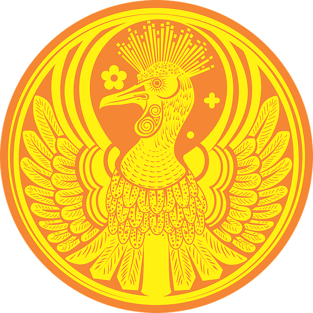

Стань стальной крысой. Гарри Гаррисон
Если ты сказал, что сестренка чудища отравилась серной кислотой, то отправляйся сразу на [229]. Если ты сказал что-нибудь другое, то на [347].
Куда дальше? [229], [347].Знаю, что ты чертовски устал. Так отдохни немного. Это — приказ! Теперь чувствуешь себя лучше? Тогда ступай по тропинке, что взбирается на холм. Похоже, она ведет к Зловонному замку. Ведь именно туда тебе и надо. Но, прошу, будь на этот раз поосторожней, помни: в волшебном ремне осталось всего два заряда. Тише! Шум веток за холмом. Если побежишь по тропке назад и скроешься в кустах, то ты — на [4]. Если останешься на месте и выяснишь, что произойдет дальше, то на [138].
Куда дальше? [4], [138].Берег совсем близок. И ты вполне благополучно выбираешься из воды. Возможно, мои опасения были беспочвенны. Ну, посмейся, может, я это заслужил… Но что за треск в кустах? Узнаешь на [218].
Идём дальше? [218].Возможно, слух меня подвел, но мне послышался стон из тех кустов слева. Слышишь, опять кто-то подает голос? Согласен, двигаясь на звуки, ты можешь угодить в хитроумную ловушку. Но не исключено, что в эту минуту кто-то отчаянно нуждается в твоей помощи. Взглянешь, кто там стонет? И ты смеешь именовать себя полевым агентом Спецкорпуса? Приказываю, медленно и осторожно отправляйся на [134] и выясни, кто там стонет!
Идём дальше? [134].Ты попал! Но если Роббин Гут тоже, то ты проиграл. Ты смотришь на его мишень. Ура! Он промахнулся! Счет равный: два-два. Соберись и стреляй! Окажешься на [343] или на [342].
Куда дальше? [343], [342].— Стой! — хрипло орет стражник. — Кто идет? — Я, — без затей отвечаешь ты. — Пароль! — приказывает стражник. Ты неохотно подходишь ближе и бормочешь: — Пароль — антидисестаблишментарианизм. Подняв над головой дубину, стражник несется на тебя с криком: — Пароль вчерашний! Шпион! Как поступишь? Увернешься от удара дубины? Тогда ты — на [232]. Или, может, выхватишь меч? В этом случае ты — на [76].
Куда дальше? [232], [76].Жизнь так редко дарит нам второй шанс. Вернись на [94] и хорошенько подумай.
Идём дальше? [94].Бредя по следам в пустыне, ты незаметно для себя оказываешься среди руин города столь древнего, что он был разрушен, еще когда наши с тобой предки вычесывали из меха блох и прыгали с ветки на ветку в джунглях на легендарной планете Грязь. Подумай о бренности всего сущего во Вселенной, но не погружайся в философские мысли слишком глубоко, помни, что ты на службе. Смотри! Следы обрываются у норы в песке! Что же случилось с профом? Ты подходишь ближе и читаешь надпись на камне рядом с норой: ОСТОРОЖНО! ЗЫБУЧИЕ ПЕСКИ! МНОГИЕ, ПРОВАЛИВШИСЬ, ПОПАДАЛИ В ПЕЩЕРЫ, ОТКУДА НЕТ ВОЗВРАТА. ПОМНИ, ТЫ МОЖЕШЬ СТАТЬ СЛЕДУЮЩИМ! Что за странный шорох? Осторожно, ведь ты можешь стать следующим! Ты опускаешь глаза, но поздно! Песок под тобой проседает, и ты падаешь на [253].
Идём дальше? [253].Опять попал! Победа! И не просто победа, а победа всухую! Со счастливой улыбкой ты переносишься на [311].
Идём дальше? [311].Проф нажимает на спусковой крючок, и ты получаешь в лицо облако газа. У тебя кружится голова, и ты без чувств падаешь на [82].
Идём дальше? [82].У тебя есть еще три золотые монеты! Ура! Ты трясущейся от нетерпения рукой достаешь их из левого сапога. Как ты их используешь? Конечно, купишь интересующую информацию! Повесь на указателе у дороги объявление с предложением награды в три золотые монеты всякому, кто на рассвете придет к виселицам у города и сообщит тебе местонахождение безумного профессора Гейстескранка. Сделано! А теперь хочешь совет мудрой Стальной Крысы? Вокруг полно бандитов. Закопай монеты и, пока не найдешь профа, не говори никому, где они. Как тебе моя идея? Вот и отлично! Так где ты закопаешь золото? Ты не хочешь говорить даже МНЕ?!! Но я ведь все равно увижу это твоими глазами на [140].
Идём дальше? [140].К счастью, тебя услышали. Кто-то ломится сквозь лес, направляясь к тебе. Вытаскивает тебя за шиворот из болота. Ты спасен! Но рад ли ты этому? Узнаешь дикий смех? Я-то ее сразу узнал. Твой спаситель — Бетси На-Все-Руки-Мастерица, и ты снова ее раб. Ты вырываешься и кричишь, но она, сковав твои руки и ноги, тащит тебя через лес. На твое счастье, из кустов выскакивает Арбутнот Отверженный. Теперь-то ты знаешь, на чьей стороне выступить, так что скорее двигай на [65].
Идём дальше? [65].Ты достаешь стрелу, натягиваешь тетиву, внимательно целишься и… Монстр бросается на тебя! Ты стреляешь и переносишься на [88].
Идём дальше? [88].А ты, оказывается, стреляный волк! Действительно, неизвестно, кто на этой планете-тюрьме заслуживает доверия, а кто нет. Так что иди своей дорогой и… Что это?.. Слышишь?.. Шелест листьев. Кто-то обходит тебя справа. О, да это та самая грациозная девушка. Ну что, побеседуешь с ней? Согласен: девушка симпатичная. И раз не поленилась догнать тебя, то ты ей, без сомнения, понравился. Отправляйся на [99].
Идём дальше? [99].Фрукты растут высоко, с земли их не достать. Ты взбираешься на дерево. Оранжевые фрукты и размерами, и формой напоминают грейпфруты, различие лишь в цвете. Ты хватаешься за ближайший, тянешь, вначале слабо, потом что есть сил, но длинный прочный стебель, которым фрукт прикреплен к ветке, не поддается. Выхватив меч, ты рассекаешь стебель. Отлично, но плод падает на землю и, разбрызгивая сладкий сок, с хлопком лопается. Собирай урожай аккуратней! Ты обхватываешь шершавый ствол дерева ногами, левой рукой берешься за фрукт, зажатым в правой руке мечом перерубаешь стебель. Вернув меч в ножны, с фруктом в руке сползаешь по стволу на землю. Снова забираешься на дерево и повторяешь операцию. И так вновь и вновь. Часа через три изнурительной работы на земле набирается оранжевая горка. Ты связываешь длинные стебли узлом и, перекинув фрукты через плечо, шагаешь по тропинке к [113].
Идём дальше? [113].Ты торчишь у таверны уже битый час, а из нее так никто и не вышел. Тебя мучит жажда, слух раздражают звон пивных кружек и веселое пение. Не мучайся, отправляйся в таверну на [139].
Идём дальше? [139].Ты ползешь по тоннелям уже не первый час. Хорошо, что ты не подвержен приступам клаустрофобии… Не ругайся и извини, что напомнил о твоих болезнях. Представь, что ты на поверхности, а вокруг — тесная облачная ночь. Как нельзя кстати впереди забрезжил свет. Ты бежишь к нему и оказываешься на [115].
Идём дальше? [115].Сознаюсь, попав в подобную переделку, я бы тоже вспотел. А может, поднапряжешься и попытаешься отбиться от четырех громил, которые волокут тебя на кухню? О, новобранец, я краснею. Где ты только нахватался таких слов? Ты уже на кухне. Тебя подтаскивают к огромному закопченному котлу, подвешенному над открытым очагом. Похоже, прежде чем кинуть тебя в кипящее масло, стражники собрались поживиться твоей одежонкой. Тебя швыряют на пол, и два громилы стягивают с тебя ботинки. Так я и думал, что ты наконец вспомнишь! Конечно, воспользуйся ремнем-невидимкой! Жми быстрей кнопку на пряжке, и ты — на [87].
Идём дальше? [87].Ты бредешь по широкому светлому тоннелю, и неприятности тебе вроде бы здесь не грозят. Согласен, вырезанные на стенах мерзкие монстры, пожираемые еще более мерзкими монстрами, портят настроение. Но вот тоннель расширяется, упираясь в каменную лестницу. Она ведет как вверх, так и вниз. На стене нарисованы две стрелки. Над той, которая указывает вниз, надпись «ТАМ ЛЕЖБИЩЕ ЗВЕЗДНОГО ЧУДОВИЩА», а над той, которая направлена вверх, «БЕЗОПАСНЫЙ ПУТЬ НАРУЖУ». Правдивы ли надписи? Не знаю. Решай, отправишься ли вверх на [124]. Или пойдешь вниз на [49].
Куда дальше? [124], [49].Заморил червячка? Вот и отлично. Отправляйся на перекресток дорог к [339], а там уж решишь, в какую сторону шагать дальше.
Идём дальше? [339].Ты получаешь именно то, что заслужил, доверившись Волосатому Гарри. Едва вас скрывают деревья, Гарри швыряет тебя на землю и, навалившись всем телом, вонзает в твое горло острые зубы. Надеясь, что жадность возьмет верх над его голодом, ты шепчешь, где зарыл золотые, и он с довольным урчанием убегает. Ты встаешь, понурив голову и размышляя о будущем. У тебя не осталось ни золота, ни оружия. Один, на Богом проклятой планете… Слушай, сынок, что тебе скажет Стальная Крыса. Когда ты был под гипнозом… Ты не помнишь, что был под гипнозом? Неудивительно, ведь Корпус свято хранит свои секреты! Так вот, когда ты был под гипнозом, Спецы Корпуса вживили в сустав твоего указательного пальца на правой руке машину времени. Щелкни пальцами, и перенесешься во времени на [80].
Идём дальше? [80].Твой план принят. Что там принят — подхвачен с восторгом! Все рабы, потерявшие когда-то друзей из-за неумеренного аппетита Волосатого Гарри, горят желанием посчитаться с ним, а заодно и сделаться владельцами Зловонного замка, у тебе же появляется реальный шанс схватить безумного профа. Твой план прост и вполне выполним. Слюя приковывают к общей цепи, он в гневе ревет, но от немилосердных ударов своей бывшей собственности быстро теряет сознание и умолкает. Тебя приковывают к той же цепи, и процессия, возглавляемая теперь Арбутнотом, направляется к Зловонному замку на [34].
Идём дальше? [34].— Откуда я знаю, что тебе нужно? — спрашивает Роббин Гут. Ты тихо бормочешь: «Да, откуда?» — Да каждому в джунглях известно, что Сейди-Садистик послала тебя в тайный храм за Рубином Джунглей. У тебя только один шанс найти его и остаться в живых. Иди по этой тропинке, в конце встретишь того, кто поможет тебе. Большего сказать не могу, опасаясь за собственную жизнь. Прощай! Стараясь не поворачиваться к властелину леса спиной, ты идешь к указанной им тропе и следуешь по ней на [340].
Идём дальше? [340].Над твоей головой — безоблачное голубое небо, под ногами — желтый в красных пятнах песок. Красные пятна — кровь?! Не спрашивай меня, я знаю не больше твоего и советую выкинуть красные пятна из головы. Прислушайся к реву толпы на трибунах. Интересно, почему она так возбуждена? Да, теперь и я вижу. Через небольшую дверцу на арену выходит огромный лев. Он зевает и осматривается. К несчастью, он видит тебя и с ревом приближается. Тебе кажется, что хищник улыбается. Или, может, он демонстрирует свои острые клыки? В твоей руке лишь птичье перо. Согласен, не самое надежное оружие, хотя… Внимание, лев готовится к прыжку. Если ты полагаешь, что, пощекотав льва, вызовешь у него смех и в благодарность он оставит тебя в покое, то отправляйся на [332]. Если, дождавшись прыжка хищника, отскочишь в сторону, то на [302].
Куда дальше? [332], [302].С чего это старушка так шарахнулась от тебя? У тебя угрожающий вид? Или, быть может, ты давно не принимал ванну? Думается, она так испугана оттого, что вы оба — на планете-тюрьме, где царят жестокость и насилие, где все против всех. Что предпримешь? Вывернешь старушке руку и спросишь, цедя сквозь зубы, где найти профа Гейстескранка? Тогда ты окажешься на [167]
Или предложишь серебряную монету за интересующую тебя информацию? Тогда ты — на [90].
Куда дальше? [167], [90].Согласен, золотая монета — многовато за переправу через реку. Но что поделаешь? Вот ты уже на середине реки. Ты переводишь взгляд с противоположного берега на лодочника и, заметив в его глазах алчный блеск, сразу понимаешь его намерения. Но сделать уже ничего не успеваешь. Удар веслом по голове… Боже, какая боль! Бултых! Ты за бортом на [205].
Идём дальше? [205].Ты промахнулся, а Роббин Гут попал. Не беда! Пока — ничья, один-один. Ты целишься, стреляешь, и стрела со свистом рассекает воздух, а ты оказываешься на [163]. Или на [289].
Куда дальше? [163], [289].Проиграв очередной бой, ты, связанный, лежишь на полу в подвале Зловонного замка. Но тише, сюда кто-то идет. Стражники. Они грубо поднимают тебя на ноги и волокут в зал на [121].
Идём дальше? [121].Понимаю, понимаю, тебе не очень приятно. Поверь, и искренне сочувствую тебе. Все мы совершаем ошибки. Возможно, тебя утешит то, что я бы на твоем месте поступил точно так же. В самом деле, в галактике найдется немного людей, наделенных природным иммунитетом к сонному газу. Если честно, то дылда-охранник, который тебя избил, первый такой человек, встреченный мною. Если, конечно, слово «человек» уместно по отношению к нему. Да не скули хотя бы секунду. Слышишь, дверь снова открывают? На этот раз воспользуйся дымовой гранатой и окажешься на [64].
Идём дальше? [64].Итак, хочешь ты того или нет, но в соответствии с заданием ты отправляешься на планету Скралдеспенд. На место тебя доставит недавно изобретенный и до сих пор толком не опробованный передатчик материи. Задача у тебя несложная: найдешь профессора Гейстескранка… Повторяю по слогам: Гей-стеск-ранка. Значит, найдешь профессора, пожмешь ему руку, одновременно надавишь на кнопку портативного передатчика материи (держи его в правом кармане), и вы оба перенесетесь сюда. ЕСТЬ ВОПРОСЫ? Нет-нет, в Корпусе вовсе не занимаются похищением. Назовем твое маленькое дельце превентивным арестом. Дело в том, что с виду он профессор как профессор — взлохмаченная седая шевелюра, высокий морщинистый лоб, глаза навыкате — но, к сожалению, в голове у него не хватает как минимум половины винтиков. Старый безумец изобрел оружие такой разрушительной силы, что при одной лишь мысли о нем меня бросает в дрожь. Тебе тоже лучше задрожать… ДРОЖИ! ЭТО ПРИКАЗ. Так-то лучше. Знай, что если ты не справишься с заданием, то, весьма вероятно, погибнет Вселенная. Не подкачай, ладно? Я врубаю передатчик материи, а ты немедленно переносишься на [42].
Идём дальше? [42].Если ты ответил, что слон тут же вскарабкается на ближайшую пальму, то получаешь еще двадцать пять очков. Дракон ревет: — Вопрос был очень простым! Теперь загадка посложней. Если ответишь на нее, то сразу получишь сто очков. Что такое клиренс? Если ты считаешь, что клиренс — многоцелевая деталь в двигателе межзвездного корабля, то отправляйся на [346]. Если одна из характеристик автомобиля, то на [292]. Если устройство для спуска воды, то на [344].
Куда дальше? [346], [292], [344].Сержант заявляет о своих подозрениях, но Арбутнот, не растерявшись, с ходу предлагает ему крупную взятку, и они уединяются в будке стражи. Ты стоишь рядом и потому слышишь из будки глухой удар. Запомни на будущее, как Арбутнот вручал начальнику стражи взятку и, применяя на практике его прогрессивный метод, сэкономишь кучу денег. Незначительное препятствие на пути устранено, быстрее в замок на [118].
Идём дальше? [118].Говори громче, а то твои губы то и дело скрываются в болотной жиже, и я слышу только бульканье. Все еще тонешь? Так отбрось посох, от него уже нет никакого толку. И кричи громче, призывая на помощь, пока не окажешься на [12].
Идём дальше? [12].Впереди показывается замок. Рабы стирают с лиц счастливые улыбки и приближаются к воротам. Неожиданно Слюй приходит в себя и начинает во всю глотку вопить, предостерегая стражу, но дубинка в руке Арбутнота описывает короткую дугу, и голос бывшего работорговца умолкает. Садисты-стражники на высоких стенах громко гогочут, и ты выдавливаешь из себя подобие улыбки. Начальник стражи — крутой парень (настолько крутой, что свои сержантские лычки он пришил не к одежде, а прямо к собственным плечам), — чувствуя в поведении рабов подвох, приближается к колонне. Быстрее подкинь ДОСП, или, как ты его называешь, монету. Если выпадет орел, то начальник стражи громка заявит о своих подозрениях, и ты вместе с рабами очутишься на [32]
Если ДОСП покажет решку, то начальник стражи откроет перед вами массивные, окованные железом ворота, и ты с рабами — на [118].
Проф опять перехитрил тебя. Оказывается, он затаился за дверью, и как только ты выскочил в коридор, огрел тебя чем-то тяжелым по голове. Через некоторое время ты приходишь в себя, нехотя встаешь, мотаешь головой и обнаруживаешь, что тебя занесло на [197].
Идём дальше? [197].Ты, никак, рехнулся?! Пулей лети на [120] !
Идём дальше? [120].Ты следуешь за профом из тронного зала, но судьба вновь немилостива к тебе. — Нет! — кричит Волосатый Гарри и плотоядно облизывается. — Сначала желудок, а уж потом наука! На кухню его! Ничего не поделаешь, отправляйся на [18].
Идём дальше? [18].— Благородный Сир, — говорит тебе юноша. — Приятно, что хоть кому-то небезразлична моя судьба, но, к сожалению, помочь мне никто уже не в силах. Я был рабом кошмарно жестокого Слюя Работорговца. Когда я, обессилев, уже не поспевал за остальными рабами, он жестоко избил меня, затем хладнокровно сломал мне ногу и оставил умирать. Но уж лучше смерть здесь, под кустом, чем в Зловонном замке, куда вел нас бессердечный Слюй. История несчастного до глубины души трогает тебя. Ты достаешь из кармана походную аптечку и прижимаешь ее к поврежденной ноге юноши. Автоматическое устройство тут же ставит диагноз «закрытый перелом голени и многочисленные ушибы и ссадины», вонзает в мышцы парнишки иголки, впрыскивает антибиотики и обезболивающее. Два высунувшихся из аптечки манипулятора выворачивают ногу так, что кость занимает предписанное ей природой положение, третий накладывает на ногу мгновенно твердеющий на воздухе материал. Через минуту нога срастается, манипуляторы снимают уже ненужный гипс. Парнишка удивленно смотрит на ногу, затем шевелит ею и встает. Из его голубых глаз потоком хлещут слезы радости, и он снова и снова целует твою руку. — Ты мой храбрый спаситель! (Чмок-чмок.) Если бы ты вызволил из рабства и моих товарищей, то слава твоя не померкла бы в веках! (Чмок-чмок.) Его лесть вскружила тебе голову. Ты встаешь и, стирали носовым платком его слюну с руки, шагаешь сквозь заросли к тропинке, а затем по ней к [216].
Идём дальше? [216].Ты бежишь, обливаясь потом, коридору не видно конца, повсюду обглоданные до зеркального блеска кости. Похоже, Волосатый Гарри был настоящим обжорой. Слышал? Да-да! Впереди хлопнула дверь! Жми же! Вот и дверь. Не выясняя, заперто ли, ты вышибаешь ее мощным ударом дубины и бежишь дальше. Перед тобой метрах в десяти — безумный профессор. Прибавь скорости! Проф шмыгает в дверь направо. Ты сворачиваешь за ним, влетаешь по крутой лестнице на чердак и видишь его выползающим через крошечное, размером со вход в крысиную нору, слуховое окошко. Ты стремглав кидаешься к окошку. Поздно! Проф уже на крыше замка. Но, если пролезть через окошко удалось пожилому профессору, удастся и тебе! Ползи за ним на [255].
Идём дальше? [255].Ты промахнулся, не попав даже в дерево. Ты переводишь взгляд на мишень соперника. Он попал в самую середину и снова целится. Ты тоже натягиваешь тетиву, прицеливаешься, вы одновременно стреляете. Попал ли ты? Узнаешь на [254]. Или на [284].
Куда дальше? [254], [284].В ответ на твою просьбу Сейди кивает. — Ты прав, чужак. В Эндсвилле живут такие отпетые негодяи, что мои Сыны и Дочери садизма в сравнении с ними сущие ангелы. Сейди отдает приказ, и крутобедрая широкоплечая дочь садизма вмиг приносит и раскрывает перед тобой большой кованый сундук. В сундуке — оружие. — Выбирай, чужак, что тебе больше по сердцу, — говорит Сейди. Если возьмешь лук и колчан со стрелами, то ты — на [315]. Если «утреннюю звезду», то на [54]. Если же «дымовые гранаты», то на [50].
Куда дальше? [315], [54], [50].Вот мы и на солнечной Скралдеспенде. Что значит: «здесь жуткий ветер и снег пополам с дождем»? Заруби на носу, нытиков мы в Корпусе не держим! У тебя ответственное задание по спасению Вселенной — я это проделывал неоднократно. Теперь — некоторая информация, которую я по рассеянности не сообщил тебе прежде. Скралдеспенд — планета-тюрьма, на нее отправляют преступников более тысячи миров… Нет-нет, не жми на кнопку в кармане! Пока ты второй рукой не держишь за руку профессора Гейстескранка, передатчик материи не работает. Нет, пистолет тебе не положен. Из него можно убить кого-нибудь, а скорее всего, пристрелить себя самого. В твоем распоряжении экипировка, которой обычно на заданиях пользуюсь я: дымовые гранаты и «лимонки» с сонным газом, обезвоженный питьевой спирт, перочинный нож, фильтры в нос, чтобы тебя не свалил сонный газ из твоих собственных гранат, пять серебряных и пять золотых монет, миниатюрная аптечка, а если вдруг заскучаешь, (что, конечно, маловероятно) — две книжки комиксов. Итак, удачи тебе и до встречи. Бог даст, увидимся. Да, чуть не забыл. Из доклада нашего нештатного агента на Скралдеспенде следует, что безумного профа последний раз видели в городишке с названием Гроаннсвилль. Двигай туда на [62].
Идём дальше? [62].Ты совершил ошибку. Склон слишком скользкий и крутой, на берег по нему не выкарабкаться. Выбора нет, плыви к дальнему, но пологому и песчаному берегу [63].
Идём дальше? [63].Роббин Гут с удовольствием наблюдает, как ты, швырнув на землю лук, с остервенением топчешь его. Возможно, активный выход эмоций поможет тебе справиться с моральной травмой. Минут через пять властелину здешнего леса надоедает этот спектакль. — За мной должок, — с улыбкой напоминает он. — Я обещал оказать тебе услугу в качестве утешения за проигрыш и сдержу свое слово. Я даже знаю, что ты ищешь. Откуда он знает, что тебе нужно? Этот вопрос разъяснится на [23].
Идём дальше? [23].Одумайся, новобранец! Разве полевой агент Спецкорпуса лишит жизни безоружного старика? Почти рыдая, ты размышляешь, сколь чудовищную ошибку чуть было ни совершил, дружески похлопываешь стражника по плечу и отбываешь на [215].
Идём дальше? [215].А надзиратель-то оказался вполне приличным человеком. Он сообщил: чтобы попасть в Гроаннсвилль, нужно отправиться на [193]
, и сразу повесил трубку. Правда, не исключено, что он соврал. Если ты не поверил, то ступай на перекресток [339], а там уж решишь, в какую сторону двигаться.
Куда дальше? [193], [339].Не без основания боясь поскользнуться, ты медленно спускаешься по мокрым ступеням. Вскоре лестница кончается, перед тобой — темный тоннель. Ну, ты знаешь, что делать. Ползи. Ты ползешь по тоннелю, к счастью, вскоре впереди появляется свет. Ты прибавляешь скорость и оказываешься в комнатенке с металлическими стенами. Кроме дыры, через которую ты сюда попал, других выходов вроде бы нет. Ты уже было решаешь возвращаться назад, но внезапно тоннель перед тобой с ужасным грохотом обваливается. Ты в ловушке! Но что это? Там, в темном углу комнатки? Ты направляешься в угол и видишь на стене ярко-красную ручку с искусно вырезанным человеческим черепом на конце. Над ручкой в металле вытравлена инструкция на тридцати четырех языках, по крайней мере половина из которых давным-давно забыта. Ты находишь понятную тебе надпись. Она проста: «Дерни за меня». Хорошенько поразмыслив и сообразив, что выбора все равно нет, ты протягиваешь к ручке дрожащие пальцы, хватаешься за нее, дергаешь, и… Пол под тобой расходится, и ты падаешь, падаешь, падаешь, до самой [98].
Идём дальше? [98].Мрачно, сумрачно, вокруг темный, дремучий лес… Что-то мне это напоминает. А, вот что: Дремуч вокруг и темен лес, Но верен клятве буду век И прошагаю сотни миль Я, не сомкнув усталых век. Это четверостишие написано тысячелетия назад на легендарной планете Грязь. Или планету называли Землей? Неважно. Лучше вспомни, кто автор этих строк. Если, по-твоему, это Роберт У.Сервис, то отправляйся на [61]. Если Роберт Фрост, то на [67].
Куда дальше? [61], [67].По-моему, ты выбрал верный путь. Ведь если вспомнить, почти все указатели на этой чертовой планете обманывали тебя. Весело перепрыгивая через ступеньку, ты сбегаешь по лестнице. Перед тобой — распахнутая дверь. Загляни в нее. Ты видишь вроде бы безопасную ярко освещенную комнату, посередине стоит кресло на колесиках, следы от колесиков ведут в тоннель, конец которого освещен ярким солнечным светом, рядом с креслом на полу надпись. В переводе с эсперанто она гласит: СПАСИБО, ЧТО ЗАГЛЯНУЛИ К НАМ, НО, К СОЖАЛЕНИЮ, ЗВЕЗДНОЕ ЧУДОВИЩЕ ДАВНО МЕРТВО. ПОЖАЛУЙСТА, СЯДЬТЕ В КРЕСЛО, НАЖМИТЕ КНОПКУ НА ПОДЛОКОТНИКЕ — И ОКАЖЕТЕСЬ СНАРУЖИ. ПРИЯТНОГО ВАМ ПУТЕШЕСТВИЯ. Я, как и ты, не знаю, насколько были правдивы какалоки. Решай, сядешь ли в кресло и, нажав кнопку, отправишься на [304]. Или побредешь по тоннелю вдоль следов от колес на [337].
Куда дальше? [304], [337].Ты, беззаботно насвистывая и помахивая сумкой с дымовыми гранатами, идешь по тропе, усеянной черепами. Сейди не соврала — часов через пять ты видишь на ближайшем холме прогнившие крыши, а у дороги указатель: «Эндсвилль. 467 жителей». Тут издалека доносится жуткий вопль, в указателе что-то щелкает и число жителей сокращается до 466. Ничего не скажешь, пренеприятный городишко этот Эндсвилль! Но выбора у тебя нет, шагай дальше! Ты направляешься к городку и вскоре слышишь за поворотом тяжелое дыхание и громкие проклятия. К тяжелому дыханию и проклятиям тебе не привыкать, и, достав из сумки гранату левой рукой, а правой крепче сжав рукоять меча, ты смело поворачиваешь на [164].
Идём дальше? [164].Ты победил! Стражник на коленях молит тебя о пощаде: — О, могущественный незнакомец! Ты победил! И теперь можешь разрубить меня на части и пошвырять их с моста в реку! Но смилуйся над пожилым человеком! Через полгода я выхожу на пенсию. Сохрани мне жизнь, и я поведаю, как тебе избежать верной гибели у дальнего конца моста. Если пожалеешь старика, то ты — на [215]
Если будешь до конца непреклонен, устраняя опасность с тыла, разрубишь его на части, ты — на [45].
Куда дальше? [215], [45].Ты поешь, вкладывая в песню всю душу. Неудивительно, ведь от успеха выступления зависит твоя жизнь! Песня кончается, и ты тяжело переводишь дыхание. Кабан, роя землю копытами, смеется: — Ха-ха-ха! Хо-хо-хо! Хрю-хрю-хрю! До чего же слаб и пуглив человек! Не бойся, я помог бы тебе, какую бы ты песню ни исполнил. Твое приключение на планете-о тюрьме подошло к логическому концу. Отправляйся с триумфом на [307] !
Идём дальше? [307].Что с того, что деревенька перед тобой напоминает городскую свалку? Ведь на табличке, прибитой к придорожному столбу, ясно написано «Хестелорт». Нет, не разворачивайся и не убегай! Ты же явился сюда не квартиру снимать, а разузнать о профессоре Гейстескранке. Вон и таверна. Как там она называется? А… «Вздернутый легавый». Нет-нет, это вовсе не дурное предзнаменование. Ведь ты же не рассчитываешь, что жители этой планеты любят блюстителей закона? Если зайдешь в таверну и за кружечкой холодного пивка расспросишь местных о профе, то ты окажешься на [139]
Или, может, опасаешься, что в таверне столкнешься с дурно воспитанными посетителями? Тогда подожди на [16]
, а как только из «Вздернутого» кто-нибудь выйдет, подойди к нему и узнай, где проф.
Куда дальше? [139], [16].Ты, беззаботно насвистывая и вращая над головой «утреннюю звезду», идешь по тропе, усеянной черепами. Сейди не соврала — часов через пять ты увидишь на ближайшем холме прогнившие крыши, а у дороги указатель «Эндсвилль. 467 жителей». Тут издалека доносится жуткий вопль, в указателе что-то щелкает, и число жителей сокращается до 466. Ничего не скажешь, пренеприятный городишко этот Эндсвилль! Но выбора у тебя нет, шаг ай дальше! Ты направляешься к городку и вскоре слышишь за поворотом тяжелое дыхание и громкие проклятия. К тяжелому дыханию и проклятиям тебе не привыкать, и ты, лишь крепче сжав ручку «утренней звезды», смело поворачиваешь на [71].
Идём дальше? [71].Перед тобой крутой подъем. Но ты не слабак, взберешься! Вот ты и на вершине холма. Отдохни минут пять. Теперь спустись с холма и вновь углубись в джунгли. Тропа сворачивает налево, вливается в другую, ты попадаешь на [206].
Идём дальше? [206].Удивляюсь, новобранец, как с такой дырявой головой можно попасть в Специальный Корпус! Ну, пошевели, пошевели мозгами! Вспомни, Сейди-Садистик наградила тебя десятью золотыми монетами, семь из них ты сунул в карман, остальные спрятал. Куда? Вспомнил наконец? Конечно, в левый сапог! Теперь отправляйся на [11].
Идём дальше? [11].Впереди слышна частая дробь шагов! Ты выбрал верное направление! Быстрей же! А вот и безумный проф. Стоит в дверном проеме, за ним — голубое небо. Он в ловушке! Забавно, но его вдруг не стало. Будто корова языком слизнула. Ты опасливо выглядываешь из дверного проема и видишь, как проф, уцепившись за веревку, карабкается вверх и скрывается на крыше замка. Рядом с тобой болтается веревка. Что предпримешь? Полезешь, презрев опасность, за старым безумцем на крышу? О, да ты храбрец! Преодолев головокружение, ты окажешься на [255].
Идём дальше? [255].На трибунах беснуется толпа, вопит, орет и швыряет на арену пустые бутылки из-под пива. Ты не обращаешь на дурно воспитанных зрителей внимания, твой взгляд прикован к противнику — безобразному, давно небритому верзиле, чье мускулистое тело покрыто шрамами от сотен битв. В левой руке верзилы щит, в правой, которую он занес над головой, короткий меч. Верзила, испустив боевой клич, бросается на тебя. Не стой же столбом, защищайся, дерись за свою жизнь! Продемонстрируй, на что способен полевой агент Спецкорпуса! Если попытаешься накинуть сеть на меч, которым размахивает верзила, то ты на [283]. Если швырнешь сеть ему под ноги и рванешь что есть сил, то на [160].
Куда дальше? [283], [160].— В твоих жилах, не иначе, течет королевская кровь! — говорит Роббин Гут, ведя тебя от завистливо глядящих вслед преступников. — Все они — отъявленные лгуны, мне же ты можешь верить. Во всяком случае, при нормальных обстоятельствах. К сожалению, в делах, касающихся золота, я, как и все, блюду свою выгоду. Он пребольно бьет тебя кулаком в висок. Очнувшись на земле, ты видишь нацеленную тебе в переносицу стрелу. Объяснения излишни. Тяжело вздохнув, ты говоришь Роббину Гуту, где зарыл золотые. Он, улыбаясь, убегает прочь. Ты встаешь, понурив голову и размышляя о будущем. У тебя не осталось ни золота, ни оружия. Один, на Богом проклятой планете… Слушай, сынок, что тебе скажет Стальная Крыса. Когда ты был под гипнозом… Ты не помнишь, что был под гипнозом? Неудивительно, ведь Корпус свято хранит свои секреты! Так вот, когда ты был под гипнозом, спецы Корпуса вживили в сустав твоего указательного пальца на правой руке машину времени. Щелкни пальцами, и перенесешься во времени на [80]..
Идём дальше? [80].Отлично сработано! Ты уворачиваешься от сети, ударом щита по голове опрокидываешь верзилу на землю. Миг, и твоя нога на его груди, меч — у горла. Как поступишь с врагом? Убьешь ли на месте или даруешь жизнь? Ты смотришь на Королевскую ложу, ждешь указаний Сейди-Садистик. Она медленно поднимает правую руку. Ее решение узнаешь на [91].
Идём дальше? [91].Видимо, поэзия — не твой конек. Четверостишие принадлежит перу Фроста. Ну да ладно, полевой агент Корпуса не обязан быть докой в древней литературе (хотя образование — дело не лишнее). Словом, отправляйся на [67].
Идём дальше? [67].Ну, что я говорил, неопытный и слегка напуганный новобранец? Вот мы и свиделись. Что? Ты меня не видишь? Неудивительно. Ведь я сижу в главном здании специального Корпуса, в руке у меня стакан с джусом, на голове металлический шлем, провода от которого тянутся к машине, именуемой Межмозговой Подкорковый Интерпретатор, модель четыре, сокращенно МПИ-4; Что? Сейчас обьясню, как работает эта хитрая машина. С помощью электроники наши мозги соединены накоротко, и теперь я, глядя твоими глазами, вижу то, что видишь ты, слушаю твоими ушами то, что слышишь ты, и даю мудрые советы. Нет, никакой помощи, только советы, а решение всех проблем — за тобой. Ну что ж, начнем, в детали вникнешь по ходу дела. Сейчас ты бредешь по тропинке в лесу. Тропинка извивается среди деревьев, дождь кончился, но ветер усилился, так что берегись падающих веток. Говоришь, они тебя не беспокоят? Правильно, новобранец, все мы — славные ребята из Специального Корпуса — смеемся над опасностями. Прекрати хихикать! Впереди что-то движется. Кто-то идет навстречу. Остановись и подожди. Так, хорошо. Появилась человеческая фигура. Да еще какая! Фигурка-то принадлежит юной грациозной девушке. У тебя есть шанс показать, из какого теста ты слеплен. Можешь отойти в глубь леса или приблизиться к ней и заговорить. Выбирай! Если уходишь, то отправляйся к [14]. Если остаешься, то — к [99].
Куда дальше? [14], [99].Благополучно выбравшись на берег, ты отряхиваешь с себя вонючие зеленые водоросли и оглядываешься. В полумиле от тебя приземлился воздушный шар. Беги к нему на [130], согреешься по дороге.
Идём дальше? [130].Ты отлично сработал. Не затворив дверь, стражник с криками мечется по камере, ты же, встав на четвереньки, выползаешь в коридор. Дым рассеивается, так что поднимайся на ноги и беги! Длинный коридор еще не кончился, а ты почему-то встаешь, как вкопанный. Теперь и я слышу голоса. И вижу надвигающихся на тебя шестерых тяжеловооруженных охранников. Быстрее швырни гранату с сонным газом и беги на [114] ! Или дымовую гранату и ползи на [345].
Куда дальше? [114], [345].Бой был жаркий, и твоя помощь пришлась кстати. Как только ты кусаешь Бетси за коленку, она с воем бросается в лес. Громила поворачивается к тебе, кошмарно рычит, заносит над головой дубинку… Бежать? Но ты сидишь на земле, даже вскочить не успеешь… Слушай, это он: — Благодарю тебя, отважный незнакомец. Я пришел, чтобы подарить тебе свободу, и ты вовремя подоспел на помощь. Он отшвыривает дубинку и, точно гнилые нитки, разрывает цепи на твоих руках и ногах, после чего торжественно продолжает: — Я Арбутнот Отверженный. Я вел жизнь преступника, и мир отверг меня в наказание за преступления, говорить о которых мне не дозволено. Я был сослан на планету-тюрьму. Ты поступил со мной как истинный друг, пришел на помощь, и я этого не забуду до гробовой доски. Ступай же, друг, с миром и помни, что всегда можешь рассчитывать на меня. На прощание ты машешь благородному Арбутноту рукой и отправляешься на [48].
Идём дальше? [48].Ты с комфортом спускаешься, стоя на движущейся ступеньке. Проходит пять минут, десять, пятнадцать. Согласен, присесть — неплохая идея. Ты садишься на ступеньку: усталые мышцы ноют. Но что это? Почему вдруг твои глаза заливает обильный пот? Встань, посмотри вперед. Боюсь, что я тоже вижу озеро расплавленной лавы, куда сползает движущаяся лестница. Что ж, ступай назад. Ведь эскалатор опускается совсем не быстро. Спасибо, что поправил меня. Действительно, эскалатор ОПУСКАЛСЯ не быстро, а сейчас несется, как угорелый, и с каждой секундой наращивает скорость. Воздух становится все жарче, озеро лавы — все ближе… Но ты видишь свой единственный шанс на спасение — крошечный каменный островок в озере лавы. Приготовься! Прыгай на [181] !
Идём дальше? [181].С поэзией мы разобрались, ты оказался прав, но лес по-прежнему мрачен и неприветлив. Не торопись, внимательно смотри по сторонам; неизвестно, какие создания скрываются в чаще. Вот так сюрприз! Дорога перед тобой разбегается в четырех направлениях. Надеюсь, ты не забыл свою задачу? Ты направляешься в Гроаннсвилль, чтобы выяснить, где находится безумный профессор Гейстескранк. Но по какой дороге двигаться? Вопрос, как говорится, не в бровь, а в глаз. Не спрашивай меня. Я, как и ты, впервые на этой негостеприимной планете. Чу… Слышишь? По-моему, приближаются чьи-то шаги? Так и есть, сюда кто-то идет. Спрячься в придорожных кустах и выясни, кто это. Ну, это всего лишь опирающийся на посох старик. А не срезать ли и тебе посох? Вокруг полно подходящих веток. Достань нож, нажми на кнопку. Прекрасная сталь, правда? Если ты, срезав посох и убрав нож в карман, выйдешь навстречу старику, то двигайся на [97]
Если, демонстрируя, что ты вооружен, выйдешь с раскрытым ножом в руке, то отправляйся на [146].
Куда дальше? [97], [146].Ты поешь, вкладывая в песню всю душу. Неудивительно, ведь от успеха зависит твоя жизнь! Песня кончается, и ты тяжело переводишь дыхание. Кабан, роя землю копытами, смеется: — Ха-ха-ха! Хо-хо-хо! Хрю-х хрю-хрю! До чего же слаб и пуглив человек! Не бойся, я помог бы тебе, какую бы песню ты ни исполнил. Твое приключение на планете-тюрьме подошло к логическому концу. Отправляйся с триумфом на [307] !
Идём дальше? [307].Ты громко взываешь о помощи, но роботы — жалкие трусы! — вопя от ужаса, разбегаются кто куда. Ты тоже разворачиваешься и, не чуя под собой ног, удираешь, но гигант оказывается гораздо проворнее, чем ты предполагал. Он бежит за тобой, грязно ругаясь, наступает на пятки, вот-вот схватит! Выбора нет, поворачивайся и принимай бой! Тут тебе на плечо ложится грязная волосатая ручища. Ты извиваешься, силишься вырваться, но в, медвежьих объятиях гиганта беспомощен, как дитя. Гигант обыскивает тебя и, найдя Рубин Джунглей, оглашает лес победным ревом. Тычок его кулака в спину, и ты оказываешься на земле. Детина грубо хватает тебя за ноги, подтаскивает к дереву, привязывает к стволу лианами. Если желаешь знать, что дальше, немедленно отправляйся на [70].
Идём дальше? [70].Плохи твои дела! Ты напрягаешься, пытаешься освободиться, но лианы держат крепко. Неужели тебе конец? — Тебе конец! — рычит гигант, полируя Рубин Джунглей о набедренную повязку. — Я ведь не случайно такой волосатый! Волосатый Гарри Убийца Каннибалов приходится мне двоюродным братом, и и полностью разделяю его гастрономические пристрастия. С братом во мнениях мы не сошлись только относительно метода приготовления пищи. Он предпочитает мясо, сваренное в котле, я же поклонник жаренного на открытом огне. Довольно урча себе под нос, гигант собирает сухие сучья, заваливает тебя ими по самую шею, затем достает из складок в набедренной повязке газовую зажигалку и, щелкнув кремнем, подносит к веткам. Ничего не поделаешь, новобранец, видимо, быть заживо изжаренным за сотни световых лет от дома тебе написано на роду. Все еще сопротивляешься? Перекусываешь лианы зубами? Что ж, посмотрим на [278], что у тебя получится.
Идём дальше? [278].Навстречу тебе выезжает ковбой на шестиногой лошади. — Отдай мне, чужак, все, что у тебя есть! — орет ковбой, размахивая над головой веревкой. Видя, что он безоружен, ты презрительно хмыкаешь и бросаешься на ковбоя в атаку, но шестиногий скакун увозит его на безопасное расстояние. Был бы у тебя лук, ты пристрелил бы наглеца, но «утренней звездой» и мечом тебе его не достать. Ковбой взмахивает рукой, летит лассо, ты пытаешься увернуться, но не успеваешь. Петля обвивает тебя, ковбой дергает за конец веревки, ты, полуоглушенный, падаешь. Ковбой спрыгивает, на землю и разоружает тебя. Неужели тебе конец?! Узнаешь на [161].
Идём дальше? [161].А Сейди-Садистик не такая уж садистка, как о ней говорят. Ты видишь ее кулак, большой палец направлен вверх. Толпа громко восхваляет милостивую правительницу и тебя — победителя. Ты раскланиваешься и, пнув напоследок поверженного врага, удаляешься на [348].
Идём дальше? [348].Тропа вьется среди холмов, вокруг мрачные джунгли, из чащи доносятся таинственные звонки. Но ты ничего не боишься, идешь себе, помахивая мечом и весело насвистывая. Почему ты остановился? Вижу, вижу. Тропу перед тобой пересекает образованный землетрясением разлом. Трещина в земле слишком широка, чтобы перепрыгнуть, и слишком глубока, чтобы спуститься вниз. Как поступишь? Учти, что возвращение назад — пустая трата времени. Да, теперь и я вижу узенькую тропку, которая взбирается на холм справа от тебя. Что ж, следуй по тропке на [313].
Идём дальше? [313].Отлично сработано! Робот по инерции проносится мимо, а ты, воспользовавшись этим, бьешь его рукоятью меча по затылку. Он падает, но с удивительным проворством вскакивает на ноги и вновь атакует тебя. Примерившись, ты наносишь ему удар мечом в грудь. Что дальше, узнаешь на [320].
Идём дальше? [320].Гигант оказался гораздо проворнее, чем ты предполагал. Грязно ругаясь, он бежит за тобой, наступает на пятки, вот-вот схватит. Выбора у тебя нет, принимай бой! Ты поворачиваешься. Меч против дубины — у тебя приличные шансы на победу. Но тут же выясняется, что ты вновь недооценил гиганта — он ловким ударом дубины выбивает меч из твоей руки. Все потеряно? Ты разворачиваешься и вновь удираешь от него, но через секунду тебя останавливает грязная волосатая ручища на плече. Ты извиваешься, пытаешься вырваться, но в медвежьих объятиях гиганта ты беспомощен, как дитя. Гигант обыскивает тебя, находит Рубин Джунглей и оглашает лес победным ревом. Тычок его кулака в спину, и ты — на земле. Детина грубо хватает тебя за ноги, подтаскивает к дереву, привязывает к стволу лианами. Если желаешь знать, что дальше, смотри на [70].
Идём дальше? [70].Отлично сработано! Ты перерубаешь дубину в руке стражника пополам. Бормоча проклятия, он отступает, затем вдруг выхватывает из-за пояса кинжал и вновь бросается на тебя. Если, отступив на шаг, ударишь его мечом по ногам, ты — на [310]. Если по голове, то на [237].
Куда дальше? [310], [237].Одумайся, новобранец! Разве полевой агент Спецкорпуса лишит жизни беспомощного ржавого робота? Почти рыдая, ты размышляешь, сколь чудовищную ошибку чуть было ни совершил, дружески похлопываешь робота по плечу и отбываешь на [78].
Идём дальше? [78].— Благодарю, о, могучий и благородный чужестранец! — скрипит робот. — В награду за доброту я помогу тебе! Когда перейдешь мост, увидишь, что дорога разделяется надвое. Если свернешь налево, то в считанные секунды умрешь мучительной смертью от укусов ядовитых змей, которых там превеликое множество. Правая же дорога безопасна. Иди же, и вечная тебе благодарность от старика! Пожелав старику сто лет без капитального ремонта, ты идешь к противоположному концу моста на [128].
Идём дальше? [128].Полагая, что с тобой кончено, стражник с победным воплем кидается на тебя, но ты бьешь его обеими ногами в грудь. Он падает на край моста, ты приставляешь острие меча к его горлу, и вы оба переноситесь на [51].
Идём дальше? [51].Ты вновь под виселицами среди преступников, алчущих твоего золота. Они не знают главного: тебе уже известно, что по крайней мере один из них обманщик. Говоришь, ты с самого начала это знал? Просто, разыскивая безумного профа, ты был вынужден им верить? Так продолжай свои попытки, несмотря ни на что! Но не доверяй одному и тому же проходимцу дважды! Итак, напоминаю тебе варианты выбора. Герцог выглядит респектабельным, ему не нужно твое золото. Если вспрыгнешь на его лошадь, то галопом помчишься на [330]
Арбутнот не раз спасал тебе жизнь. Ты — единственный, кто не отверг его. Не отвергай же и сейчас, а не то он расплачется. Иди с ним на [149]
Но и Роббин Гут не обманул тебя. Если примешь его предложение, то отправляйся на [59]
Сейди-Садистик тоже вела с тобой честную игру. К тому же в разорванной одежде она выглядит весьма сексуально. Может, отправишься с ней на [159]
И, наконец, Волосатый Гарри. Он, конечно, людоед, но не лгун. Если позволишь ему проводить себя к безумному профу, то ступай на [21]. И последний совет… Сожалею, но ты получишь его на [168]
, а туда ты попадешь только после того, как выяснишь, что известно о профе каждому преступнику, и не раньше.
Куда дальше? [330], [149], [59], [159], [21], [168].Ничего хорошего не получилось! Ты промахнулся, а стражник молниеносно нанес дубиной скользящий удар по твоему шлему. Оглушенный, ты падаешь: взревев от гнева, он обрушивается на тебя, но ты пинаешь его сразу двумя ногами в грудь и оказываешься на [51].
Идём дальше? [51].Сознание возвращается к тебе, и ты с горечью обнаруживаешь, что на крыше, кроме тебя, никого нет. Безумный профессор исчез. Что же ты медлишь — скорее в погоню! Ты с трудом поднимаешься и, еле передвигая ноги, проходишь через чердачную дверь, оказываясь на [148].
Идём дальше? [148].И ты называешь себя новобранцем Специального Корпуса? Разве не слышишь жалобных стонов старика? Ну-ка возвращайся в таверну на [170] и швыряй в громил гранату!
Идём дальше? [170].Ты опять попал, а твой соперник промахнулся! Счет — два ноль в твою пользу! А он не такой уж хороший стрелок, как хвастал! Вы вновь стреляете и оказываетесь либо на [166], либо на [9].
Куда дальше? [166], [9].Если ты сказал, что на сосне сидит ворона с автоматом, то получаешь еще тридцать очков, если нет, то ноль. Ты с тоской глядишь на цель своих мучений — безумного профа. Он, похоже, утомившись от вашей игры в вопросы-ответы, улегся на полу клетки и сразу же сладко засопел. Но не отвлекайся, ибо снова, непроизвольно изрыгая пламя, вступает дракон: — Как поступит слон; увидев, что перед ним перебегает дорогу маленькая серая мышка? Хорошенько подумав, отправляйся на [31].
Идём дальше? [31].Ты взобрался на стену. Оглядись. Никого? Тогда быстро прыгай вниз. А теперь, беспечно насвистывая, шагай по улице до ближайшего угла. Теперь сворачивай направо, к центру города. Похоже, ты на базарной площади. Вокруг только грязные оборванцы, по виду — закоренелые преступники. Хотя нет. Вон те двое — босоногий мальчуган и одетая в черное, надменная старушка — кажутся вполне приличными людьми. Поговори с одним из них. Если ты обратишься к мальчику, то направляйся на [137]. Если к старушке, то на [25].
Куда дальше? [137], [25].До чего же мастерски ты пнул двух громил ногами, с которых они стаскивали ботинки! Взгляни, как потешно отвисли челюсти у этих кретинов. Правильно, отползи от того места, где они видели тебя в последний раз. Быстро на цыпочках беги к двери и дальше по коридору к выходу из замка. Шевелись же! Через несколько секунд заряд кончится, и тебя вновь можно будет увидеть. Опять ты ругаешься… Да, вижу, вижу. Коридор перед тобой заполнен охранниками, позади них — начальник стражи. Быстро оглядись. Посмотри направо, налево, вверх, вниз. Заметил в полу рядом с собой ручку? Дерни ее на себя! Под люком — непроглядный мрак. Но у тебя нет выбора, так смелей же прыгай вниз на [306].
Идём дальше? [306].Великолепный выстрел! Прямо в Зеленый Пупок! Бездыханный монстр падает у твоих ног. Полюбовавшись поверженным врагом, ты оглядываешься и видишь рядом едва заметную тропу. Достаешь компас и карту и, сверившись с ними, убеждаешься, что тропинка ведет в нужном направлении, к руинам. Ты продолжаешь путь. Почему ты остановился? А, теперь и я слышу приближающиеся шаги за твоей спиной. Быстро решай! Спрячешься ли в кустах на [249]
Или, может, тебе надоело скрываться, и ты встретишь опасность лицом к лицу на [131] ?
Куда дальше? [249], [131].Звездному чудищу забава пока не наскучила, и оно задает тебе очередной вопрос: — В технике ты не силен. Посмотрим, каковы твои познания в химии. Моя сестренка в детстве отравилась, выпив из склянки с надписью H 2 SO 4 . Что было в склянке? Думай быстрей, отвечай и двигай на [1].
Идём дальше? [1].Взятка вроде сделала свое дело. Указания достаточно ясны: дойти до первого переулка, свернуть направо, на следующем углу налево, затем… Ты оказываешься прямо перед вооруженными стражниками. Твой вид почему-то вызывает у них приступ ярости. Они хватают тебя и волокут на [175].
Идём дальше? [175].А Сейди-Садистик не такая уж садистка, как о ней говорят. Ты видишь ее кулак, большой палец направлен вверх. Толпа громко восхваляет милостивую правительницу и тебя — победителя. Ты раскланиваешься и, пнув напоследок поверженного врага ногой под ребра, удаляешься на [348].
Идём дальше? [348].Впереди показалась деревенька. Похоже, ты на верном пути, и перед тобой — Хестелорт. Хотя нет. Вон побледневшая от дождей и солнца табличка на придорожном столбе, на ней написано «Свинлорт». Что предпримешь? Войдешь в деревеньку и осмотришься? Тогда отправляйся на [200]. Или вернешься к перекрестку и направишься по другой дороге? Тогда ты — на [53].
Куда дальше? [200], [53].Ты падаешь на мягкий пыльный матрас. Клубы пыли постепенно рассеиваются, и ты, прочихавшись и утерев слезы, оглядываешься и обнаруживаешь, что попал в огромную комнату, где прямо перед тобой клетка, а в ней — возмущенный и растрепанный проф Гейстескранк. Лучшей расстановки сил не придумаешь! Ты открываешь было рот, собираясь поздравить себя с успешным выполнением задания, как позади раздается свирепый рык, а спину тебе обдает волна нестерпимо горячего воздуха. Ты резво поворачиваешься. В десятке футов от тебя огромный, безобразный, покрытый склизкой чешуей крылатый дракон! Ты проворно откатываешься на несколько футов. Вовремя! Дракон с шумом выдыхает, и над тем местом, где ты только что сидел, проносится огненный смерч. Дракон, мотнув головой, замирает, челюсти его, выпустив клуб зловонного дыма, распахиваются, и он говорит: — Посмотрим, кто к нам пожаловал на сей раз. — В тебя впиваются его крошечные горящие красным светом глазки. — А-а-а, еще один сладенький, вкусненький млекопитающий! Слушай, будь пай-мальчиком: пока огонь не угас, подбрось мне в топку угольку. Дракон шире прежнего распахивает пасть, ты с готовностью вскакиваешь, хватаешь из стоящего рядом угольного бункера лопату и, как сумасшедший, принимаешься за работу. Вскоре ты с ног до головы покрыт угольной пылью, но не отвлекаешься даже на то, чтобы отереть пот со лба. Наконец дракон, пыхнув для пробы огнем, показывает взмахом похожего на ятаган когтя, что ему вполне достаточно, и ты удовлетворенно переводишь дух. — А ты компанейский парень, — говорит меж тем дракон. — Если проголодался, то подкрепись. Харч там, на столе. Поскольку к дискуссиям с драконами ты пока не привык, то послушно поворачиваешься к столу и видишь на нем два блюдца, на каждом лежит кусок торта, шоколадного и песочного. — Законченный думкопф! — кричит тебе из клетки безумный проф. — Не ешь! Чудище собирается отравить тебя. Откусишь от шоколадного торта — тут же отбросишь коньки, от песочного — станешь до конца своих дней идиотом. Если прислушаешься к совету безумца, то ты на [103]. Если, не поверив ему, откусишь от шоколадного торта, то на [221]
Если же считаешь, что напасти, обрушившиеся в последние часы на твою голову, и так превратили тебя в идиота, и попробуешь песочный торт, то ты на [158].
Куда дальше? [103], [221], [158].Бой был жаркий, и твоя помощь пришлась кстати. Как только ты кусаешь громилу за коленку, он с воем бросается в лес. Ну хватит, хватит, ты уже выплюнул изо рта все волосы. Да и к тому же к тебе подходит Бетси. Она говорит: — Спасибо, сосунок! Но что бы новичок ни сделал, все равно он мой раб. Уразумел? Смеясь, она берется за конец цепи и тащит тебя по дороге дальше. Жалеешь, что выступил в схватке на ее стороне? Может, громила не оказался бы такой неблагодарной тварью, как Бетси? Но сделанного не вернешь… Что это за шум в лесу? Кто это там? О, да это тот самый громила! Кажется, он опять готов сразиться с Бетси. Перед тобой новый выбор. Кому поможешь? Если громиле, то отправляйся на [65]. Если опять неблагодарной Бетси, то на [7].
Куда дальше? [65], [7].Ты выскакиваешь на крошечный балкончик. Оказывается, по винтовой лестнице ты взобрался на самую высокую башню замка. Вокруг порхают, щебечут птички, твое разгоряченное лицо обдувает ласковый бриз. Идиллия. Но взгляни с балкона вниз. Черт возьми, под тобой по крыше главной постройки замка ползет безумный проф. Выбора у тебя нет, так что, преодолевая головокружение, спускайся по вертикальной стене и преследуй его. Цепляясь за трещины между камнями, ты ползешь, ползешь по башне вниз. Если бы твои пальцы не потели, то спуск шел бы гораздо легче. Но что поделаешь, такова полная трудностей жизнь полевого агента. Карабкайся, не опуская глаз, пока не спустишься на [255].
Идём дальше? [255].С трудом переставляя ноги, ты входишь в древний лабиринт. Тебя окружают инопланетные чудеса: твердый пол пружинит, точно мох, скользкие на ощупь стены испускают мягкий люминесцентный свет… Почему ты остановился? Хочешь знать, что значит люминесцентный свет? Вернешься домой, загляни в словарь, а пока без лишних вопросов выполняй задание. Льющийся отовсюду люминесцентный свет скрадывает тени, поэтому ты ориентируешься с величайшим трудом. Внимание: в конце коридора что-то появилось… Что-то таинственное и чужое. А, вот оно в чем дело: коридор заканчивается, из тупика четыре пути, и ни один из них не кажется привлекательным. И вот еще что-то… А, надписи, причем я узнаю почерк рехнувшегося профа. Должно быть, надписи он сделал, чтобы не заблудиться. На краю дыры в полу с вертикальным шестом, какие бывают на пожарных вышках, он написал [105]
На стене, рядом со спускающейся в неизвестность лестницей, ступени которой покрыты чем-то липким, скользким, холодным, цифра [47]
Над узким темным тоннелем, в который едва-едва можно пролезть, корявая надпись [123]
У движущегося эскалатора, похожего на те, что ты не раз видел в космопортах, [66]. Куда направишься? Решай живее!
Куда дальше? [105], [47], [123], [66].Старик хоть и выглядит настороженным, но, увидев тебя с посохом в руке, останавливается. Остановись и ты, не подходи к нему слишком близко. Так, теперь спроси, куда ведут дороги. — Что-что, молодой человек? Говори громче, похоже, старик глуховат. — Дорога на Гроаннсвилль? Гроаннсвилль — ужасный, ужасный город! Тамошний герцог — ужасный, ужасный тиран. Его любимое развлечение — пытки. Говорят, подвалы его замка — камеры пыток, оборудованные по последнему слову техники. Я бы, молодой человек, на вашем месте туда не ходил. Скажи, что тебе очень надо попасть туда. — Говорите, вас зовет в Гроаннсвилль долг? Похоже, что вы — благородный юноша, но, сказать по правде, я вам не завидую. Ну, если вам так приспичило в Гроаннсвилль, то идите по дороге, что ведет на юг. Спроси, куда ведут остальные дороги. — Громче, молодой человек, я слаб на ухо. Говори громче. — Остальные дороги? Пойдя по северной дороге, вы попадете в непролазные топи. Ужасное, ужасное место, скажу я вам! Дорога на восток ведет к дому тюремного надзирателя. Надзиратель ужасный, ужасный человек. С ним лучше не связываться. Ну а если вы проголодались, я бы советовал вам податься на запад. В конце той дороги найдете бесплатную робокухню. Не благодарите меня. Приятный старичок. Или он только с виду такой? Можно ли ему верить? Можно ли верить хоть кому-нибудь на планете-тюрьме? По какой дороге пойдешь? Решай. Если по северной, то двигай на [193]. Если по восточной, то на [174]. Если но южной, то на [186]. Если по западной, то на [129].
Куда дальше? [193], [174], [186], [129].Ты — в огромном наклонном желобе, по которому струится грязная вонючая вода. Зажав нос, скользишь по нему. Вскоре наклон желоба уменьшается, и ты уже сидишь в нем. Ты всматриваешься вперед и напряженно вслушиваешься. Из темноты доносятся скрежет и шипение. Что значат эти звуки? К сожалению, очень скоро ты выясняешь их природу. Оказывается, чуть впереди в желобе дыра, под ней — огромное озеро лавы. Вода сливается вниз и, едва коснувшись раскаленной лавы, с шумом вскипает. И что самое досадное, тебя медленно, но неотвратимо несет к дыре. Пора прощаться с жизнью? Ты с надеждой вглядываешься в облака пара, и… о, радость! Видишь посреди озера лавы крошечный каменный островок. Он — твой единственный шанс на спасение! Приготовься! Прыгай на [181] !
Идём дальше? [181].Все мы совершаем ошибки. Почему так темно? Да просто девица выпустила тебе в ноздри струю наркогаза. А теперь открой глаза и оглядись. Тебе не по нраву то, что ты увидел? Считаешь наручники на запястьях и цепи на лодыжках излишествами? Представь на минуту, что они из чистого золота. Не помогло? Ну, тогда… Стоп: пленившая тебя девица подала голос. Что ж, послушаем. — А ты, красавчик, здесь, никак, новенький? Ты неохотно киваешь, девица, расплывшись в довольной улыбке, продолжает: — Ну я-то сразу догадалась! Ведь только новички настолько глупы, что подпускают к себе незнакомцев. Мое полное имя — Бетси-На-Все-Руки-Мастерица, но ты, как и все здесь, зови меня просто Бетси. На-Все-Руки-Мастерицей меня прозвали потому, что я была мастером но подделке банковских счетов, кредитных карточек и банкнот. Когда меня заловили легавые, то почему-то назвали воровкой и отправили на эту планету мотать срок. Они ошиблись дважды. Во-первых, я не воровка. Наоборот, практически из ничего — кусков пластика и листов чистой бумаги — я создавала полезные вещи: кредитные карточки и банкноты. Во-вторых, ссылка сюда для меня вовсе не наказание. Здесь я ловлю раззяв вроде тебя и заставляю их работать, а когда они мне надоедают, продаю за приличные бабки. И ты, дорогуша, будешь работать на меня, а иначе… Лучше не спрашивай, что иначе. От одной только мысли, что с тобой произойдет, если ты откажешься работать, у меня мороз по коже. А сейчас вставай, пошли. Она рывком поднимает тебя на ноги и, продолжая говорить, тащит на цепи за собой. — Эта дорога в Гроаннсвилль. Тамошний граф набирает войско и за тебя мне отвалит солидную сумму серебром. Да пошевеливайся же! Она дергает за цепь, а ты спотыкаешься и думаешь, до чего же повезло. Именно повезло! Ведь зная, что всех заключенных отсылают на планету-тюрьму с пустыми руками и карманами, Бетси не обыскала тебя, но ты-то не заключенный, у тебя-то с собой целый арсенал! Незаметно сунь руку в карман. Нащупал гранату? Доставай ее. А теперь рви чеку и швыряй! БУ-У-УМ! Интересно, какая граната тебе попалась. Дымовая или с сонным газом? Для выяснения своей дальнейшей судьбы воспользуйся Двусторонним Определителем Случайных Процессов. Ты никогда не слышал о ДОСПе? Да у тебя в кармане их целый десяток. Возьми один. Да, правильно, ДОСП в просторечии называют монетой. Ты не знаешь, как им пользоваться? Подбрось ДОСП в воздух и, поймав на раскрытую ладонь, посмотри. Если выпадет решка, отправляйся к [106]. Если орел, к [189].
Ты берешь сеть в левую руку, трезубец в правую; дверь перед тобой распахивается, в глаза бьет яркий солнечный свет. Ты распрямляешь спину и, гордо подняв подбородок, выходишь на [58].
Идём дальше? [58].Ну и что с того, что он пнул тебя ногой в коленную чашечку, едва ты с ним заговорил? Ведь ты же в долгу не остался и уложил его отработанным на тренировках в Корпусе апперкотом. Теперь не дергайся, стой в очереди, пока не попадешь на [20].
Идём дальше? [20].Ты попадаешь в светлую чистую комнату. Посередине стоит стол, рядом с ним удобное мягкое кресло, на столе большущая ваза с фруктами. Рот твой наполняется слюной. Неудивительно, ведь ты даже не помнишь, когда ел в последний раз. Но будь осмотрителен, вдруг фрукты отравлены! Извини, не понял, что ты говоришь, набив рот. В считанные минуты ты съедаешь все фрукты, пол вокруг тебя покрывается слоем кожуры и огрызков. Не кажется ли тебе, что на этой планете ты приобрел слишком много дурных привычек? Но ш-ш-ш. Открывается дверь! Готовый к очередным неприятностям, ты разворачиваешься на каблуках. В комнату входит… цветущая стройная женщина! И ты ее, вроде бы, видел прежде. Но где? — Привет, незнакомец, — говорит она. — Вижу по твоим округлившимся глазам и отвисшей челюсти, что ты узнал меня. Да, именно я сидела в Королевской ложе. Я — Сейди-Садистик, главарь Сынов Садизма. Правда, в моей банде женщин не меньше, чем мужчин, и я даже одно время подумывала переименовать банду в Дочерей и Сынов Садизма, но новое название слишком длинно и неблагозвучно, и потому отказалась от этой мысли. Да и не в названии дело, главное, что все мы обожаем насилие! Ты дрожишь и делаешь усилие, чтобы не свалиться на пол, а Сейди одобрительно кивает. — Мне понравился твой стиль на арене, поэтому предлагаю тебе вступить в нашу банду. Ты согласен? Воистину царское предложение, но ты почему-то подавленно молчишь. — Давая ответ, помни, что либо ты наш человек, либо покойник! — подбадривает тебя Сейди. Ты неохотно киваешь. — Рада, незнакомец, твоему мудрому решению. Но не волнуйся, ты пробудешь с нами недолго. Мне известно, что ты преследуешь безумного профессора Гейстескранка. Я тебе помогу, но лишь после того, как ты окажешь мне услугу. Интересно, какую? — Ты отправишься через Непроходимые Джунгли к священному храму среди руин и принесешь мне Рубин Джунглей. Непроходимые Джунгли кишат свирепыми хищниками, и двенадцать посланных туда добровольцев погибли, но ты, уверена, справишься, ведь ты тринадцатый, а тринадцать — счастливое число. К тому же я видела, как лихо ты управился с хищником на арене, справишься и с его родственниками в джунглях. Выбора у тебя нет. Так что следуй за Сейди Садистик по коридору к [109].
Идём дальше? [109].Дракон за твоей спиной, взвыв, изрыгает струю пламени, и ты, почувствовав, что волосы на затылке опалены, хватаешь кусок первого попавшегося (шоколадного) торта, откусываешь от него и переносишься на [221].
Идём дальше? [221].Тропа расширяется, ты идешь по ней, бодро насвистывая песенку. Еще бы, ведь у тебя приличные шансы стать полноправным полевым агентом Спецкорпуса! Вскоре ты попадаешь в фруктовый сад, ветви деревьев сгибаются под тяжестью аппетитных на вид фруктов, зеленых и оранжевых. Какие же из них предпочитает птица Рок? Я, хоть убей, не знаю. Принимай решение самостоятельно. Если надумаешь набрать оранжевых фруктов, то ты — на [15]. Если зеленых, то на [314]
Если же, перестраховавшись, решишь запастись и теми, и другими, то ты — на [155].
Куда дальше? [15], [314], [155].Скользить по шесту вниз несложно и даже приятно. Но когда же он наконец кончится? И вернуться ты не можешь. А воздух меж тем так и пышет жаром. Ты всматриваешься в красноватый полумрак под собой и что есть сил стискиваешь пальцами шест. Не мудрено. Ведь шест кончается в озере расплавленной лавы. Не спрашивай меня, что тебе предпринять. Решение за тобой. Но если настаиваешь, что ж, дам тебе совет. Открой глаза и уйми дрожь в коленках. Видишь под собой и чуть правее крошечный каменный островок в озере лавы? Он — твой единственный шанс на спасение. Ослабь хватку, медленно скользи по шесту вниз. Так, теперь приготовься! Прыгай на [181] !
Идём дальше? [181].Уж не везет, так не везет. Тебе, как назло, попалась дымовая граната. Дымовая завеса тебе не поможет, ведь руки и ноги — скованы, а конец цепи от оков в руке Бетси. За причиненные неприятности она награждает тебя подзатыльником, и ты вновь на пути в Гроаннсвилль. Но что это там впереди? Ужасный громила! Кулачищи, как молоты, глаза — щелки, на губах — презрительная ухмылка. Размахивая дубиной, он быстро приближается, Бетси поспешно занимает каратистскую стойку. Между ними неминуемо произойдет потасовка. Кажется, они друг друга стоят. Если ты придешь на выручку одному из них, то противник обречен. Ты не стой же столбом, действуй! Если ты поможешь Бетси, то отправляйся на [94]. Если незнакомому громиле, то на [65].
Куда дальше? [94], [65].Уже в самом низу ты кое-как сумел замедлить падение. Вокруг — вязкое болото. Ты поднимаешься. Смотри, куда ставишь ноги. Попадешь в болото, вовек не выберешься! Какие звуки? Я ничего не слышу. Да, действительно, утробный рык и довольное ворчание. И источник этих таинственных звуков прямо перед тобой на тропе, в огромной грязной луже. Я не совсем уверен, но, кажется, звуки эти издает огромный кабан. Как поступишь? Обойдешь ли опасного зверя, взобравшись на холм [145] справа? Или свернешь в болото [111] слева от тропы? А может, спрятавшись за деревьями на [110], понаблюдаешь за резвящимся в грязи красавцем?
Куда дальше? [145], [111], [110].Ты попытался обойти кабана, но не смог. Что ж, отдохни немного, а потом подберись к деревьям на [110] и понаблюдай за животным.
Идём дальше? [110].— Выдайте добровольцу оружие и экипировку! — распоряжается Сейди. Сыны и Дочери Садизма кидаются выполнять приказ. Через пять минут на тебе тяжелая, но надежны кольчуга из нержавеющей стали, на голове медный шлем с красивым красным пером, на поясе меч в ножнах, за спиной колчан со стрелами, в правой руке лук, через плечо сумка, в ней бутылка вина, два сандвича и коробка печенья. Чего еще желать? Ах, тебе бы хотелось побыстрее убраться с этой осточертевшей планеты? Нет ничего проще. Найди безумного профа, и ты — дома. Сейди протягивает тебе свернутый в трубочку пожелтевший лист. — Вот тебе, незнакомец, секретная карта Непроходимых Джунглей. Не медли же, отправляйся в путь. Удачи тебе! Ты с гордым видом покидаешь здание, переходишь мост и углубляешься в джунгли [125].
Идём дальше? [125].Господи! Столь омерзительного создания не увидишь даже после дюжины бокалов Специального Альтаирского! Кабанище плещется в грязи и громко булькает. Незаметно подойди к следующему дереву на [207] и присмотрись к нему повнимательнее.
Идём дальше? [207].идти все тяжелее. Согласен, тебе здесь не пробраться. Но смотри: впереди и чуть правее над болотом возвышается холм. Если сумеешь дойти до него, окажешься на [108].
Идём дальше? [108].Хищник вновь промахнулся. Но, согласен, хотя он и слегка неуклюж, рано или поздно его могучие челюсти достанут тебя, и тогда… Не будем говорить, что будет тогда. Что ты делаешь? Пытаешься доказать, что человек — царь природы? Полагаешь, твой пристальный взгляд остановит волка? Бредовая… я имею в виду, великолепная идея! Волк ревет, роет песок лапами, приближается, его острые зубы сияют в лучах солнца. Удачи тебе в твой безнадежной затее! Ты стоишь, широко расставив ноги, и пристально смотришь в желтые зрачки хищника до самой [305].
Идём дальше? [305].Тропинка петляет по джунглям, твоя спина все больше сгибается под тяжестью фруктов. Но ты идешь! Не останавливаешься, даже когда тропинка приводит тебя к огромным ступеням, вырубленным в стволе дерева-гиганта. По ступеням ты взбираешься на ветвь, шириной с шестиполосную автостраду. На ее конце гнездо, в нем сидит птица размером с самолет. Не спуская с нее настороженных глаз, ты пятишься, но поздно! Заметив тебя, она поднимается в воздух, затмевая солнце. Крылья хлопают, будто громовые раскаты в грозу. Птица садится рядом с тобой, ветвь под ее тяжестью сгибается. На тебя смотрит круглый желтый глаз величиной с карточный столик. Открывается гигантский желтый клюв, и птица вопрошает: — Кто это к нам пожаловал? Ты молчишь, будто язык проглотил. — А-а, крошка-млекопитающий, увешанный, будто рождественская елка! Скажи, а зачем тебе столько вкусных фруктов? Не стесняйся, предложи ей фрукты и назови свою цену. Услышав твои слова, птица Рок еще ближе придвигается к тебе и зло кричит: — Взятка?! Пытаешься всучить мне, древней птице Рок, взятку?! Тебя бросает в жар, ты молча дрожишь. — А, впрочем, почему бы и нет? — задумчиво говорит древняя птица. — Швырни один фрукт в воздух, я его поймаю на лету, остальные съем по дороге. Ты подкидываешь фрукт, птица, щелкнув клювом, проглатывает его, затем берет тебя за шиворот, сажает на спину, взлетает и устремляется к [199].
Идём дальше? [199].Понимаю, тебе досталось, и ты рассержен на жестоких охранников. Но ходить по бесчувственным телам? Не слишком ли ты очерствел? Что значит, «заткнись»? Вспомни, что разговариваешь со старшим по званию! Живо отвечай, что намерен предпринять! Да, действительно, открытое окно. Правильно, осторожно выгляни из него. Никого не видно? Тогда быстро прыгай вниз. Так, теперь, беспечно насвистывая, шагай по улице до ближайшего угла. Сворачивай направо, к центру города. Похоже, ты на базарной площади. Вокруг только грязные оборванцы, по виду — закоренелые преступники. Хотя нет. Вон те двое — босоногий мальчуган и одетая в черное надменная старушка — кажутся вполне приличными людьми. Поговори с одним из них. Если ты обратишься к мальчику, то направляйся на [137]. Если к старушке, то на [25].
Куда дальше? [137], [25].Ты попадаешь в вырубленную в скале комнату, но прежде чем успеваешь оглядеться, пол под тобой исчезает, и ты падаешь, падаешь… Бух! Удачно, что ты приземлился на кучу песка, а то бы костей не собрал… Но что это?! Ты вновь перед воротами и лабиринте, построенном давно вымершей расой. Ничего не поделаешь, придется тебе еще раз войти в него на [96].
Идём дальше? [96].тяжелые, неудивительно, что он надсадно дышит. — Отдай мне, чужак, все, что у тебя есть! — доносится до тебя голос из-под шлема. Ты натягиваешь лук, стреляешь, но стрелы толстой броне нипочем. Неумолимо надвигаясь на тебя, громила гогочет. Ты размахиваешься и рубишь его мечом, меч ломается надвое, а громиле хоть бы что. Ты разворачиваешься, собираясь бежать, но тебя поперек тела обхватывают здоровенные ручищи, поднимают в воздух, с силой швыряют на землю. Ты лежишь полуоглушенный и беспомощный. Неужели тебе конец?! Узнаешь на [185].
Идём дальше? [185].Ты с трудом поворачиваешь голову птицы Рок так, чтобы клюв был направлен к левой башне. Птица на секунду заваливается на левое крыло, и вы летите прямо к цели. Но слишком низко! Сейчас птица врежется в каменную громадину, и… Должно быть, птица Рок, как летучая мышь, имеет ультразвуковой сонар и, даже не просыпаясь, взмахивает крыльями и мягко опускается на крышу. Едва она складывает крылья, как ты соскакиваешь с ее спины, выхватываешь меч и бежишь к слуховому окну. Позади раздается: — Стой, отравитель! Сейчас тебя настигнет заслуженная кара! Это проснулась птица Рок и в гневе семенит к тебе — клюв разинут, острые кривые когти оставляют в каменной крыше глубокие борозды. Ты распахиваешь слуховое окно и, не раздумывая, ныряешь в таинственный полумрак. Прокатившись по полу, вскакиваешь и, перепрыгивая через две ступеньки разом, несешься по лестнице вниз. Позади слышен грохот, стены башни сотрясаются. Птица настигнет тебя в считанные секунды! Ты прыгаешь уже не через две, а через три ступеньки; за тобой катятся камни. Ты достигаешь нижнего этажа башни. Перед тобой обшарпанная дверь. Из-за нее доносится громкий угрожающий рык. Времени на колебания нет, башня вот-вот обрушится. Резонно решив, что лучше неизвестная опасность, чем верная смерть, ты с мечом наготове распахиваешь дверь и попадаешь на [142].
Идём дальше? [142].Пройдя с рабами по длинным коридорам Зловонного замка, ты вновь попадаешь в мрачный тронный зал. Волосатый Гарри возмущается худобой товара, но, получив дубинкой Арбутнота по голове, оседает на троне. Рабы, скинув цепи, дубасят изумленных стражников, ты же, не теряя ни секунды, бросаешься на поиски профа Гейстескранка. Его ты находишь в примыкающей к тронному залу лаборатории, но, завидев тебя, старый безумец грязно ругается и бросается наутек. Быстрее за ним! Через набитую непонятными приборами лабораторию к двери! Но профессор, черт его дери, захлопывает дверь перед самым твоим носом! Ты дергаешь ручку, но тщетно. Заперто! Если попытаешься найти среди груд хлама в лаборатории ключ, то живее на [36]
Если надумал высадить дверь обшитой железными пластинами дубиной, которую кто-то позабыл в углу, то на [120].
Куда дальше? [36], [120].Ты поворачиваешь ручку, плечом надавливаешь на дверь, она с щелчком распахивается, одновременно с ней под тобой открывается люк в полу. Классный прыжок! Вместо того, чтобы свалиться в люк, ты перепрыгиваешь его и оказываешься в комнате. На столе перед тобой — оправленный в золото рубин размером с куриное яйцо. Без сомнения, это Рубин Джунглей! Он идеально гармонирует с цветом глаз Сейди-Садистик, не удивительно, что она так жаждет его заполучить. Ты подходишь к столу, протягиваешь к рубину руку и вдруг, наморщив лоб, замираешь. Правильно, прежде чем взять рубин, подумай, что произойдет потом. Но если ты, пренебрегая опасностью, все же схватишь рубин, то окажешься на [248]
Если же, опасаясь подвоха, отойдешь на шаг и тронешь рубин острием меча, то ты — на [165].
Куда дальше? [248], [165].Удар! Бах-ба-бах! Дверь рассыпается в щепки! Сообразив, что дубина — ключ к решению многих (если не всех) проблем, возникающих перед полевым агентом при выполнении задания, ты с дубиной в руке бросаешься в коридор. Коридор перед тобой разделяется на три. Куда бежать? Не спрашивай меня. Решай сам! Если свернешь налево, то очутишься на [57]. Если направо, то на [276]. Если побежишь вперед, то на [39]. Не стой же, как истукан! Действуй!
Куда дальше? [57], [276], [39].Перед тобой на троне из человеческих костей восседает Волосатый Гарри Убийца Каннибалов. Должно быть, он погубил немало невинных душ! Он обнажен, но кудрявые рыжие волосы до колен служат ему неплохой одеждой. Он говорит, и голос его — будто звон крышки мусорного бака: — Хо-хо, кого я вижу! Аппетитный смертный! В кухню его! Но прежде чем стражники выполняют приказ господина, в зал вбегает седовласый старик с моноклем в глазу. Да это же профессор Гейстескранк собственной персоной! — Голубчик Гарри, — говорит проф, — ты, как всегда, думаешь только о собственном желудке. Отдай этого смертного мне. Он будет добровольцем в смертельно опасном опыте. Видишь, как порой бывает сурова с нами судьба! Быстрее подкинь ДОСП! Если выпадет орел, ты отправляешься с профом на [37]. Если решка, в печь на [18].
Ты допрыгиваешь, но тонкий слой застывшей лавы под твоими ногами трещит, крошится. А ты шустрый парень, когда захочешь! Подскочив, ты карабкаешься на скалу, ругаясь, когда из-под ноги вылетает камень. Рядом с тобой в скале вход в тоннель [333]. Быстрей полезай в него!
Идём дальше? [333].Из тоннеля доносится ужасная вонь. Набери в легкие побольше воздуха и ползи. Тоннель понемногу расширяется, потолок становится выше. Ты ползешь уже не на животе, а на четвереньках. Еще несколько метров, и потолок становится еще выше. Ты продолжаешь путь, хотя и наклонив голову, но на ногах. Чтобы хоть как-то ориентироваться в кромешной тьме, пальцами правой руки ты касаешься стены. Кажется, тоннелю нет конца. Отдохни немного, а если хочешь, вздремни. Проснувшись все в том же мраке, ты продвигаешься дальше. Тоннель все не кончается. Ты в отчаянии решаешь повернуть назад, и тут в конце тоннеля появляется свет. Полагаешь, свет — иллюзия, вызванная уставшими от темноты глазами? Нет, это действительно свет! Ты бежишь к нему и, неожиданно выскочив из тоннеля, оказываешься в пустой просторной комнате, из которой ведут два низких, темных тоннеля. Тоннели похожи, как две капли воды, и чтобы выбрать, по которому отправишься дальше, подкинь ДОСП. Если орел, ползи левым на [191]. Если решка, правым на [17].
Действительно, зачем древним врать? Ты медленно и осторожно поднимаешься. Перед тобой — распахнутая дверь. Загляни в нее. Ты видишь вроде бы безопасную ярко освещенную комнату, посередине стоит кресло на колесиках, следы от колесиков ведут в тоннель. В дальнем конце его видно пятно света. Рядом с креслом надпись на полу. В переводе с эсперанто она гласит: СПАСИБО, ЧТО ЗАГЛЯНУЛИ К НАМ, ОДНАКО ЗВЕЗДНОЕ ЧУДОВИЩЕ ДАВНО МЕРТВО. ПОЖАЛУЙСТА, СЯДЬТЕ В КРЕСЛО, НАЖМИТЕ КНОПКУ НА ПОДЛОКОТНИКЕ — И ВЫ ОКАЖЕТЕСЬ СНАРУЖИ. ПРИЯТНОГО ПУТЕШЕСТВИЯ. Я, как и ты, не знаю, насколько какалоки — правдивая раса. Решай, сядешь ли в кресло и, нажав кнопку, отправишься на [304]. Или побредешь по тоннелю вдоль следов от колес на [337].
Куда дальше? [304], [337].Несмотря на солнечный день, здесь царит мрачный полумрак. Но это тебя не страшит. Действительно, тебе с твоей амуницией, оружием и боевым духом сам черт не брат! Да и выпитые тобою полбутылки крепленого вина придают дополнительный заряд храбрости. По сторонам тропы шелестит листва, трещат сучья. Должно быть, дикие звери при твоем приближении пускаются наутек, прячутся, зарываются в норы. В гуще ветвей над головой галдят птицы. Почему ты вдруг остановился? А, теперь вижу. Ты попал на перекресток, тропа перед тобой разделяется на три. Ты разворачиваешь секретную карту, пытаясь разобраться, что к чему. Карта не помогает, на ней даже нет этого перекрестка. Решай сам, куда отправишься. Все три тропы, кажется, ведут в нужном направлении, к руинам. Если выберешь левую, то попадешь на [107]. Если среднюю, то на [206]. Если правую, то на [55].
Куда дальше? [107], [206], [55].Бывает, что не ладится все, что бы ни предпринял. Вот и сейчас прежде чем ты добираешься до низа корзины, проф перерезает веревку, и ты, отчаянно вопя, падаешь к [136].
Идём дальше? [136].Найдя в кустах надежное убежище, ты сооружаешь из травы и цветов мягкую подстилку, ложишься на нее, с удовольствием допиваешь вино, съедаешь сандвичи и полпачки печенья и погружаешься в глубокий сон без сновидений. Посреди ночи тебя будят громкие звуки — похоже, поблизости бродит крупный хищник. Ты беспокойно озираешься, но, не увидев горящих во тьме глаз, вновь засыпаешь и просыпаешься лишь на рассвете с головной болью и сухостью во рту — закономерными последствиями выпитого накануне дешевого вина. Облизнув пересохшие губы, ты лезешь в сумку, но печенье за ночь доели муравьи, и твое и без того неважное настроение окончательно портится. Ты подползаешь к краю обрыва и, глянув вниз, тихо ругаешься. Страж на мосту, как ты и предполагал, за ночь удалился, но его место занял огромный ржавый робот, вооруженный устрашающих размеров дубиной. Ничего не поделаешь, и, набравшись храбрости, ты спускаешься с холма и идешь к мосту на [252].
Идём дальше? [252].Перейдя через мост, ты обнаруживаешь, что тебя в очередной раз надули — тропинка вовсе не разделяется, а заканчивается у обрыва; вниз ведет деревянная лестница. Решив было вернуться и убить наглого лжеца, ты отказываешься от этого намерения и начинаешь спуск по лестнице. Вскоре ты попадаешь в густое облако. Спустившись еще на два десятка метров, ты явственно слышишь плеск воды внизу, а выбравшись из облака, видишь под собой реку. Очень интересно. Особенно то, что лестница внезапно обрывается, а до воды еще добрых полсотни метров. Повесь лук, меч и колчан со стрелами на деревянную перекладину, а сам присядь рядом и подумай, как поступить. Согласен, можно забраться по лестнице на утес, с которого ты только что спустился, но учти, что ты устал и вряд ли одолеешь подъем. Можно, конечно, спрыгнуть в реку, но тяжелая железная кольчуга потянет ко дну, а сняв ее, ты станешь беззащитным против острых мечей и стрел многочисленных врагов. Решай же! Если полезешь вверх, то окажешься на [301]. Если нырнешь в реку — как есть, в кольчуге, то на [336]. А если, прежде чем прыгнешь вниз, снимешь кольчугу, то на [271].
Куда дальше? [301], [336], [271].Дороге не видно конца. Пыльно, жарко, но ты настойчив и бесстрашен, так что продолжай путь. Выбора у тебя нет: шагай, покуда не окажешься на [180].
Идём дальше? [180].Чем ближе ты к воздушному шару, тем медленнее твой бег. Немудрено, ведь тебе известно, что безумный проф вооружен большущим черным пистолетом. Ты уже совсем рядом с осевшим на землю баллоном. Если осторожно обходишь его справа, то отправляйся на [256]. Если слева, то на [192].
Куда дальше? [256], [192].Перед тобой одетый во все зеленое высокий незнакомец. Он трясет рукой с зажатым в ней длинным луком и говорит: — Как посмел ты вторгнутся во владения Роббин Гута?! (К слову, Роббин Гут — это я.) Я краду у богатых и бедных и коплю награбленное. Немедленно отдавай все, что у тебя есть, путник, а иначе будешь иметь дело со мной, храбрым и непобедимым! Но ты уже не тот зеленый юнец, который совсем недавно прибыл на планету-тюрьму. Решив, что двум смертям не бывать, а одной не миновать, ты соглашаешься иметь дело с храбрым и непобедимым и смело заявляешь об этом. Он торопливо вставляет стрелу в свой лук, ты — в свой, он натягивает тетиву, ты — тоже, он целится тебе прямо в глаз и видит нацеленную в его глаз твою стрелу… Без видимых причин он слегка опускает свой лук, ты — свой, но напряжение не спадает, вы стоите с нацеленными друг в друга луками, пока он наконец со вздохом не опускает свой. Ты как истинный джентльмен следуешь его примеру. — А знаешь, — говорит Роббин Гут, — мне вовсе не хочется умирать. Тебе, как я вижу, тоже. Ты соглашаешься. — Прежде я имел дело с пожилыми леди или стрелял из-за кустов, — неожиданно признается повелитель джунглей. — Но мне бы не хотелось прослыть слабаком. — Задумчиво потерев покрытую синеватой щетиной нижнюю челюсть, он вдруг восклицает: — У меня появилась отличная идея! Устроим состязание в стрельбе из лука! Я лучший в лесу стрелок, и если ты все же выиграешь (во что я, конечно, не верю), то с меня услуга, а если проиграешь (что гораздо вероятней), то за твою храбрость я все же окажу услугу тебе. Ну как, согласен? Ты мычишь нечто вроде «да». Роббин Гут рисует углем на двух соседних деревьях по глазу, отсчитывает от них двадцать шагов, носком сапога рисует на земле черту и объясняет: — Условия поединка самые простые. Стрелять будем одновременно. Кто первым трижды поразит свою мишень, тот и победил. Начали! Вы одновременно натягиваете луки, целитесь каждый в свою мишень и спускаете тетиву. Что дальше, узнаешь на [257]. Или на [40].
Куда дальше? [257], [40].— Хочешь получить информацию задарма? — ревет верзила. — За такую наглость я бы пришил тебя на месте, да, убив сегодня уже двоих, порядком утомился. Воспользуйся моей добротой, купи интересующие тебя сведения, а заодно и собственную жизнь! Цена смехотворная — всего-то серебряная монета! Блуждая по древним руинам, ты тоже утомился, и оттого, улыбаясь, протягиваешь ему монету. Верзила, с подозрением взвесив монету на руке, прячет ее в карман и говорит: — Я видел ободранного старикана там, на дороге. — Он тычет пальцем куда-то себе за спину. — Парни Сейди-Садистик волокли его на арену. Прежде чем ты успеваешь выяснить, кто такая Сейди-Садистик, верзила вскрикивает и бросается наутек. Выругавшись, ты идешь по дороге дальше, пока не попадаешь на [190].
Идём дальше? [190].Ты промахнулся, а твой соперник, к сожалению, попал. Счет равный, два-два. Не вешай голову, соберись и стреляй! Окажешься на [343] или на [342].
Куда дальше? [343], [342].Юноша привалился спиной к стволу дерева, его левая нога вывернута под неестественным углом. Его нога — это его проблема, твоя же задача, если ты вдруг запамятовал, спасти всю галактику. Забудь о бедняге и двигайся по тропе к [169]. Если же ты все-таки решишь сунуть нос не в свое дело, то иди к юноше на [38].
Куда дальше? [169], [38].Из последних сил ты доплываешь до берега, вылезаешь из воды и пластом ложишься на теплый мягкий песок. Неожиданно дает о себе знать выпитая бутылка дешевого вина. Голова кружится, на тело тяжелой волной наваливается усталость. Но ты молод, полон сил, и твое здоровье пока не подорвано алкоголем. Вскоре ты приходишь в себя, встаешь на ноги и… На тебя в упор смотрит безобразное чудище: глаза крупней суповых тарелок, пять рядов острых, как кинжалы, зубов, толстенные, словно канаты, щупальца. Ты не знаешь, с кем столкнула тебя судьба? А вот я, к сожалению, знаю. Это весьма редкий в Галактике, ядовитый и смертельно опасный монстр Зеленый Пупок. Внимание, он готовится к атаке! Если сломя голову побежишь от него, то очутишься на [230]. Если же выстрелишь в него из лука, то на [13].
Куда дальше? [230], [13].Ты падаешь, падаешь… Нет-нет, и не надейся. Под тобой вовсе не озеро. Скорее, маленький пруд. Бултых! О, счастье! Ты угодил именно в него! Решай! Поплывешь ли к близкому, но глинистому и заросшему камышами левому берегу [43]. Или к дальнему, но пологому песчаному правому [63].
Куда дальше? [43], [63].С чего это парнишка так шарахнулся от тебя? У тебя угрожающий вид? Или, может быть, ты давно не принимал ванну? Думаю, он так испуган оттого, что оба вы — на планете-тюрьме, а здесь царят жестокость и насилие, и все боятся всех. Как поведешь себя? Вывернешь пареньку руку и спросишь, цедя сквозь зубы, где найти профа Гейстескранка? Тогда ты окажешься на [167]
Или предложишь пареньку серебряную монету за интересующую тебя информацию? Тогда ты — на [90].
Куда дальше? [167], [90].Беги как можно быстрей на [4] ! Оставаться на месте — смертельная ошибка.
Идём дальше? [4].Настороженно озираясь, ты входишь в таверну. Видишь, как у стойки четверо громил избивают хозяина таверны. Громилы поднимают глаза и, гнусно ухмыляясь и помахивая дубинками, наступают на тебя. Решай быстрее! Если с максимальной скоростью покинешь таверну, то будешь на [83]. Если швырнешь в громил гранату с сонным газом, то на [170].
Куда дальше? [83], [170].Поздний вечер, ты сидишь под виселицами, сова на ближайшем надгробном камне ухает: — Ву! Ву-у! Ты закопал монеты под самой высокой виселицей, присыпал ямку землей, сверху забросал опавшими листьями, а на них для реализма кинул дохлого жука. Отлично сделано! Теперь жди рассвета. Ты, закрыв глаза, привалился спиной к виселице. У тебя, новобранец, не нервы, а стальные канаты! Говоришь, что не в нервах дело, а просто ты чертовски устал… Ты засыпаешь, а просыпаешься уже на [179].
Идём дальше? [179].Прием отлично сработал на арене, сработает и здесь. Ты пристально смотришь в налитые кровью глазки, а кабан, будто не замечая железной воли во взгляде, по-прежнему неотвратимо приближается. Ты взмахом руки приказываешь ему остановиться. О, как больно! Пятачком кабан подбрасывает тебя на [260]. Оказавшись там, прими другое, более мудрое решение!
Идём дальше? [260].Ты захлопываешь за спиной дверь. Как раз вовремя! Башня с оглушительным грохотом рушится, дверь с той стороны заваливает камнями. Услышав неприятный скрежет, ты поворачиваешь голову и видишь… гигантского крысольва. Учуяв тебя, крысолев прекращает точить о каменный пол и без того острые, как бритвы, когти, поворачивается и, издав яростный рык, бросается в атаку. Ты поднимаешь меч — игрушку против гиганта, каждый зуб которого длинней оружия в твоей руке. Знаешь, а у меня возникла неплохая идея… Говоришь, тебе нет дела до моих бредовых идей? Что ж, тогда и мне на тебя плевать. Оставайся на [177]
Если все же передумаешь и решишь выслушать добрый совет, то быстрей беги к [171].
Куда дальше? [177], [171].У тебя сильные мускулистые руки, но мышцы устали, пальцы скользят по веревке. Ты с надеждой смотришь вверх. Приближается грозовое облако, вот-вот начнется дождь. Солнца не видно, ледяные капли дождя охлаждают баллон, и воздушный шар идет на снижение. Отлично! Твое невольное путешествие подходит к концу. Проф Гейстескранк перегибается через край корзины и видит тебя. — Доннерветтер! Кишки выпущу! — кричит он и длинным тупым ножом пилит веревку, на которой висишь ты. Как поступить? Если будешь, разинув рот, ждать, пока он перережет веревку, то ты — на [136]. Если судорожно поползешь по веревке вверх, к корзине, то на [126].
Куда дальше? [136], [126].На трибунах беснуется толпа, вопит, орет, швыряет на арену пустые бутылки из-под пива. Ты не обращаешь внимания на дурно воспитанных зрителей, твой взгляд прикован к противнику — безобразному, давно небритому верзиле, чье мускулистое тело покрыто шрамами от сотен боев. В левой руке верзилы сеть, в правой, которую он занес над головой, трезубец. Верзила, испустив боевой клич, бросается на тебя. Не стой же столбом, защищайся, дерись за свою жизнь! Продемонстрируй, на что способен полевой агент Спецкорпуса! Если попытаешься разрубить сеть, которую на тебя накидывает верзила, то ты — на [282]. Если увернешься и обрушишь на противника меч и щит, то на [60].
Куда дальше? [282], [60].Согласен, в тяжелой кольчуге с вооружением под обжигающими лучами солнца тебе не взобраться на этот крутой холм. Почему ты орешь, точно резаный? Понимаю, твоя нога соскользнула с камня, и ты кубарем катишься вниз к [108].
Идём дальше? [108].Ты до сих пор так и не понял, что насилием ничего не добьешься? Конечно, старик, увидев в твоей руке нож, насмерть перепугался, огрел тебя посохом по голове и, пока ты поднимался с земли и тряс головой, убежал. Запомни на будущее, что эту планету населяют преступники, и их неписаные законы гласят, что приближающийся с оружием в руке — враг. Ну, не глупи, спрячь нож. Нет, подожди, срежь сначала посох. Он хоть и не выглядит оружием, но им, как только что тебе убедительно продемонстрировал старик, можно с успехом пользоваться. Срезал? Отлично. А теперь решай, по какой дороге отправишься. Если по северной, то двигай на [193]. Если по восточной, то на [174]. Если по южной, то на [186]. Если по западной, то на [129].
Куда дальше? [193], [174], [186], [129].Сейди сует в твою ладонь десять золотых монет и показывает на горизонт. — Иди по тропе, отмеченной человеческими черепами и костями, и через день окажешься в Эндсвилле. Именно там, по слухам, обитает сейчас профессор Гейстескранк. Сделай милость, избавь нашу планету благородных преступников от этого ублюдка. А пока подкрепись. По указанию Сейди один из Сынов Садизма приносит корзинку с жареными цыплятами. Ты усаживаешься под раскидистым деревом, ешь и думаешь. У тебя теперь есть золотые монеты, но вокруг закоренелые преступники. Не доверяя им, ты незаметно суешь три монеты в сапог. Вскоре от цыплят остаются лишь обглоданные косточки. Тебе пора в путь. Но прежде реши, попросишь ли ты на [41]
у Сейди дополнительной помощи в твоей нелегкой миссии, или, быть может, удалишься на [319], просто поблагодарив ее за доброту.
Куда дальше? [41], [319].Преследуя профа по длиннющим коридорам и широченным залам замка, ты неожиданно выскакиваешь во двор, в глаза бьет ослепительный солнечный свет. Ты зажмуриваешь веки, а когда открываешь глаза, то… Оказывается, профа во дворе ожидал воздушный шар. Он забирается в корзину и перерезает веревку, которая удерживала шар у земли. Шар поднимается в воздух. Беги же! Хватайся за свисающий конец веревки! Ты успел! Ты вместе с шаром взмываешь в небо. Из корзины высовывается голова профа. Ты сдерживаешь дыхание, но, к счастью, проф смотрит по сторонам, а не вниз, и оттого, не замечая тебя, бодро и фальшиво насвистывает старинную немецкую мелодию. Умолкает. Вроде бы что-то жует. На тебя сыплются обглоданные куриные кости. От пронзительного, холодного ветра твои руки деревенеют. Когда же наконец шар сядет? Похоже, твоим мучениям придет конец лишь на [143].
Идём дальше? [143].Со слезами на глазах, Арбутнот обнимает тебя за плечо и уводит от завистливо глядящих вслед бандитов. — Дорогой друг, я безгранично благодарен тебе! — говорит он. — Сюда, сюда, по тропинке в лес. Не хотелось бы, чтобы остальные слышали то, что я скажу. Потому что я сейчас скажу такое, отчего, видишь, уже краснею. Мне неприятно быть жестоким с тобой — единственным человеком, который не отверг меня в этом ужасном мире. Прежде чем ты понимаешь, о чем он ведет речь, он швыряет тебя на землю и заносит над твоей головой дубину: — У тебя только две секунды, чтобы сказать мне, где золото! Выбора нет, и ты говоришь ему, где зарыл золотые. Он убегает прочь. Ты встаешь, понурив голову и размышляя о будущем. У тебя не осталось ни золота, ни оружия. Один, на Богом проклятой планете… Слушай, сынок, что тебе скажет Стальная Крыса. Когда ты был под гипнозом… Ты не помнишь, что был под гипнозом? Неудивительно, ведь Корпус свято хранит свои секреты! Так вот, когда ты был под гипнозом, спецы Корпуса вживили в сустав твоего указательного пальца правой руки машину времени. Щелкни пальцами, и перенесешься во времени на [80].
Идём дальше? [80].Похоже, надпись в очередной раз обманула тебя — ты прошел через дверь, но мгновенной смерти не последовало. Ты ступаешь по узкому коридору и слышишь, как из-под ног с писком разбегаются невидимые в полумраке крысы. Вскоре ты оказываешься перед очередной дверью, из щели в стене рядом с ней струится свет, и ты, хоть и с трудом, но все же читаешь надпись на двери: ЕСЛИ ДОРОЖИШЬ ЖИЗНЬЮ, ТО ДЕРЖИСЬ ОТ ЭТОЙ ДВЕРИ ПОДАЛЬШЕ! Судя по устрашающей надписи, именно за этой дверью и находится Рубин Джунглей. Открывай же дверь и смело иди на [119].
Идём дальше? [119].Узнав от твоем решении, роботы воют от горя, целуют твои руки, молят не покидать их, но ты непреклонен. Робот-ремонтник, поклявшись, что знает кратчайший путь к владениям Сейди-Садистик, указывает направление. Ты благодаришь его, прощаешься с роботами и отправляешься своей дорогой, а как только роботы скрываются из глаз, стираешь с рук и одежды их слезы и слюни — смазку. Ты идешь через джунгли на запад и перед самым закатом оказываешься на [270].
Идём дальше? [270].Согласен, щекотать хищника — не слишком эффективная идея. Животное просто отшвырнуло тебя ударом лапищи и теперь, приблизившись, вновь готовится к прыжку. Самое время отпрыгнуть на [112].
Идём дальше? [112].Мог бы перелезть через стены и в другом месте, получше! Спрыгнув со стены во двор замка, ты оказываешься перед дюжиной грозных стражников. На тебя обрушиваются болезненные удары кулаков и дубин слева, справа, спереди, сзади. В сознание ты приходишь уже на [28].
Идём дальше? [28].Верзила хмуро глядит на тебя из-под косматых бровей, ты отвечаешь ему таким же тяжелым взглядом, он выразительно трясет дубиной, ты поднимаешь руку с зажатым в ней посохом, он обзывает тебя неприличными словами, ты не остаешься в долгу. Похоже, ни он, ни ты не расположены к бою, и вы благополучно расходитесь. Опасаясь, что здоровяк передумает и последует за тобой, ты непрерывно оглядываешься, пока не оказываешься у развилки дороги. Решай, направишься ли на восток к [176]. Или на запад к [190].
Куда дальше? [176], [190].Фрукты растут высоко, с земли их не достать. Ты взбираешься на дерево. Оранжевые и зеленые фрукты и размерами, и формой напоминают грейпфруты, различие лишь в цвете. Ты хватаешься за ближайший, тянешь, вначале слабо, потом что есть сил, но длинный прочный стебель, которым фрукт прикреплен к ветке, не поддается. Выхватив меч, ты рассекаешь стебель. Отлично, но плод падает на землю и, разбрызгивая сладкий сок, с хлопком лопается. Собирай урожай аккуратней! Ты обхватываешь шершавый ствол дерева ногами, левой рукой берешься за фрукт, зажатым в правой руке мечом перерубаешь стебель. Вернув меч в ножны, с фруктом в руке сползаешь по стволу на землю. Снова забираешься на дерево и повторяешь операцию. И так вновь и вновь. Часа через три изнурительной работы на земле набирается оранжево-зеленая горка. Ты связываешь длинные стебли узлом и, перекинув фрукты через плечо, шагаешь по тропинке к [113].
Идём дальше? [113].Ты слышишь глухой удар. Волосатый Гарри, взревев от боли, отпускает тебя. Сзади него с дубинкой в руке оказывается твой старый знакомый — Арбутнот Отверженный. Он говорит: — Рад снова тебя видеть, дорогой друг! Я пришел, чтобы отвести тебя к профессору Гейстескранку и честно заработать три золотых. Идем же! Прежде чем ты трогаешься с места, рядом с Арбутнотом появляется очаровательная Сейди-Садистик. — Послушай же, чужестранец, мой печальный рассказ! — говорит она. — Землетрясение разрушило наш великолепный цирк, неблагодарные Сыны Садизма отвернулись от меня и я несчастная, без гроша в кармане проделала долгий трудный путь. О, если бы у меня были три золотых! Верь мне, ведь именно я освободила тебя! Я отведу тебя к безумному профессору и получу награду! Тут с ближайшего дерева сыплется листва, и на, землю спрыгивает Роббин Гут. — Не слушай ты эту садистку! — восклицает он. — Помнишь, я ведь никогда не лгал тебе. Не лгу и сейчас! Я единственный, кому доподлинно известно, где находится безумный проф! Поднимается жуткий крик, каждому хочется получить твои золотые. Крик заглушает цокот копыт, рядом с тобой появляется элегантно одетый всадник. Он снимает шлем и говорит: — Я герцог Гроанн, и мне ни к чему твое золото, а они все преступники и лжецы. Садись же позади меня в седло, и я отвезу тебя к безумному профу из одного лишь желания избавить нашу планету от его дьявольских козней. Поднимается невообразимый гвалт, ты же размышляешь. Герцог выглядит вполне респектабельным, и вряд ли ему нужно твое золото. Если вспрыгнешь на его лошадь, то галопом помчишься на [330]
Арбутнот не раз спасал тебе жизнь, ты единственный, кто не отверг его. Не отвергай же и сейчас, а не то он расплачется. Иди с ним на [149]
Но и Роббин Гут не обманул тебя. Если примешь его предложение, то отправляйся на [59]
Сейди-Садистик тоже вела с тобой честную игру. К тому же в разорванной одежде она выглядит весьма сексуально. Может, возьмешь ее за руку и пойдешь на [159]
Последний кандидат на награду — Волосатый Гарри. Он, конечно, людоед, но не лжец. Если позволишь ему проводить себя к безумному профу, то ты — на [21].
Куда дальше? [330], [149], [59], [159], [21].Меч против дубины — у тебя неплохие шансы на победу. Но тут же выясняется, что ты недооценил противника — ловким ударом дубины он выбивает меч из твоей руки. Побежишь ли ты от него на [275] ? Или, может, позовешь с [69] на помощь роботов?
Куда дальше? [275], [69].На вкус — очень даже недурственно. Видимо, проф солгал тебе. Ты с аппетитом доедаешь песочный торт, а затем принимаешься за шоколадный и, одолев его, поворачиваешься к дракону на [299].
Идём дальше? [299].Сейди, лучезарно улыбаясь, ведет тебя в лес. Но почему она остановилась, едва деревья скрыли вас от любопытных взоров остальных? Куда подевалась ее многообещающая улыбка? И что у нее в руке? Заподозрив недоброе, ты бьешь ее в челюсть, но она — мастер карате — с легкостью уворачивается от удара, и через миг ты на земле, ее нож — у твоего горла, ее губы шепчут тебе в ухо: — Говори, сосунок, где спрятал золото! Выбора нет, и ты говоришь. Шелест шелка, и она уже скрылась. Ты сидишь на земле, понурив голову и размышляя о будущем. У тебя не осталось ни золота, ни оружия. Один, на Богом проклятой планете… Слушай, сынок, что тебе скажет Стальная Крыса. Когда ты был под гипнозом… Ты не помнишь, что был под гипнозом? Неудивительно, ведь Корпус свято хранит свои секреты! Так вот, когда ты был под гипнозом, спецы Корпуса вживили в сустав твоего указательного пальца правой руки машину времени. Щелкни пальцами, и перенесешься во времени на [80].
Идём дальше? [80].Отлично сработано! Сеть захлестнула ноги противника, ты резко дергаешь ее на себя, и верзила опрокидывается на землю. Миг, и твоя нога на его груди, а меч у его горла. Как поступишь с врагом? Убьешь ли на месте или даруешь жизнь? Ты смотришь на королевскую ложу, ждешь указаний Сейди-Садистик. Она медленно поднимает правую руку. Ее решение узнаешь на [72].
Идём дальше? [72].Ковбой, обыскав тебя, выбрасывает передатчик материи, так и не разобравшись, для чего он служит, и забирает «утреннюю звезду», меч и все содержимое твоих карманов, включая семь золотых монет, затем, неприлично обозвав тебя, запрыгивает на лошадь и уносится прочь. Как только он скрывается из виду, ты встаешь на ноги, отряхиваешься, поднимаешь с земли передатчик материи и обнаруживаешь, что оказался на [328].
Идём дальше? [328].О, КАКОЙ УЖАС! Место, куда тебя занесло, столь чудовищно, что даже не поддается описанию. Быстрее возвращайся туда, откуда прибыл!
Куда дальше? .Промахнулся. А Роббин Гут? Он попал. Н-да, и счет: один-два не в твою пользу. Но расслабься! Спокойно целься и стреляй, окажешься на [5] или на [342].
Куда дальше? [5], [342].Навстречу тебе попадается безобразный детина — все тело в шрамах, на кулаках медные кастеты. Детина оценивающе оглядывает тебя и презрительно хмыкает. Ты же, разглядев обвившего шею детины огромного питона, подавленно молчишь. Удав высовывает раздвоенный язык и тоже хмыкает. — А ну-ка гони все, что у тебя есть. А иначе мой Папси переломает все косточки в твоем жалком тельце! — орет детина. Была бы у тебя «утренняя звезда», ты бы вмиг разделался с дерзким грубияном и его змеей. А был бы лук, ты бы их пристрелил на месте. Но у тебя лишь меч и дымовые гранаты. Ты грозно вопишь и швыряешь гранату. Детина, выругавшись, отступает на несколько шагов, опускает удава на землю и приказывает: — Займись им, Папси! Ты швыряешь еще гранату-другую — детину и удава скрывает от тебя облако дыма, но, оказывается, змеи неважно видят, зато великолепно улавливают запахи. Перед тобой из дыма появляется Папси, ты поворачиваешься, но сбежать не успеваешь. В мгновение ока удав обвивает тебя и, коснувшись раздвоенным влажным языком твоего уха, сжимает смертельные объятия. Ты падаешь и лежишь на земле оглушенный и беспомощный. Неужели это конец?! Узнаешь на [329].
Идём дальше? [329].Едва ты притрагиваешься острием меча к рубину, как слышишь тихое «дзинь» — срабатывает скрытый механизм, и в пол, где ты только что стоял, пытаясь взять рубин голыми руками, вонзается копье. Сунув рубин в карман, ты поспешно покидаешь негостеприимную комнату, проходишь по коридору до места, где из дыры в стене бьет солнечный свет. Ударом ноги ты расширяешь дыру. Путь наружу открыт! Но ты достаточно долго пробыл на этой планете, чтобы вот так запросто соваться с ходу в незнакомое место. Правильно, прежде чем выберешься из башни, выгляни наружу. Ты пытаешься рассмотреть ландшафт за стеной, но видишь джунгли и тропу. Реальной опасности вроде бы нет. Ты выбираешься из пролома в стене и смело идешь по тропе. Тропа широкая и прямая, как стрела; шагая по ней, ты размышляешь. Отдать Рубин Джунглей Сейди-Садистик, узнать у нее, где скрывается безумный проф, затем схватить его — и все, задание выполнено! Очень надеюсь, что все так гладко у тебя и получится. Сказать по правде, мне эта мрачная планета осточертела не меньше. Согласен, согласен, все удары и затрещины доставались твоей, а не моей голове, поэтому мне эта планета осточертела немного меньше, чем тебе. Но все же… Услышав громкий треск веток впереди, ты останавливаешься, как вкопанный. Звуки быстро приближаются. Как поступить? Если встретишь опасность лицом к лицу, то ты — на [325]. Если, устав от бесконечных потасовок, спрячешься в джунглях, то на [308].
Куда дальше? [325], [308].Промахнулся. А Роббин Гут? Он попал. Но не страшно, счет — два один в твою пользу. Спокойно целься и стреляй, окажешься на [133] или на [343].
Куда дальше? [133], [343].Постепенно вживаешься в роль? Становишься садистом? Да, понимаю, ты не был таким, пока тебя не занесло на эту планету. Но по крайней мере желаемых результатов ты добился. Действуй, как тебе и было сказано. Выходи из города по южной дороге, добравшись до перекрестка, сворачивай туда, куда показывает указатель с надписью «Хестелорт», и там, если тебе не наврали в очередной раз, околачивается безумный проф. А вот и перекресток. Но на столбе два указателя, на том, что показывает налево, коряво выведено «Свинлорт», а на смотрящем направо — «Хестелорт». Но веришь ли ты указателям? Если веришь и свернешь направо, то попадешь на [92]. Если нет, то на [53].
Куда дальше? [92], [53].Все пятеро обманули тебя? Ты вновь стоишь среди них. К счастью, им неизвестно, что, совершив пять прыжков по оси времени, ты выяснил, чего стоит каждый из них. Извинись, скажи, что сейчас принесешь золото и отправляйся в лес. Ты — в лесу. Теперь беги во весь дух! Позади — возмущенные крики, треск сучьев. Но ты перехитрил хитрецов и убежал! Скрывайся в лесу до сумерек, затем вернись и откопай золотые. Убедившись, что погони отстала, ты засыпаешь под деревом, а проснувшись, видишь, что солнце уже склонилось к горизонту. Опасливо озираясь, ты бредешь через лес к виселицам. Все твои недруги ушли! Откопав золотые, ты вновь идешь в лес. Но что это?! Позади — громкий треск сучьев! Тебя кто-то преследует! Он все ближе и ближе! Тебе не убежать! Ты оборачиваешься и видишь… Что предстало твоим глазам, узнаешь на [323].
Идём дальше? [323].Приятный для прогулки денек — над головой сияет солнце, в ветвях мило чирикают птички. Говоришь, тебя гложет совесть? Неудивительно. Ведь ты бросил на произвол судьбы парнишку, у которого, судя по всему, сломана нога. Настоящий полевой агент так бы не поступил. А кто тебя заставляет следовать всем моим советам? Ладно-ладно, свое мнение обо мне выскажешь позже, сейчас же вернись к парнишке на [38].
Идём дальше? [38].Отлично сработано! Граната с оглушительным грохотом взрывается, все громилы, как один, валятся на пол. Очухавшись, они обнаружат, что связаны своими же собственными ремнями. Обыскав их, ты обзаводишься шестью ножами, двумя дубинками, двумя пистолетами, медным кастетом, распечатанной пачкой жевательного табака, календариком с голыми девицами, «утренней звездой» и шестью медными монетами. Хозяин таверны очнулся, и ты вручаешь ему трофеи. — О, добрый самаритянин, — с пафосом говорит он. — Не думал, не гадал, что встречу на этой мерзкой планете столь благородного юношу. В награду за твой славный подвиг я подарю тебе волшебный ремень, в котором осталось три заряда невидимости. Нажмешь кнопку на пряжке — и ты невидим целые три минуты. Ты благодаришь старика, подпоясываешься ремнем и спрашиваешь, где найти профессора Гейстескранка. — Того сумасшедшего гения, которого знает весь мир? Ты поспешно киваешь. — Он сейчас на службе у Волосатого Гарри Убийцы Каннибалов. Ты спрашиваешь, где разыскать Волосатого Гарри. — Волосатый Гарри — владелец Зловонного замка, названного так после того, как его прежнего владельца — инженера городской санитарной службы — спустили в унитаз, отчего канализации в замке засорилась. Заклинаю тебя, держись от замка подальше! Ты заверяешь владельца таверны, что найти профа — твой долг. — Если так, то, благородный юноша, отправляйся на [214]. И удачи тебе!
Идём дальше? [214].Не дерись с хищником, а используй в борьбе мозги! Не делая резких движений, подберись к двери, через которую ты сюда вошел. Так, остановись, возьмись за ручку, подожди, пока полосатая косматая бестия подойдет ближе… Пора! Двигай к [213].
Идём дальше? [213].Ты бежишь от монстра, и я не виню тебя. Перед твоими глазами мелькают кусты, деревья, ты взбираешься на холм, спускаешься с него, огибаешь другой… Глаза твои заливает пот, каждый вдох дается с великим трудом. Ты боязливо бросаешь взгляд через плечо. Никого! Ты тяжело опускаешься в тени раскидистого дерева, приваливаешься спиной к стволу, обмахиваешь лицо раскрытой ладонью. Несколько отдышавшись, поднимаешь глаза, и… Метрах в пятнадцати от тебя к прыжку готовится смертельно опасный монстр Зеленый Пупок! Встать ты уже не успеешь! И размышлять некогда! Ты выхватываешь стрелу, натягиваешь тетиву и, почти не целясь, стреляешь и переносишься на [88].
Идём дальше? [88].Ты берешь щит в левую руку, меч — в правую; дверь перед тобой распахивается, в глаза бьет яркий солнечный свет. Ты распрямляешь спину и, гордо подняв подбородок, выходишь на [144].
Идём дальше? [144].Смотри-ка, походная кухня, вокруг нее суетятся роботы, а рядом выстроилась очередь из грязных оборванцев. Ты уже проголодался? Тогда становись в конец очереди. Пока ждешь, почему бы тебе не спросить приятного мужчину впереди себя, где находится Гроаннсвилль? Если задаешь вопрос, то отправляешься на [101]. Если нет, то стой в очереди, пока не попадешь на [20].
Куда дальше? [101], [20].Ты так ничему и не научился! Впредь держись подальше от жителей этой Богом проклятой планеты. Конечно же, стражники схватили тебя и, малость попинав ногами, швырнули в тюремную камеру. Если срочно что-нибудь не предпринять, то останешься до конца своих дней рабом. Верно, покопайся в карманах, там у тебя полная экипировка полевого агента. Нет, для комиксов сейчас не самое подходящее время. Слышишь шаги. К двери твоей камеры подошел стражник и уже вставляет в замочную скважину ключ. Действуй быстрей! Доставай гранату с сонным газом и отправляйся на [29].
Идём дальше? [29].Ты чертовски устал, а дороге не видно конца. Ноги у тебя буквально отваливаются; зевая, ты идешь, пока не оказываешься на [190].
Идём дальше? [190].Удар лапищи хищника, и ты отлетаешь в один угол комнаты, твой меч — в другой. А ты хоть и кретин, но в храбрости тебе не откажешь! Ты хватаешь меч, вновь занимаешь боевую стойку, а крысолев, хлеща себя по бокам длиннющим хвостом, вновь приближается. Может, все же выслушаешь мой совет и поживешь еще малость? Выбираешь жизнь? Отлично, тогда быстрее к [171].
Идём дальше? [171].Доски под твоими ногами скрипят, грозя рухнуть в любую секунду. Иди медленней, держись за поручни. Далеко под тобой — стремительная река. Но лучше не смотри вниз! Преодолеть осталось всего метров пять… Осторожней! Да, сразу три доски под тобой сломались. По-моему, агенту Спецкорпуса не пристало орать так громко, даже падая в реку Гремучих Змей! Ты падаешь, падаешь, падаешь, пока… Бултых! Ты — на [205].
Идём дальше? [205].Просыпаешься ты от сильнейшего удара в скулу. Прокатившись по земле, ты встряхиваешь головой и поднимаешь глаза. Перед тобой — Волосатый Гарри Убийца Каннибалов! Ты поспешно вскакиваешь на ноги, бежишь, но он хватает тебя и рычит: — Тебе конец! Давай сюда золото, или я сожру тебя живьем! Не дожидаясь ответной реплики, он впивается в твое предплечье острыми, как иглы, зубами, ты дергаешься, но убежать не в силах. Тебе в самом деле конец? Узнаешь на [156].
Идём дальше? [156].Все так же жарко и пыльно, но у тебя, видимо, открылось второе дыхание, и ты шагаешь довольно ходко. Впереди показалось здание из блестящей стали. Приблизившись, ты обходишь его: ни дверей, ни окон у здания нет, зато на гладкой стене висит телефон, а над ним табличка: НАДЗИРАТЕЛЯ НИ В КОЕМ СЛУЧАЕ НЕ БЕСПОКОИТЬ. ПОДОБРУ-ПОЗДОРОВУ СТУПАЙ СВОЕЙ ДОРОГОЙ. Что ж, перед тобой небогатый выбор. Можешь развернуться и отправиться на перекресток к [339]
Или можешь снять телефонную трубку и поговорить с надзирателем, и тогда сразу очутишься на [46].
Куда дальше? [339], [46].Ты приземляешься посреди крошечного островка и, хотя скользишь, но, взмахнув руками, умудряешься удержаться на ногах. Ты жив, но припекает изрядно. Скорее протри слезящиеся глаза и оглядись. Метрах в пяти справа и слева от островка — отвесные скалы, у их подножий тонкими каемками застыла лава. Не теряй времени, а то изжаришься. Прыгай либо к подножию левой скалы на [204]. Или к подножию правой на [122].
Куда дальше? [204], [122].Ты бежишь, но парни не отстают, вот-вот догонят. Ты, подобно загнанному в угол зверю, разворачиваешься, и на [194] между вами разгорается жаркая схватка.
Идём дальше? [194].Твоя уловка сработала, волк прыгнул, но ты вовремя отступил в сторону, и он промахнулся. Но он вновь приближается! Самое время отпрыгнуть на [112].
Идём дальше? [112].Ты попал, а соперник промахнулся! Правда, счет пока — два-один не в твою пользу. Расслабься! Спокойно целься и стреляй, окажешься на [5] или на [342].
Куда дальше? [5], [342].Рыцарь, обыскав тебя, отбрасывает на дорогу передатчик материи, так и не разобравшись, для чего он служит, и забирает лук, оставшиеся стрелы, меч и все содержимое твоих карманов, включая семь золотых монет, затем, неприлично обозвав тебя, грубо забрасывает на ближайший утес и тяжелой поступью уходит. Как только он скрывается из виду, ты грозишь ему вслед кулаком, хватаясь за свисающие корни, спускаешься с утеса на дорогу, отряхиваешься, поднимаешь с земли передатчик материи и обнаруживаешь, что оказался на [328].
Идём дальше? [328].Становится темно — похоже, приближается гроза. Холодно, ветрено и сыро. Говоришь, промочил ноги? И дорога исчезла, а ты стоишь по колено в грязи? И не можешь сдвинуться с места? И болотная жижа медленно засасывает тебя? Сдается мне, что ты угодил в непролазные топи. Спрашиваешь у меня совета? Ну, ты можешь закричать во все горло, зовя на помощь, и тогда сразу окажешься на [12]. Или можешь, опираясь на посох, попытаться выбраться сам, и окажешься на [33].
Куда дальше? [12], [33].Знаешь, похоже, твое истинное призвание — подмостки. Нет, я серьезно. С таким голосом тебя ожидает блестящая карьера в шоу-бизнесе. В будущем, конечно. А пока разберись с кабаном. Услышав песню, кабан, обдав тебя грязью, резко тормозит и устремляет на тебя изумленный взгляд, ты же одну за другой исполняешь все шестнадцать вариаций «Полковника Кабансона», а когда заканчиваешь, вы дуэтом исполняете лиричную «Кози обожает Свинку», трогательную «Когда же мама возвратится из Свинляндии?» и бодрую к «Я — кабан, и выгляжу на все 100». Кабан усаживается на корточки и говорит: — Для человека у тебя вполне приличные вокальные данные. Тебе, конечно, не передать всей глубины чувств кабана, но все мы не без греха. Но слышишь? Слыша ужасный треск ветвей, ты киваешь. — Это ломится среди джунглей тиранозаврус рекс, — сообщает кабан. — А я как раз голоден. Так что мне пора. Но на прощанье я тебе помогу. Если мне не изменяет память, ты охотишься за Рубином Джунглей? Ты удивленно соглашаешься. — Мост через Большой Каньон разрушен, добраться к тайному храму можно только по воздуху, — продолжает кабан. — Следуй по той тропе и в конце ее найдешь самую большую и самую древнюю на свете птицу Рок. Если ты накормишь ее, то она отнесет тебя к храму. Ты спрашиваешь, чем питается птица Рок? — Сорви, сколько унесешь, фруктов, что растут на деревьях вдоль тропинки. Прощай, человек. Удачи тебе. С этими словами кабан устремляется через джунгли к источнику шума, а ты отправляешься по тропинке к [104].
Идём дальше? [104].Ты попал в длиннющий пыльный коридор, из щелей в его стенах и потолке льется призрачный свет, на полу мусор, камни, в углах скребутся здоровенные крысы. Обнажив меч, ты осторожно идешь по коридору. Поворот, еще один, и ты в тупике у лестницы. Выбора у тебя нет, спускайся. Через пять пролетов лестница кончается, ты оказываешься в каморке с двумя дверями. На левой — радующая сердце надпись: ПУТЬ К БЕСЦЕННОМУ РУБИНУ ДЖУНГЛЕЙ. На правой — леденящая душу: ВОЙДИ СЮДА И МГНОВЕННО УМРЕШЬ! Итак, за одной дверью тебя ожидает смерть, за другой — цель твоего многотрудного путешествия, драгоценный камень. Но не исключено, что надписи врут. В какую дверь пойдешь? Не знаешь? Тогда подкинь ДОСП. Если выпадет орел, то войдешь в левую дверь и окажешься на [267]. Если решка, то в правую на [150].
Уж не везет, так не везет. Тебе попалась граната с сонным газом, но Бетси — шустрая девушка — хватает тебя за руку, выворачивает запястье и, поймав на лету гранату, швыряет ее далеко прочь. Но ты тоже не лыком шит, вмиг выхватываешь и приводишь в действие дымовую гранату. Но, к несчастью, дымовая завеса не помогает. Твои руки и ноги скованы, а конец цепи от оков в руке Бетси. За причиненные неприятности она награждает тебя подзатыльником, и ты вновь на пути в Гроаннсвилль. Но что это там впереди? Безобразный громила! Кулачищи, как молоты, глаза — щелки, на губах — презрительная ухмылка. Размахивая дубиной, он быстро приближается, Бетси поспешно занимает каратистскую стойку. Между ними неминуемо произойдет потасовка. Как видно, они стоят друг друга. Если ты придешь на выручку одному из них, то его противник обречен. Так не стой же столбом, действуй! Если ты поможешь в схватке Бетси, то отправляйся на [94]. Если незнакомому громиле, то на [65].
Куда дальше? [94], [65].Ты слышишь позади себя быстрые шаги по булыжнику. Опасность! Может, прибавишь шагу? Ты так и поступаешь, почти бежишь, но вскоре слышишь дробный топот не только позади, но и впереди. Прежде чем ты прячешься в придорожных кустах, на дороге появляются парни, одетые в черные кожаные куртки. Выбор у тебя небогатый. Либо прячься в лесу на [182]. Либо останься на [194] и прими бой.
Куда дальше? [182], [194].Ты ползешь по тоннелю, но вскоре впереди появляется свет. Ты прибавляешь скорость и оказываешься в комнатенке с металлическими стенами. Кроме дыры, через которую ты сюда попал, других выходов вроде бы нет. Ты уже было решаешь ползти назад, но тоннель перед тобой с ужасным грохотом обваливается. Ты — в ловушке! Но что это? Там, в темном углу комнатки? Ты направляешься в угол и видишь на стене ярко-красную ручку с искусно вырезанным человеческим черепом на конце. Над ручкой в металле вытравлена инструкция на тридцати четырех языках, по крайней мере половина из которых давным-давно забыта. Ты находишь понятную тебе надпись. Она проста: «Дерни за меня». Хорошенько поразмыслив и поняв, что выбора у тебя нет, ты протягиваешь к ручке дрожащие пальцы, хватаешься за нее, дергаешь и… Пол под тобой расходится, и ты падаешь, падаешь, падаешь до самой [98].
Идём дальше? [98].Затаив дыхание, ты крадешься вокруг шара. Эх, если бы в твоей руке была окованная железом дубинка! Но, ухватившись за свисающую с воздушного шара веревку, ты расстался с верным оружием. Не отчаивайся, у тебя же есть сила, храбрость и полная экипировка полевого агента. Услышав подозрительный звук, ты замираешь. Не бойся, это всего лишь ветер теребит ткань полуспущенного баллона. Ты продолжаешь движение и тут видишь на песке свежие отпечатки подошв. Следы, без сомнений, оставил профессор! Следуй за ним на [225].
Идём дальше? [225].Что это там впереди? Если меня не подводят твои глаза, то перед тобой городская стена. Остановись, прислушайся. Слышишь гул людской толпы? Судя по всему, ты рядом с Гроаннсвиллем. А вон и городские ворота. Но их охраняют вооруженные стражники. Спрашиваешь меня, как поступить? Можешь отправиться к воротам на [175]. Или попытаешься перелезть через городскую стену [86].
Куда дальше? [175], [86].Ты силен и храбр, но ты устал. Кожаные парни окружают тебя и сбивают с ног. Как только перед твоими глазами рассеивается багровая пелена, ты обнаруживаешь, что руки твои заломлены за спину и крепко связаны, а кожаные волокут тебя к [334].
Идём дальше? [334].Ты хватаешь стрелу, натягиваешь тетиву, целишься и… Монстр бросается на тебя! Ты стреляешь и переносишься на [88].
Идём дальше? [88].Да ты, оказывается, не только отличный пловец, но и превосходный боец. Любо-дорого было смотреть, как ты уложил верзилу всего двумя мощными ударами в челюсть и пах! А теперь беги помедленней. Что там за холмом? Обшарпанные серые стены с бойницами, над ними — башенки… Да это Зловонный Замок! И главные ворота нараспашку. Мотаешь головой? Не желаешь идти в ворота? Да, уроки этой планеты не прошли для тебя даром. Правильно, дождавшись темноты, перелезь через стену, и ты — на [153].
Идём дальше? [153].Ты слышишь топот убегающих шагов в тоннеле. Позабыл о задании? Беги же быстрей за профом на [242] !
Идём дальше? [242].Тебе пришлось нелегко, но ты справился. Знай же, я горжусь тобой! И не бубни под нос, что одним достается вся работа, другие только языком трепать горазды. Учти, я слышу твои проклятия, и они, может статься, весьма пагубно отразятся на твоем личном деле. Так-то лучше. А теперь малость пробегись вдоль берега — быстро обсохнешь и согреешься. Но кто это? Очередной громила! Да, согласен, у него устрашающий вид, но и у тебя видок тоже, будь здоров! По-моему, самое время подбросить Двусторонний Определитель Случайных Процессов и выяснить свою дальнейшую судьбу. Если выпадет орел, то ты на [28]. Если решка, то на [196].
Этот полет ты не забудешь до конца своих дней! Гигантские крылья хлопают, в лицо бьет ураганный ветер, внизу крошечные, словно игрушечные, деревья. Птица поминутно требует фруктов. Ты послушно подкидываешь их в воздух, она ловко ловит плоды на лету. Впереди показывается черное, как смоль, облако. Птица Рок каркает: — Приближается шторм! Но мы смеемся над всеми штормами! Держись крепче, летим через тучу! И она ныряет в самое сердце шторма. В мгновение поднимается такой ветер, что не вздохнуть. Ты мертвой хваткой вцепляешься в перья и молишь Бога, чтобы древняя птица линяла в любое другое время года, но не сейчас. Сверкающие молнии слепят тебя, гром оглушает. Одна из молний бьет в правое крыло, и… птица с криком боли камнем устремляется вниз. К счастью, дождь тушит пылающие перья, и птица Рок, заложив крутой вираж, покидает штормовую тучу. — Что-то меня в сон клонит, — заявляет птица. — Так куда, говоришь, мы летим? Ты открываешь рот, но птица горланит: — Подожди! Сама вспомнила! Тебе нужен Рубин Джунглей, который в храме, а тот храм… Ты с ужасом видишь, что глаза птицы затягивает поволока, ее крылья складываются, и вы падаете к земле. — Эй!!! — в отчаянии вопишь ты. У самых вершин деревьев птица приходит в себя, расправляет крылья и, как ни в чем ни бывало, продолжает полет. — Смотри же, млекопитающий, — минуты через две говорит птица. — Под нами — те самые руины. Ты смотришь вниз, но видишь лишь верхушки деревьев. — Не туда смотришь! — восклицает птица. — Справа! Видишь, две башни над джунглями? Ты поворачиваешь голову и действительно видишь башни, сложенные из потемневшего от времени камня. — Если опустимся на крышу нужной башни, ты отыщешь Рубин Джунглей, а если приземлимся на другую, умрешь страшной мучительной смертью. Нужная нам башня… Птица умолкает, глаза ее вновь закрываются. Неожиданно она вздрагивает и в гневе кричит: — Глупое млекопитающее! Ты скормил мне фрукты не того цвета — это же сильнейшее снотворное! Боже, до чего хочется спа-а-а… Птица умолкает на полуслове, ее огромные крылья замирают, из загнутого клюва несется громкий мерный храп. К счастью, на этот раз она не складывает крылья, и вы планируете в сторону храма. Ты полагаешь, что угодил в безвыходную ситуацию? Не паникуй раньше времени! Проползи по спине птицы к ее шее и слегка поверни ее голову. Отлично, птица летит туда, куда нацелен ее клюв. Ты способен управлять полетом! Теперь посади ее на крышу нужной башни, отыщи Рубин Джунглей и… Ты не знаешь, какая башня тебе нужна? К несчастью, я тоже. Ну, пусть выбор определит случай. Подбрось ДОСП. Если выпадет орел, направь спящую птицу к левой башне на [117]. Если решка, к правой на [327].
Не теряй напрасно времени, ведь и дураку ясно, что что указатели на перекрестке были перевернуты и ты попал вовсе не туда, куда надо. Сейчас же беги на [53].
Идём дальше? [53].— Начало, и неплохое, положено, — говорит звездное чудище. — За верный ответ — десять очков. Посмотрим, как ты справишься с остальными вопросами. Кто черный, смертельно опасный сидит на сосне? Знаешь ли ты ответ или нет, отправляйся на [85].
Идём дальше? [85].Ты на дне глубоченной ямы, высоко над тобой крошечный квадратик светлого неба. Стены ямы гладкие и скользкие, как стекло, тебе по ним не взобраться. Да и стоит ли? Ведь долг по-прежнему призывает тебя преследовать безумного профа. Над тобой бешено кружатся стаи похожих на орлов птиц. Самая злобная пикирует прямо на тебя — крылья сложены, заостренный хищный клюв разинут, и ты уже чувствуешь на лице ее зловонное дыхание. Быстрее решай, куда побежишь. К двери на восток [226] ? Или к другой на юг [210] ?
Куда дальше? [226], [210].Неужели ты столкнулся с очередной иллюзией, вызванной механизмами древних чужаков? Или действительно в конце ведущего на север тоннеля [208]
виден солнечный свет? А, может, не станешь рисковать и отправишься обратно на юг к [264] ? Решай же!
Куда дальше? [208], [264].Ты допрыгиваешь, но тонкий слой застывшей лавы под твоими ногами трещит, крошится. А ты шустрый парень, когда захочешь! Подскочив, карабкаешься на скалу, ругаешься, когда из-под ног летят камни. Рядом с тобой в скале вход в тоннель [333]. Быстрей полезай в него!
Идём дальше? [333].Хорошо, что ты отличный пловец. Но смотри! Прямо перед тобой гремучая змея! Не паникуй. А вон справа еще одна. Все равно не паникуй! Разве ты забыл, как называется река? А еще скромничал! Да ты не просто отличный, ты великолепный пловец. Ох и быстро же ты плывешь! Или развиваешь такую поразительную скорость, только когда соревнуешься со змеями? Направляешься прямо к берегу? Согласен, выбраться из воды здесь несложно, но, смотри, берег зарос густыми кустами, и неизвестно, кто в них прячется. Может, лучше проплывешь немного по течению и, оказавшись на [198]
, выберешься на крутой, каменистый, но зато голый, как колено, берег? Или поспешишь к грозящему неизвестными опасностями берегу [3] ?
Куда дальше? [198], [3].Тропа все поднимается и поднимается; следуя по ней, ты вскоре забираешься на гребень крутого холма, и… Споткнувшись, ты летишь вниз к [107].
Идём дальше? [107].Кончай ковырять пальцем в ухе и трясти головой! Да, я тоже слышу, что кабан поет приятным баском, и даже узнаю мелодию. Послушаем, о чем же он поет. — Грязь, грязь, любимая грязь, мне душу согреет милая грязь… Да, своеобразные вкусы… Что делать? Можно, обнажив меч, выйти из-за деревьев на [224]
и сразиться с чудовищем. А может (только не иронизируй), подойдешь к кабану и споешь с ним дуэтом на [266] ?
Куда дальше? [224], [266].Наконец-то! Ты перелезаешь через полуобвалившуюся стену и выбираешься из древних руин. Позади со страшным грохотом рушится потолок тоннеля, из которого ты только что выполз. Ты шагаешь вдоль цепочки хорошо знакомых следов за безумным профом. Следы приводят тебя к [261].
Идём дальше? [261].Ты счастливчик! Сейди-Садистик выставляет правую руку, ее большой палец направлен вверх. Всхлипывая, ты отправляешься на [348].
Идём дальше? [348].Люди порой ошибаются. Даже я. Ты попал не в соседнюю комнату, а всего лишь в небольшую нишу в стене. Рядом с тобой, грозя смертью, носятся хищные птицы. Но другого выхода нет. Набери в грудь побольше воздуха и мчись на [202].
Идём дальше? [202].Господи, до чего удивительные звери нарисованы на стенах в этой комнате! Ты идешь, а звери крадутся, играют, едят, спят. Воистину, древние творили чудеса! Но не отвлекайся, ищи выход. Нашел? Целых три? Куда же пойдешь? На север к [297] ? На запад к [241] ? Или на восток к [281] ? Решай быстрей!
Куда дальше? [297], [241], [281].Ты ударяешься головой о низкий потолок и, придя в себя, потерянно озираешься. Света здесь нет, силы тяжести тоже. Хватаясь руками за многочисленные скобы и выступы, торчащие из потолка, ты обследуешь комнату. Оказывается, отсюда два выхода. На север к [240]. Или на юг к [296]. Поспеши выбраться через любой!
Куда дальше? [240], [296].Ты рывком распахиваешь дверь и отступаешь в сторону. На крысольва с грохотом обрушиваются тонны камней и пыли. Пыль вскоре оседает, и ты видишь торчащий из-под камней кончик облезлого розового хвоста. Хвост судорожно дергается и замирает. Ты победил! Убил хищную тварь! Вложи меч в ножны, пересеки комнату, открой дверь в дальней стене и смело шагай через нее на [188].
Идём дальше? [188].Хорошенько закусив и выпив в таверне, ты снова бредешь по дороге. Вот ты подходишь к длиннющему подвесному мосту. По словам хозяина таверны, этот мост — единственный путь через Ущелье Смерти. Ты смотришь вниз и видишь бегущую по дну ущелья отравленную реку Гремучих Змей. Ты с содроганием переводишь глаза на шаткий мостик. Большинство досок от времени и непогод прогнило и сломалось, путь на ту сторону ущелья смертельно опасен. Ты видишь внизу тропу вдоль реки, у ее конца — покачивающуюся на воде лодку, в ней — человека. Если свернешь на тропу и попытаешься пересечь реку в лодке, то иди на [26]. Если на свой страх и риск воспользуешься хлипким мостом, то на [178].
Куда дальше? [26], [178].— Благодарю, о, могучий и благородный чужестранец! — хрипло говорит стражник. — В награду за доброту и помогу тебе! Когда перейдешь мост, увидишь, что дорога разделяется надвое. Если свернешь налево, то в считанные секунды умрешь мучительной смертью от укусов ядовитых змей, которых там превеликое множество. Правая же дорога безопасна. Иди же, и вечная тебе благодарность от старика! Пожелав стражнику крепкого здоровья и долголетия, ты идешь к противоположному концу моста на [128].
Идём дальше? [128].Ты догоняешь колонну рабов, скованных массивной цепью. Рядом безобразный громила избивает дубинкой паренька, корчащегося в пыли. Я узнаю громилу, он не кто иной, как Слюй Работорговец. Его сослали на планету-тюрьму за преступления, рассказывать о которых у меня не поворачивается язык. Что? Как же я его сразу не узнал? Действительно, избиваемый парень — твой верный друг Арбутнот Отверженный. Искренняя дружба требует от тебя немедленных действий, и ты, приблизившись, оскорбляешь Слюя, что при его безобразной внешности сделать несложно. Он, размахивая окровавленной дубиной, с ревом несется на тебя. Ты спокойно суешь в ноздри крошечные фильтры. Он ревет совсем близко, и ты даже сквозь фильтры чувствуешь его зловонное дыхание. Ну и воняет же от него! В последний миг ты суешь газовую гранату ему под нос и поспешно отступаешь от падающего тела. Мертвая тишина длится секунду, другую, третью, затем ее разрывает радостный крик рабов, приветствующих тебя. От смущения ты слегка краснеешь. С земли поднимается Арбутнот и обращается к тебе: — Избавитель! Как мне тебя благодарить? Я сделаю для тебя все что угодно! Все мы навеки твои преданные слуги. Приказывай же, и мы с радостью подчинимся твоим самым безумным прихотям! Ты на секунду задумываешься над его дельным предложением и, приняв решение, оказываешься на [22].
Идём дальше? [22].Да, мне тоже не по душе наполненная едким, сизым дымом и пропитанная серной вонью комнатенка с раскаленными докрасна стенами, в углах которой то вспыхивают, то угасают багровые языки пламени. Опасливо осмотрев ее, ты выясняешь, что здесь только одна-единственная дверь. Та, через которую ты попал сюда. Ничего не поделаешь, возвращайся на запад к [300].
Идём дальше? [300].Громилы! Да как много! Они с легкостью подавляют твое сопротивление, сбивают с ног, ударом дубины по голове прерывают на полуслове проклятие в мой адрес. В сознание ты приходишь уже на [28].
Идём дальше? [28].Рекрут, клянусь, ты мне нравишься! Ты не слышишь меня? Нет?.. Так освободи уши от грязи! Теперь слышишь? Если считаешь, что битва — единственный шанс на спасение, дерись с кабаном, а я, чтобы не видеть героической гибели своего любимца под копытами разъяренного зверя, отвернусь. А может, ты все-таки споешь? Споешь с кабаном дуэтом несколько тактов и проследуешь на [266] ?
Идём дальше? [266].Удивительно, каких высот достигла наука древней расы! Отлично зная, что находишься глубоко под землей, ты неожиданно попадаешь в окруженную скалами долину, по голубому небу над тобой плывут белые барашки облаков, под ногами шелестит мягкая фиолетовая трава. С улыбкой на устах ты бродишь по долине и выясняешь, что отсюда три выхода. На запад через огромные, украшенные резьбой деревянные ворота [240]. На север через такие же ворота [235]. И на юг через короткий тоннель в скале [234]
Как ни гостеприимна чудесная долина, пора и честь знать. С тоскою в сердце ты отправляешься выполнять задание.
Куда дальше? [240], [235], [234].На вкус — очень даже недурственно. Видимо, проф солгал тебе. Ты с аппетитом доедаешь шоколадный торт, а затем принимаешься за песочный и, одолев его поворачиваешься к дракону на [299]
Идём дальше? [299].В кромешной тьме ты сваливаешься в воду. Вода какая-то странная, плыть в ней не удается, и ты бредешь по скользкому дну, а над поверхностью виднеется только твоя голова. Согласен, надо быстрей выбираться отсюда: хотелось бы попасть в помещение посуше. Ступай либо на звук падающей воды на восток к [228]. Либо на юг к [235].
Куда дальше? [228], [235].Набрался сил? Ну, судьба не ждет, отправляйся за профом в лабиринт на [96].
Идём дальше? [96].Громадный толстый кабан, не пропустив ни единой ноты, опрокинул тебя в грязь ударом копыта. Вот он приближаемся вновь, неотвратимый, словно локомотив, но уже не поет, а утробно рычит. Подними же свой меч, сразись с чудовищем! Полагаешь, что твоим коротеньким мечом не пробить толстую шкуру борова? Тогда увернись от него и сразу попадешь на [219].
Идём дальше? [219].Следы уходят за горизонт. Ты устал, но упорно бредешь и бредешь по ним. Наконец следы приводят тебя к высоченным воротам в стене громадного просевшего от времени здания. Стена, насколько хватает глаз, покрыта причудливой резьбой, изображающей полчища омерзительных зубастых, клыкастых, ушастых, рогатых и хвостатых, мохнатых и облезлых монстров. В мрачное же местечко тебя занесло, не находишь? К сожалению, ты прав — следы профа заканчиваются на каменном полу у распахнутых ворот. Но почему ты медлишь? А-а, теперь и я вижу выбитые над воротами буквы. Очень интересно… Что значит, ты не можешь прочесть надпись?! Она же на эсперанто, языке, который знают в Галактике все. Слушай, как красиво звучит: «Ви алвенас йе ла пордо де ла теруро де…» Нет, сынок, я вовсе не выпендриваюсь. А тебе приказ: как только покончишь с этим заданием, сразу же выучи эсперанто. Так-то лучше. А надпись над воротами означает примерно, следующее: ЧУЖЕСТРАНЕЦ, ТЫ У ВРАТ В ЛАБИРИНТ, ГДЕ ЗАКЛЮЧЕН УЖАСНЫЙ ЗВЕЗДНЫЙ ЗВЕРЬ. БУДЬ НАЧЕКУ! ПОМНИ, ВОЙТИ В ЛАБИРИНТ ДЛЯ ТЕБЯ — ВЕРНАЯ СМЕРТЬ. МЫ, КАКАЛОКИ, ДРЕВНЕЙШАЯ РАСА ВО ВСЕЛЕННОЙ, ПОСТРОИЛИ СЕЙ ЛАБИРИНТ, СПАСАЯ ГАЛАКТИКУ ОТ УЖАСНОГО ЧУДОВИЩА,НО РАЗУМНЫЕ СУЩЕСТВА ЭТОЙ ГАЛАКТИКИ — НЕБЛАГОДАРНЫЕ ТВАРИ. ДОКАЗАТЕЛЬСТВО — ТОТ ФАКТ, ЧТО, ЗАКОНЧИВ СТРОИТЕЛЬСТВО, МЫ ИСЧЕРПАЛИ ВСЕ ФИЗИЧЕСКИЕ И ДУШЕВНЫЕ СИЛЫ И ПОГИБЛИ, НО ТАК И НЕ ДОЖДАЛИСЬ НИ ЕДИНОГО СЛОВА БЛАГОДАРНОСТИ. ЗНАЙ ЖЕ, ЧУЖЕСТРАНЕЦ, ЧТО И НАМ ТЕПЕРЬ ВСЕ РАВНО, ВОЙДЕШЬ ЛИ ТЫ В ЛАБИРИНТ ИЛИ НЕТ, ОСТАНЕШЬСЯ ЖИВ ИЛИ УМРЕШЬ. Согласен, звучит не слишком обнадеживающе. Но ты, наверное, забыл, что последовать за безумным профессором в ужасный лабиринт на [96]
тебе придется независимо от твоих желаний? Но если настаиваешь, что ж, отдохни на [223].
Куда дальше? [96], [223].Темная комнатенка. Скорее даже не комнатенка, а чулан. Ты быстро нащупываешь три двери с ручками. Одна на север к [294]. Другая на запад к [202]. Третья на восток к [296]. Ты поворачиваешь ручку, распахиваешь ближайшую дверь и выходишь.
Куда дальше? [294], [202], [296].Огромный зал с величественными колоннами, подпирающими высокий резной потолок. Испещренные трещинами и выбоинами колонны по виду — ровесники планеты, от звуков твоих шагов они понемногу осыпаются. Следуя на цыпочках по залу, ты находишь три двери. На север [253]. На запад [341]. На юг [297]. Боясь, что обвалится потолок, ты спешишь.
Куда дальше? [253], [341], [297].Надо же, вода выливается из небольшого отверстия под потолкам, а выход из комнаты только один. Возвращайся на запад к [222].
Идём дальше? [222].Утомленное непривычно долгим разговором звездное чудище повалилось на пол и захрапело. Ты замечаешь, что безумный проф, напротив, вовсе не спал, а усердно открывал клетку и сейчас, преуспев в своей затее, убегает во все лопатки к двери с надписью «ВЫХОД». Если ты сломя голову кинешься за ним, то окажешься на [35]. А если будешь стоять, разинув рот, то на [197].
Куда дальше? [35], [197].Ты бежишь от монстра, и я не виню тебя. Перед твоими глазами мелькают кусты, деревья, ты взбираешься на холм, спускаешься с него, огибаешь другой… Глаза твои заливает пот, каждый вдох дается с великим трудом. Ты боязливо бросаешь взгляд через плечо. Никого! Ты тяжело опускаешься в тени раскидистого дерева, приваливаешься спиной к стволу, обмахиваешь лицо раскрытой ладонью. Несколько отдышавшись, поднимаешь глаза и… Метрах в пятнадцати от тебя к прыжку готовится смертельно опасный монстр Зеленый Пупок! Встать ты уже не успеешь! И размышлять некогда! Ты выхватываешь стрелу, натягиваешь тетиву и, почти не целясь, стреляешь и переносишься на [88].
Идём дальше? [88].Атакуешь! Прыгаешь прямо на пистолет! Да ты, оказывается, смельчак! Или безумец! Но ты слегка опаздываешь — проф нажимает на курок, и ты получаешь в лицо облако газа. У тебя кружится голова, и ты без чувств падаешь на [82].
Идём дальше? [82].Отлично сработано! Стражник по инерции проносится мимо, и, воспользовавшись этим, ты бьешь его рукоятью меча по затылку. Он падает, но с удивительным проворством вскакивает на ноги и вновь атакует тебя. Примерившись, ты наносишь ему удар мечом в грудь. Что дальше, узнаешь на [81].
Идём дальше? [81].Ты счастливчик! Сейди-Садистик выставляет правую руку, ее большой палец направлен вверх. Всхлипывая, ты отправляешься на [348].
Идём дальше? [348].Ты попал в здоровенное, наполненное огромными ржавыми механизмами гулкое помещение — скорее всего электростанцию древних чужаков. Зная, что остановка — верная смерть, ты несколько часов бродишь среди давно бездействующих механизмов. В конце концов выясняешь, что отсюда есть два выхода. На север к [220]. И на восток к [241].
Куда дальше? [220], [241].Ужасное место! В лицо летят подхваченные порывами ураганного ветра колючие песчинки. Жара, духота, пыль! Прикрой ладонью глаза и беги! На ощупь ты находишь два пути. На север к [222]. И на юг к [220]. Быстрее выбирайся!
Куда дальше? [222], [220].ОХ! АХ! КАКОЙ КОШМАР! Быстрее туда, откуда попал сюда.
Куда дальше? .Не слишком удачный прием! Стражник, размахивая кинжалом, отливающим в лучах заходящего солнца багровым светом, уклоняется от твоего меча и через миг оказывается рядом с тобой. Ты уворачиваешься, но недостаточно проворно. Удар кинжалом приходится по твоему шлему, и ты, оглушенный, падаешь на [79].
Идём дальше? [79].Ты попал в крошечную, увешанную паутиной и пропыленную каморку всего с одним выходом. Именно тем, через который ты сюда и вошел. Ну хоть погрейся немного. А потом ступай в комнату-холодильник на [241].
Идём дальше? [241].Ты в комнате с двумя дверями, из-за них доносятся приглушенные крики толпы, перед тобой стоит дрожащий старик. Прислушайся, что он говорит сдавленным голосом. — Салют тебе, осужденный на скорую смерть! Выйдя на арену, помни, что умираешь во славу великолепной Сейди-Садистик! Ты спрашиваешь, почему он сам не торопится умереть во славу великолепной Сейди-Садистик, и старик поспешно отвечает: — Я бы с превеликим удовольствием, но посмертные почести… Боюсь, пока я к ним не готов. — Он плавно переводит разговор в другое, более безопасное русло: — Обрати внимание, над одной дверью надпись «ЛЬВЫ», над другой — «ВОЛКИ». Ты сам кузнец своей судьбы, так что отправляйся через любую. Ты надменно интересуешься, какое оружие тебе полагается. Смотритель отвечает: — У меня лишь одно оружие, и оно твое. Покопавшись в складках грязной тоги, он достает большущее птичье перо и с гордым видом протягивает его тебе. Ты изумлен до такой степени, что молча принимаешь перо из старческих рук. По-моему, нет смысла откладывать решение своей судьбы. Выбирай, пойдешь ли ты на арену через дверь с надписью «ЛЬВЫ» на [24]. Или с надписью «ВОЛКИ», тогда — на [318].
Куда дальше? [24], [318].Ты абсолютно прав! Металлический пол в этой комнате красный именно от жара. Не жди, пока прогорят подошвы твоих ботинок, беги дальше. Или на восток к [220]. Или на юг к [212].
Куда дальше? [220], [212].В этой комнате темно и чертовски холодно, вокруг покрытые льдом и занесенные снегом туши животных. Наверное, ты попал в огромный холодильник. Ты недостаточно голоден, чтобы разбираться, справедлива ли твоя догадка. К тому же, судя по размерам, под снегом погребены туши тиранозавров, а вкусовые достоинства мяса древних ящеров весьма сомнительны. На негнущихся от жуткого мороза ногах ты обходишь обширную комнату и обнаруживаешь три выхода. На запад к [234]. На восток к [211]. И на юг к [238]. Ты спешишь выбраться из царства холода через один из них.
Куда дальше? [234], [211], [238].Оставив наконец за спиной мрачное лежбище звездного чудища, ты выскакиваешь из тоннеля в ослепительно яркий день. Перед тобой на песке цепочка следов. Их, конечно же, оставил безумный проф! Не забывая об опасности, следуй за ним на [8].
Идём дальше? [8].Ты счастливчик! Сейди-Садистик выставляет правую руку, ее большой палец направлен вверх. Всхлипывая, ты отправляешься на [348].
Идём дальше? [348].Пол в комнате мягкий, как перина. Так и хочется улечься на него. К тому же ты чертовски устал, и тебя ни с того ни с сего одолела зевота. Но спать нет времени. Поспеши на север к [259]. Или на восток к [295].
Куда дальше? [259], [295].Солнце уже коснулось горизонта, а тропинке все нет конца. Может, приляжешь отдохнуть? Да, я тоже слышу журчание воды. Пройдя еще немного, ты раздвигаешь кусты и осторожно выглядываешь. Тропа кончается у обрыва, внизу течет стремительная река. К счастью, пересечь реку несложно — неподалеку ты видишь каменный мост. Отлично! Опасения внушает лишь вооруженный стражник на мосту. Незамеченным тебе мимо него не пройти. Может, расположиться в кустах на [127]
, допить вино, выспаться, а к утру, глядишь, стражник и уйдет? Или прямо сейчас бесстрашно ринуться через мост к [6] ? Решай сам!
Куда дальше? [127], [6].Отлично сработано! Ты перерубаешь дубину в руке робота напополам. Он отступает, бормоча скрипучие механические проклятия, затем вдруг достает из-за крышки на груди молот и вновь бросается на тебя. Если, отступив на шаг, ударишь его мечом по ногам, ты — на [258]. Если по голове, то на [262].
Куда дальше? [258], [262].Уф! До чего здесь приятно дышится после комнаты с воздухом-киселем. Ты находишься в длиннющем коридоре со множеством изгибов. Ты несешься по нему, лихо вписываясь в повороты. Пол под ногами заметно идет под уклон, и ты еще больше прибавляешь прыти. Ты беззаботен и счастлив, как вдруг… Поверь, я рыдаю вместе с тобой. Дальше пути нет. Ты уперся в стену. Внимательно осмотрись, может, отыщешь потайные двери. Дверей нет? Ничего не поделаешь. Иди по коридору назад к [296] до самой ненавистной комнаты с густым воздухом.
Идём дальше? [296].Ты вновь протягиваешь к рубину руку и вновь замираешь. Да, я тоже вижу тонюсенькие провода, которые тянутся от рубина к дырке в столе. Если ты поднимешь рубин, провода оборвутся, и тогда… Будь осторожен и останешься цел! Отступи на шаг, вытащи из ножен меч и поддень рубин. А дальше — на [165].
Идём дальше? [165].Ты забираешься под куст и убеждаешься, что с тропы тебя не видно. Шаги приближаются и вдруг а замирают. Раздается шелест листвы, затем хриплый голос: — Я — властелин этих джунглей, от меня здесь не скроется никто! Выходи, чужак! Я знаю, где ты! Выбора у тебя нет, и, дрожа, ты вылезаешь из кустов на [131].
Идём дальше? [131].Полагая, что с тобой кончено, робот с победным воплем бросается на тебя, но ты бьешь его обеими ногами в грудь. Он падает на край моста, ты приставляешь острие своего меча к его горлу, и вы оба переноситесь на [316].
Идём дальше? [316].Ты в комнате, освещенной лишь тусклой вонючей свечкой. Здесь жарко, душно, тесно, низкий потолок почти физически давит на тебя… Да не бейся же, как сумасшедший, плечом в дверь! Ведь слышал, как в замке за твоей спиной повернулся ключ. Есть ли отсюда другой выход? И это спрашивает полевой агент Спецкорпуса! Немедленно обойди комнату и выясни. Так, окон нет, дверей нет, кроме той, через которую ты вошел. Мне понятны твои чувства, новобранец. Заперт без пищи, без воды, без будущего… Остается лишь сесть на каменный пол и впасть в депрессию. Именно так ты и поступаешь. Ты тоже заметил? Не отвечай, мне ясен ответ по тому, с какой скоростью ты вскакиваешь на ноги и кидаешься к стене. В едва видимой нише — ручка! Дерни за нее, и в стене откроется потайной ход, который выведет тебя на свободу! Прямо как в телесериалах для домохозяек! Извини, я не заметил надпись под ручкой. Что там? Понятно: ЗА РУЧКУ НЕ ДЕРГАТЬ!!! Хорошенькое дело! На стене ручка, но дергать за нее нельзя! Что ж, посиди, раскинь мозгами. Кстати, как ты думаешь, сколько времени ты уже провел в этой комнате? Не знаешь?! Так взгляни на свечу. Я тоже считаю, что не меньше трех часов. Согласен, пробил час, пора действовать. Да, ты можешь сделать только одно: дернуть злополучную ручку. Ты встаешь, медленно подходишь к стене, сжимаешь ручку и, набравшись храбрости, дергаешь ее на себя. Под твоими ногами открывается потайной люк, и ты падаешь прямиком на [239].
Идём дальше? [239].— Стой! — хрипло орет робот. — Кто идет? — Я, — без затей отвечаешь ты. — Пароль! — приказывает робот. Ты неохотно подходишь ближе и бормочешь: — Пароль — антидисестаблишментарианизм. Подняв над головой дубину, робот несется на тебя с криком: — Пароль вчерашний! Шпион! Как поступишь? Увернешься от удара дубины? Тогда ты — на [74]. Или, может, выхватишь меч? В этом случае ты — на [246].
Куда дальше? [74], [246].Ты падаешь на кучу песка посреди обширного, вырубленного в монолитной скале зала. Поднимаешь глаза. Песок насыпался сюда через дыру в потолке, но дыра высоко, до нее не добраться, даже и не пытайся. Ты в ловушке! Растерянно осматриваешься. Голые стены зала украшены как бы светящимися изнутри, явно инопланетными, абстрактными росписями, которым по виду не меньше сотни тысяч лет. На присыпанном песком полу — цепочка хорошо знакомых тебе следов. Проф опять сбежал! Не сиди же сиднем! Выполняй задание! Да, песок покрывает пол только рядом с кучей, в которую угодили и ты, и проф, а дальше — лишь гладкий камень, следы обрываются. Из зала ведут две двери, одна — на восток, другая — на юг. Да, чуть не забыл. Вот тебе совет, который, возможно, спасет тебе жизнь! Достань из кармана компас, карандаш и клочок бумаги. Достал? Отлично. Пойдешь по лабиринту, рисуй план. С его помощью ты не попадешь дважды в одно и то же место и отыщешь выход, если он, конечно, существует. Теперь иди. Или через восточную дверь на [269]. Или через южную на [227].
Куда дальше? [269], [227].Классный выстрел! Ты поразил свою мишень в самую середину, а твой соперник на этот раз не попал даже в дерево.. Пока ничья, один-один, посмотрим, как поединок пойдет дальше. Победно улыбаясь ты вновь натягиваешь лук целишься, Роббин Гут делает то же самое, и вы одновременно выпускаете стрелы. Что дальше, узнаешь на [163]. Или на [289].
Куда дальше? [163], [289].Ты жив и ты на крыше. Размахивая над головой дубинкой, ты преследуешь безумного профа. Он в страхе бежит от тебя. Спотыкается и падает! Он твой! Сейчас ты схватишь его за руку, нажмешь кнопку в кармане, и дело сделано! Вселенная спасена, ты со стаканчиком виски в руке нежишься в теплой ванне, вокруг вьются стройные полуобнаженные девочки с пышными формами, и… Проф, приподнявшись, нацеливает на тебя огромный черный пистолет и цедит сквозь зубы: — Еще шаг, думкопф, я нажимаю дер крючок, и ты — покойник! Кхе-кхе-хе! Что ж, диспозиция понятна. Если, презрев опасность, бросишься на профессора, то ты — на [231]. Если остановишься в нерешительности, то на [10].
Куда дальше? [231], [10].Затаив дыхание, ты крадешься вокруг шара. Эх, если бы в твоей руке была окованная железом дубинка! Но, ухватившись за свисающую с воздушного шара веревку, ты расстался с верным оружием. Не отчаивайся, у тебя есть сила, храбрость и полная экипировка полевого агента. Услышав подозрительный звук, ты замираешь. Не бойся, это всего лишь ветер теребит ткань полуспущенного баллона. Ты продолжаешь движение и тут видишь на песке свежие отпечатки подошв. Следы, без сомнения, оставил профессор! Следуй за ним на [225].
Идём дальше? [225].Прекрасный выстрел! Ты поразил свою мишень в самую середину, а твой соперник не попал даже в дерево. Победно улыбаясь, ты вновь натягиваешь лук, целишься, Роббин Гут делает то же самое, и вы одновременно стреляете. Попал ли ты? Узнаешь на [84]. Или на [27].
Куда дальше? [84], [27].Не слишком удачный прием! Робот, бешено вращая молотом, перепрыгивает через твой меч и вмиг оказывается рядом с тобой. Ты уворачиваешься, но недостаточно проворно. Скользящий удар молотом приходится по твоему шлему, и ты, оглушенный, падаешь на [250].
Идём дальше? [250].Попался, как мышь в мышеловку! Прекрати истерику и еще раз внимательно осмотрись! Что я говорил? Незапертая дверь! Та самая, через которую ты сюда и попал. Отправляйся назад на юг к [244].
Идём дальше? [244].На тебе все еще невидимый пояс. Нажми кнопку на пряжке и перенесешься на [312]. Или беги от чудовища наутек к [287]
Ты уже приобрел опыт укрощения диких зверей. Воспользуйся им. Расправь плечи, расставь ноги и укроти кабана взглядом на [141]. Или спой с двенадцатитонной громадиной на [187] Кабан приближается. Решай быстрей!
Куда дальше? [312], [287], [141], [187].Пройдя по следам профа между холмами, ты неожиданно оказываешься на мощенной крупными булыжниками дороге. Здесь следы обрываются. В какую же сторону направился старый безумец? Спросить не у кого. По-моему, самый подходящий случай воспользоваться ДОСПом, или, как ты его по-прежнему называешь, монетой. Достань его из кармана, подбрось, поймай на раскрытую ладонь. Теперь смотри, что выпало. ДОСП стоит на ребре? Невероятно! Что ж, попробуй еще раз. Подкинь, поймай. Что выпало? Если орел, то отправляйся по дороге на север к [190]. Если решка, то на юг к [277].
Не слишком удачный прием! Робот, бешено вращая молотом, уклоняется от твоего меча и через миг оказывается рядом с тобой. Ты уворачиваешься, но недостаточно быстро. Скользящий удар молотом приходится по твоему шлему, и ты, оглушенный, падаешь на [250].
Идём дальше? [250].Из последних сил ты доплываешь до берега, хватаясь за ветки кустов, вылезаешь из воды и пластом ложишься на мягкую траву. Неожиданно о себе дает знать выпитая бутылка дешевого вина. Голова твоя кружится, на тело тяжелой волной наваливается усталость. Но ты молод, полон сил и твое здоровье пока не подорвано алкоголем. Вскоре ты приходишь в себя, встаешь на ноги и… На тебя в упор смотрит безобразное чудище: глаза крупней суповых тарелок, пять острых, как кинжалы, зубов, толстенные, как канаты, щупальца. Ты не знаешь, с кем столкнула тебя судьба? А вот я, к сожалению, знаю. Перед тобой весьма редкий в Галактике, ядовитый и смертельно опасный монстр Зеленый Пупок. Внимание, монстр готовится к атаке! Если сломя голову побежишь от него, то очутишься на [172]. Если же выстрелишь в него из лука, то на [195].
Куда дальше? [172], [195].Согласен, при проливном дожде, ослепительных вспышках молний и оглушающих раскатах грома мысли сами собой путаются в голове. Но напрягись и, осмотревшись, выбирайся отсюда. При очередной вспышке ты замечаешь два темных провала-выхода. На восток к [294]. И на север к [203]. Выбирай любой.
Куда дальше? [294], [203].Бултых! Ты погружаешься все глубже и глубже. Наконец начинаешь медленный подъем к поверхности. Твои легкие от недостатка воздуха горят огнем. Но не открывай рта, не вдыхай! Иначе конец твоей карьере в Спецкорпусе… Но тебе нужен воздух! Подожди! Еще немного, и… Воздуха!!! Ты выплыл! Воздух! Ты судорожно ловишь его широко раскрытым ртом, наслаждаешься каждым вдохом. Жизнь восхитительна! Подхваченный стремительным течением, ты плывешь вниз по реке. Наконец ты чувствуешь, что силы вернулись к тебе, и гребешь к берегу. Но в каком месте выбираться на берег? Можно на песчаном пляже [135]
, что прямо перед тобой. А можно, проплыв по течению чуть дальше, вылезти у тех кустов под защитой деревьев на [263].
Куда дальше? [135], [263].После того как вы с кабаном на два голоса исполнили «Ферму старика Макдональда» и «Свинка идет в магазин», то сразу сделались закадычными приятелями. Ну до чего же он чувствительная натура! У него в глазах слезы! Слушай, что он тебе говорит: — Рад приятной встрече, незнакомец! Я не пел с таким удовольствием с тех пор, как был маленьким поросенком. Да, много с той поры пересохло болот… Петь меня и моих обожаемых братьев и сестер научила дорогая матушка. Она не раз рассказывала нам, что прежде была человеком, оперной певицей, обладала божественным меццо-сопрано и даже выступала в Ла Скала, но однажды вместо обычного си пропела си-бемоль, и дирижер, который в свободное время занимался колдовством, превратил ее в кабаниху. Растерзав его на куски, матушка убежала через оркестровую яму… А ты, незнакомец, веришь в чудесную историю? Ты поспешно киваешь. Правильно, не спорить же с этакой громадиной! — Веришь? — удивляется он. — Это удивительно, ведь, сказать по правде, я нашей семейной легенде не доверяю. По-моему, матушка была романтичной натурой и все до последнего слова выдумала. Но кто из нас без греха?.. Приятно было спеть с тобой. Будет свободная минутка, заходи, споем еще. А теперь до свидания. Тебе по этой тропе к [73].
Идём дальше? [73].Надпись не обманула — ты прошел через дверь, но мгновенной смерти не последовало. Ты идешь по узкому коридору и слышишь, как из-под ног с писком разбегаются невидимые в полумраке крысы. Вскоре ты оказываешься перед очередной дверью, из щели в стене рядом с ней струится свет, и ты хоть, и с трудом, но все же читаешь очередную надпись: ЕСЛИ ДОРОЖИШЬ ЖИЗНЬЮ, ТО ДЕРЖИСЬ ОТ ЭТОЙ ДВЕРИ ПОДАЛЬШЕ! Судя по всему, именно за этой дверью и находится Рубин Джунглей. Открывай же и смело иди на [119].
Идём дальше? [119].Едва ты удаляешься на несколько шагов, как до тебя доносятся глухие удары, жалобный плач и презрительный смех — гигант избивает несчастных роботов. Твое сердце не выдерживает, ты разворачиваешься и с криком гнева бросаешься в бой на [157].
Идём дальше? [157].Ты попал в шестиугольную комнатенку. Ну и росписи на стенах! Не иначе создавшая их раса поголовно состояла из одних извращенцев! Не обращая внимания на безвкусные росписи, огляди комнатенку. Так, три двери. Можешь пойти на запад к [253]. Или на восток к [293]. Или на юг к [341].
Куда дальше? [253], [293], [341].Впереди ты слышишь тяжелую поступь, и, прежде чем успеваешь спрятаться в кустах, на тропинку выбегает волосатый гигант с огромной дубиной в руках. Гигант широк в плечах, мускулист и высок, ты что вряд ли ты одержишь над ним победу в бою, но сомнительно, чтобы он был быстр на ногу. Не опасаясь прослыть трусом, беги от него! Прямиком на [75].
Идём дальше? [75].От шлема ты избавляешься без проблем, но вскоре выясняешь, что, держась одной рукой за шаткую деревянную лестницу, снимать с себя тяжелую кольчугу — весьма нелегкое занятие. Не просто нелегкое, а даже и вовсе непосильное. Как выпутаться из этой затруднительной ситуации? Великолепное решение! Повесив лук и колчан на перекладину лестницы, ты, подобно заправскому акробату, переворачиваешься вниз головой — и кольчуга слетает с тебя сама! Сделано! Теперь, вновь приняв вертикальное положение и набрав в легкие побольше воздуха, ты разжимаешь пальцы. Сначала левой руки, потом… Не трусь же, отпускай руку! Поморщившись, как от зубной боли, ты справляешься с непослушной правой рукой, отталкиваешься от лестницы и летишь, летишь… До самой [265].
Идём дальше? [265].Ты в комнате, освещенной лишь тусклой вонючей свечкой. Здесь жарко, душно, тесно, низкий потолок почти физически давит на тебя… Да не бейся же, как сумасшедший, плечом в дверь! Сам же слышал, как в замке за твоей спиной повернулся ключ. Есть ли отсюда другой выход? И это спрашивает у меня полевой агент Спецкорпуса! Немедленно обойди комнату и выясни, что тут есть! Так, окон нет, дверей тоже. Мне понятны твои чувства, новобранец. Заперт без пищи, без воды, без будущего… Остается лишь сесть на каменный пол и впасть в депрессию. Именно так ты и поступаешь. Ты тоже заметил? Не отвечай, мне ясен ответ по тому, с какой скоростью ты вскакиваешь на ноги и кидаешься к стене. В едва видимой нише — ручка! Дерни за нее, и в стене откроется потайной ход, который выведет тебя на свободу! Прямо как в телесериалах для домохозяек! Нет, я не сразу заметил надпись под ручкой, но теперь вижу: ЗА РУЧКУ НЕ ДЕРГАТЬ!!! Хорошенькое дело! На стене ручка, но дергать за нее нельзя! Что ж, посиди, подумай, как поступить. Кстати, как полагаешь, сколько времени ты уже провел в этой комнате? Не знаешь?! Так взгляни на свечу. Я тоже считаю, что не меньше трех часов. Согласен, пробил час, пора действовать. Да, в твоих силах лишь одно: дернуть злополучную ручку. Ты встаешь, медленно подходишь к дальней стене, сжимаешь ручку и, набравшись храбрости, дергаешь ее на себя. Под твоими ногами открывается потайной люк, и ты падаешь с небольшой высоты прямиком на [280], поспешно встаешь и оглядываешься.
Идём дальше? [280].Ты оказываешься в небольшой пыльной комнате с четырьмя дверями в дальней стене, на дверях цифры: 1, 2, 3, 4. За спиной звучит гнусный голос толстяка: — Выбирайте свою судьбу! Выбирайте, какой смертью умрете! Выбирайте дверь, входите и умирайте! Удачи вам! Ха-ха! Но помните, что в дверь под номеров четыре можно войти, только после схватки на двух аренах. Так что выбирайте из первых трех! Не спрашивай меня. Как и ты, я не имею ни малейшего понятия, куда идти. Решай сам. Войдешь ли в дверь под номером один, ведущую к [285] ? Или встретишь свою судьбу на [239]
, воспользовавшись второй дверью? А, может, ты предпочтешь третью дверь и, чем черт не шутит, выиграешь на [251] ?
Куда дальше? [285], [239], [251].Ты счастливчик! Сейди-Садистик выставляет правую руку, ее большой палец направлен вверх. Всхлипывая, ты отправляешься на [348].
Идём дальше? [348].Ты прав — на помощь нытиков рассчитывать не стоит. Едва между тобой и гигантом завязался бой, как роботы, вопя от ужаса, разбежались кто куда. Не чуя под собой ног, ты удираешь, но гигант оказывается проворнее, чем ты предполагал. Он бежит за тобой, грязно ругаясь, наступает на пятки, вот-вот схватит. Выбора у тебя нет, поворачивайся и принимай бой! Тут тебе на плечо ложится грязная волосатая ручища. Ты извиваешься, силишься вырваться, но в медвежьих объятиях гиганта беспомощен, как дитя. Гигант обыскивает тебя и, найдя Рубин Джунглей, оглашает лес победным ревом. Тычок его кулака в спину, и ты оказываешься на земле. Детина грубо хватает тебя за ноги, подтаскивает к дереву, привязывает к стволу лианами. Если желаешь знать, что дальше, смотри [70].
Идём дальше? [70].Что есть духу ты несешься по коридору, который приводит тебя к винтовой лестнице. Ты колеблешься? Почему? А-а-а, теперь и я слышу. Действительно, похоже, что на верхних ступенях скребутся крысы. Ты полагаешь, что звуки сверху скорее напоминают частую дробь человеческих шагов? Что ж, задание твое: что делать — решай сам. Ты несешься вверх по ступенькам, с каждым шагом бежать все труднее, дыхание становится хриплым и прерывистым. Похоже, сынок, ты не в лучшей спортивной форме? Ясно, ясно. Ты бы предпочел, чтобы по крутым лестницам бегал я, а ты бы, сидя в удобном кресле, комментировал мои действия. Что ж, мне твоя точка зрения понятна, но, нравится тебе или нет, пока не выполнишь задания, каждый из нас останется на своем месте. Осторожно перед тобой дверь! Ты бьешься в нее плечом. Заперто. Но вспомни, что в твоей руке верная дубинка. Высади дверь и ты — на [95].
Идём дальше? [95].Уже третий час ты бредешь по дороге, вокруг — ни души. Ветер колышет ветви сухих деревьев, и они скрипят, будто жалуясь. Впереди показался длинный старый мост через бездонное ущелье, середина моста обвалилась. Как же ты переберешься на противоположную сторону? Действительно, и ребенку ясно, что раз перебраться на ту сторону не по силам даже тебе, то старому профу и подавно. Следовательно, ты пошел по дороге в неправильном направлении.. Ничего не поделаешь, поворачивай на сто восемьдесят градусов и отправляйся к [190].
Идём дальше? [190].Дрожащий язычок пламени зажигалки все ближе, смех злодея все громче… Внезапно руку гиганта пригвождает к земле трезубец. Гигант ревет и ругается, но едва успевает высвободиться, как на него падает сеть. Джунгли оглашает садистский смех. Садистский?.. Похоже, тебе на помощь как нельзя вовремя явились Сыны Садизма! А вместе с ними — Сейди-Садистик! Она перерезает лианы. Ты свободен! — Ты украл Рубин? — нетерпеливо спрашивает она. — Говори же! Ты указываешь туда, где валяется на земле Рубин Джунглей, Сейди хватает его и со смехом кружится вокруг тебя в безумной пляске. — Ты добыл его! — кричит она. — И Сейди-Садистик сдержит свое слово! Ты получишь награду! Интересно, чем она наградит тебя. Об этом узнаешь на [147].
Идём дальше? [147].Удар лапищи хищника, и ты отлетаешь в один угол комнаты, твой меч — в другой. А ты хоть и кретин, но в храбрости тебе не откажешь! Ты хватаешь меч, вновь занимаешь боевую стойку, а саблезубый тигр, хлеща себя по бокам длиннющим хвостом, вновь приближается. Может, все же выслушаешь мой совет и поживешь еще малость? Отлично, тогда быстрее к [326].
Идём дальше? [326].Ты оказался в комнате без дверей и окон. Не бубни под нос проклятия в мой адрес. Лучше выпрями спину, подними подбородок и встреть судьбу, как и подобает полевому агенту Спецкорпуса, бесстрашно и гордо! Слышишь? Да, приближаются шаги. Из темного прохода, которого ты прежде не заметил, появляется детина, по виду типичный орангутанг. В левой руке детина держит круглый шит и короткий меч, в правой — сеть и трезубец. Он говорит тебе: — Эй, червяк, тебе выпала честь умереть на арене во славу несравненной Сейди-Садистик! Гордись, своей смертью ты укрепишь ее и без того безграничное могущество и, быть может, увеличишь ее банковский счет а теперь выбирай оружие. Если возьмешь трезубец и сеть, то отправляйся на [100]. Если щит и короткий меч, то на [173]. Решай живее!
Куда дальше? [100], [173].Пользуясь удивительными возможностями своей давно забытой науки, древние строители изобразили на потолке тучу, из тучи моросит настоящий дождь, комнату продувает пронизывающий ветер. Бр-р-р! Согласен, я тоже сыт здешними чудесами по горло! Быстро обойдя негостеприимную комнату, ты обнаруживаешь две двери. На север к [300]. И на запад к [211]. Решай быстрее, куда направишься.
Куда дальше? [300], [211].Не слишком удачный ход! Сеть оказалась прочной, и противник ударом ноги в пах опрокидывает тебя на землю. Его нога на твоей груди, трезубец — у горла; он обращается королевской ложе: — Скажи, о несравненная Сейди-Садистик, прикончить ли мне этого слабака на месте или подарить ему его никчемную жизнь? Как поступит Сейди-Садистик? Хороший вопрос. Подбрось ДОСП и узнаешь. Если выпадет орел, ты — на [209]. Если решка, на [233].
Не слишком удачный ход! Верзила разрубает сеть острым, как бритва, мечом и ударом щита по голове опрокидывает тебя на землю. Его нога на твоей груди, меч — у горла; он обращается к Королевской ложе: — Скажи, о несравненная Сейди-Садистик, прикончить ли мне этого слабака на месте или подарить ему его никчемную жизнь? Как поступит Сейди-Садистик? Хороший вопрос. Подбрось ДОСП и узнаешь. Если выпадет орел, ты — на [274]. Если решка — на [243].
Ты опять промахнулся, а Роббин Гут опять попал. Но не отчаивайся! Собери волю в кулак и стреляй. Ты целишься, отпускаешь тетиву, и твоя стрела со свистом рассекает воздух, а ты оказываешься на [184]. Или на [286].
Куда дальше? [184], [286].С убийственным звуком дверь за тобой захлопывается. Не царапай ее ногтями, путь к отступлению отрезан. И не бубни под нос проклятия в мой адрес. Лучше выпрями спину, подними подбородок и встреть судьбу, как подобает полевому агенту Спецкорпуса, бесстрашно и гордо! Слышишь? Приближаются чьи-то шаги. Из темного прохода, которого ты прежде не заметил, выходит детина, по виду — вылитый орангутанг. В левой руке он держит круглый щит и короткий меч, в правой — сеть и трезубец. Он заявляет: — Эй, червяк, тебе выпала честь умереть на арене во славу несравненной Сейди-Садистик! Гордись, своей смертью ты укрепишь ее и без того безграничное могущество и, быть может, увеличишь ее банковский счет. А теперь выбирай оружие. Если возьмешь трезубец и сеть, то отправляйся на [100]. Если щит и короткий меч, то на [173]. Решай живей!
Куда дальше? [100], [173].Опять промахнулся, а Роббин Гут опять попал! Ты проиграл поединок, и не просто проиграл, что само по себе обидно, а проиграл всухую! С перекошенным от злости лицом ты переносишься на [44].
Идём дальше? [44].Спастись бегством — не такое уж разумное решение, каким казалось поначалу. Кабан не только пыхтит, как локомотив, но и несется с той же скоростью. Ты уже ощущаешь на затылке его зловонное дыхание. Ударом пятачка он отбрасывает тебя на [260]. Оказавшись там, прими другое, более мудрое решение!
Идём дальше? [260].Тебя, не иначе, занесло в преисподнюю! Быстрее возвращайся туда, откуда начал путь!
Куда дальше? .Ты попал, а соперник промахнулся! Счет стал два-один в твою пользу. Спокойно целься и стреляй, окажешься на [133] или на [343].
Куда дальше? [133], [343].Ты вовремя замечаешь, что навстречу тебе идет верзила и лихо помахивает окованной медью дубиной. А ты шустрый парень, когда захочешь! И неглупый к тому же! Ты подскакиваешь к ближайшему придорожному кусту, вытаскиваешь из кармана нож, проворно срезаешь довольно толстый посох и прячешь нож. Верзила меж тем подходит ближе. Решай, спросишь ли его на [132]
, не видел ли он взлохмаченного седовласого старика. Или, сделав вид, что не замечаешь его, пройдешь мимо к [154].
Куда дальше? [132], [154].Похоже, невзгоды, перенесенные тобой на этой планете, действительно превратили тебя в идиота! Быстрее вернись на [350] и хорошенько раскинь мозгами!
Идём дальше? [350].Ты совершенно прав, действительно, клиренс — расстояние между низшей точкой корпуса автомобиля и дорогой. Получай в актив еще сто очков и двигай сразу на [229].
Идём дальше? [229].Заполненный ржавыми пыльными механизмами склад. Обойдя его, ты обнаруживаешь две двери. На север к [295]. И на запад к [269]. Решай быстрей, куда направишься.
Куда дальше? [295], [269].Действительно ли твое лицо обдувает свежий ветерок, или ты принимаешь желаемое за действительное? Я не знаю, а ты и подавно. Время покажет, а пока продолжай поиски безумного профа. Или на юг к [226]. Или на запад к [264].
Куда дальше? [226], [264].Погруженная в багровый полумрак комната действует тебе на нервы. Поспеши же отсюда. На запад к [244]. Или на юг к [293].
Куда дальше? [244], [293].От усталости ты едва не валишься с ног. Неудивительно, ведь умершие тысячелетия назад ученые изменили физические свойства воздуха в этой комнате, и он стал густой, как кисель. На каждый тяжелый вдох у тебя уходит минута, на шаг, как тебе кажется, — час. Но не падай духом, иди, борись, раздвигай грудью неподатливый воздух. Остановка — верная смерть! Знай, что я горжусь тобой! Как ни был труден путь, но ты справился — обошел комнату и отыскал три выхода. На восток к [247]. На запад к [226]. И на север к [212]. Выбирайся отсюда!
Куда дальше? [247], [226], [212].Длинная комната, вдоль стен груды неизвестных тебе предметов, пол залит буро-коричневой зловонной водой. Похоже, тебя занесло на свалку. Шлепая но щиколотку в ледяной воде, ты обнаруживаешь две двери. На север [227]. И на юг [211]. Выбирайся через любую.
Куда дальше? [227], [211].Если ты ответил, что в 1492 году от рождества Христова Колумб открыл Америку, отправляйся на [229]. Если нет, считай себя уволенным и выбирайся как знаешь.
Идём дальше? [229].Одобрительно кивнув, дракон заявляет: — А ты, парень, гораздо умней, чем тот идиот, который топал ногами и орал на меня, пока я не швырнул его в клетку. Слушай же внимательно. Я — то самое звездное чудовище, что было заключено сюда миллионы лет назад злодеями какалоками. После того как они сотни тысяч лет назад вымерли, я мог преспокойно уйти отсюда, но, уже привыкнув к этому месту, остался. Действительно, стоит ли от добра добра искать? На воле у меня нет ни приличного логова, ни верных жен, а здесь цветной телевизор, стереоустановка, практически неограниченный запас угля, приличная сервировка… Чего еще желать на старости лет? Знай же, что к прочим моим достоинствам я наделен способностью читать мысли и знаю, что тот профессор в клетке задумал уничтожить Вселенную. Поскольку сам я живу в этой самой Вселенной, то его замыслы мне не очень нравятся; ты же, явившись сюда с намерением доставить его в суд, мне по душе. Обещаю, что ты получишь своего профессора и благополучно выберешься отсюда, если только, ответив на мои вопросы, наберешь сто очков. Если же откажешься от испытания, то я тебя, извини, съем. Ну что, согласен? Ты неохотно киваешь и оказываешься на [350].
Идём дальше? [350].Ты оказался в комнате, наполненной газом счастья. Ты смеешься, как идиот, плачешь от счастья, бесцельно бродишь по кругу. Сейчас же возьми себя в руки! Так-то лучше. Истерично хихикая, ты отыскиваешь две двери. На восток к [217]. И на юг к [281]. Быстрее выбирайся отсюда через любую из них.
Куда дальше? [217], [281].Ты карабкаешься, карабкаешься, карабкаешься вверх, пальцы твои деревенеют, мышцы не слушаются, ноги соскальзывают с перекладин… Наконец ты понимаешь, что подъем по длинной вертикальной лестнице тебе не по силам и что казавшаяся вначале блестящей идея вовсе не такая уж гениальная. Присев на ступеньки и отдохнув, ты спускаешься до того места, где обрывается лестница. Теперь решай, прыгнешь ли сразу в реку на [336] ? Или предварительно на [271] снимешь кольчугу?
Куда дальше? [336], [271].Твоя уловка сработала, лев прыгнул, ты вовремя отступил в сторону, и он промахнулся. Но он вновь приближается и вновь готовится к прыжку! Тебе самое время отпрыгнуть на [331].
Идём дальше? [331].Глазам не верю! Твоя идея сработала! Царь зверей свернулся калачиком и униженно лижет твои руки. Зрители на трибунах, не видевшие прежде ничего подобного, награждают тебя бурей восторженных аплодисментов. Будь доволен собой — ты оказался на высоте! Поклонись публике и незаметно сотри слюну льва с рукава. Ты нежно хлопаешь своего нового друга по спутанной гриве и, улыбаясь и кланяясь, гордо следуешь на [335].
Идём дальше? [335].Ты поудобней устраиваешься в кресле, нажимаешь кнопку и… В полу открывается люк, кресло сбрасывает тебя вниз, и ты летишь, летишь, пока не достигаешь главы [93].
Идём дальше? [93].Глазам не верю! Твоя идея сработала! Беспощадный зверюга свернулся калачиком и униженно лижет твои руки. Зрители, не видевшие прежде ничего подобного, награждают тебя бурей восторженных аплодисментов. Ну что ж, ты вправе гордиться собой. Поклонись публике и незаметно сотри слюну волка с рукава. Ты нежно хлопаешь своего нового друга по лохматой спине и, улыбаясь, гордо следуешь на [335].
Идём дальше? [335].Ты съезжаешь в темноте по скользкому каменному скату. Не правда ли, похоже на детскую забаву — спуск с ледяной горки? Считаешь, что положение, в которое ты угодил, вовсе не забавно? И снова костеришь меня на чем свет стоит? Погоди… Слышишь? Похоже на журчание воды. Ты уже не чувствуешь гладкого камня под собой, ты летишь, летишь… Набери в легкие побольше воздуху. Бултых! Быстрее на поверхность. Да не глотай так жадно воздух, дыши спокойнее, размереннее. Вокруг все та же непроницаемая тьма. Ты угодил в подземную реку. Тебя подхватывает стремительное течение и несет куда-то. А что тебе остается? Конечно, плыви по течению и надейся на лучшее. Вижу, вижу. Впереди — свет. Вот ты и выплываешь из подземной реки в обычную реку, на безоблачном небе над тобой светит яркое солнце. Впереди показывается мост. Он, вроде, выглядит знакомо. Как береговая линия. Если ты устал, то плыви прямо к берегу — пологому, но поросшему густым кустарником и, возможно, таящему смертельные опасности. Тогда — на [3]. Или проплыви немного по течению и, оказавшись на [198], выбирайся на крутой, каменистый, но зато голый, как колено, берег. Или плыви еще дальше, пока течение не вынесет тебя за поворот реки, а там уж выбирайся на песчаную косу [2].
Куда дальше? [3], [198], [2].С внезапным проворством двадцатитонный кабан подпрыгивает, разворачивается в воздухе и оказывается к тебе тем местом, из которого готовят так горячо тобой любимый окорок. Прежде чем ты отходишь в сторону, кабан говорит: — Мало кому известно, что у кабанов, как и у домашних свиней, есть очаровательный маленький хвостик. Хватайся же за него, приятель, и мы немедленно отправимся в путь. Ты вцепляешься в хвост двумя руками, и кабан, непринужденно напевая, устремляется через джунгли. Мимо тебя мелькают ветки, кусты, деревья, валуны, холмы… Твои руки вскоре устают, но, к счастью, кабан останавливается, и до тебя доносится крик ужаса. Ты бежишь на крик и оказываешься на [309].
Идём дальше? [309].По тропинке мимо кустов, где ты сидишь, бредет колонна роботов. Их не меньше пятидесяти, они стонут и рыдают. Причина масляных слез понятна — через дыры в их головах продета толстая стальная цепь, конец которой держит в руке грозный надсмотрщик. В другой его руке пистолет, в третьей — хлыст. Не сомневайся, я умею считать до трех. Я сказал, в третьей руке, потому что у огромного робота-надсмотрщика именно три руки, и он… Берегись! Услышав наш с тобой спор, он наводит на тебя пистолет. Беги! Дерись! Делай же что-нибудь! Поздно! Пока ты решал, как поступить, он нажал на курок. Что с тобой случится дальше, узнаешь на [324].
Идём дальше? [324].Великолепно! Перед тобой поверженный в грязь гигантским копытом безумный проф Гейстескранк! Он вооружен и очень опасен, но сейчас, опрокинутый в грязь, беспомощен. — Дело сделано, старый приятель! — говорит кабан. — Пора прощаться. Я знаю, что у тебя в кармане передатчик материи, и как только ты правой рукой коснешься безумного негодяя, а левой нажмешь кнопку передатчика, вы оба перенесетесь на другую планету. Но прежде чем ты покинешь меня, давай споем «Поросячий хор». И ты с восторгом затягиваешь «Поросячий хор», а кабан подхватывает. Песня кончается, кабан снимает копыто с груди профа, проф нацеливает на тебя пистолет, ты хватаешь его за руку, он нажимает на спусковой крючок, и… Чем кончится дело, узнаешь на [338].
Идём дальше? [338].Не слишком удачный прием! Стражник с поблескивающим в лучах заходящего солнца кинжалом перепрыгивает через твой меч и вмиг оказывается рядом с тобой. Ты уворачиваешься, но недостаточно проворно. Удар кинжалом приходится по твоему шлему, и ты, оглушенный, падаешь на [79].
Идём дальше? [79].Ты с удовольствием наблюдаешь, как Роббин Гут, швырнув на землю лук, с остервенением топчет его. Видимо, активный выход эмоций помогает ему справиться с моральной травмой. Минут через пять разыгрываемый им спектакль надоедает тебе, и ты с улыбкой напоминаешь, что за ним должок. — Да, да, — говорит он. — Я обещал тебе в качестве приза за выигрыш услугу и не обману. Я даже знаю, какая услуга тебе требуется. Откуда он знает, что тебе нужно? Этот вопрос разъяснится на [23].
Идём дальше? [23].Откуда я знал, что так выйдет?! В конце концов ты сам решил использовать второй заряд невидимого пояса! И, как оказалось, напрасно! Теперь остался всего один. Ведь общеизвестно, что у свиней слабое зрение, зато прекрасный нюх! Кабанище, даже не заметив, что ты невидим, направляется прямиком к тебе. Быстрее возвращайся на [260] и там принимай другое, более мудрое решение!
Идём дальше? [260].Склон холма оказывается весьма крутым. Ты, цепляясь за пучки травы, настойчиво ползешь вверх, соленый пот заливает тебе глаза, дыхание с хрипом вырывается из горла. Не отчаивайся, осталось всего несколько метров. Что я говорил? Ты уже на вершине [245].
Идём дальше? [245].Фрукты растут высоко, с земли их не достать. Ты взбираешься на дерево. Зеленые фрукты и размерами, и формой напоминают грейпфруты, различие лишь в цвете. Ты хватаешься за ближайший, тянешь, вначале слабо, потом что есть сил, но длинный прочный стебель, которым фрукт прикреплен к ветке, не поддается. Выхватив меч, ты рассекаешь стебель. Отлично, но плод падает на землю и, разбрызгав сладкий сок, с хлопком лопается. Собирай урожай аккуратней! Ты обхватываешь шершавый ствол дерева ногами, левой рукой берешься за фрукт, зажатым в правой руке мечом перерубаешь стебель. Вернув меч в ножны, с фруктом в руке сползаешь по стволу на землю. Снова забираешься на дерево и повторяешь операцию. И так вновь и вновь. Часа через три изнурительной работы на земле набирается зеленая горка. Ты связываешь длинные стебли узлом и, перекинув фрукты через плечо, шагаешь по тропинке к [113].
Идём дальше? [113].Беззаботно насвистывая и помахивая луком, ты идешь по тропе, усеянной черепами. Сейди не соврала — часов через пять ты видишь на ближайшем холме прогнившие крыши, а у дороги указатель «Эндсвилль. 467 жителей». Тут издалека доносится жуткий вопль, в указателе что-то щелкает, и число жителей сокращается до 466. Ничего не скажешь, пренеприятный городишко этот Эндсвилль! Но выбора у тебя нет, шагай дальше! Ты направляешься к городку и вскоре слышишь за поворотом тяжелое дыхание и громкие проклятия. К тяжелому дыханию и проклятиям тебе не привыкать, и ты, достав стрелу, смело поворачиваешь на [116].
Идём дальше? [116].Ты победил! Ржавый робот на коленях молит тебя о пощаде: — О, могущественный незнакомец! Ты победил! И теперь можешь разрубить меня на части и отправить их на переплавку! Но смилуйся над пожилым роботом. Через полгода я выхожу на пенсию. Сохрани мне жизнь, и я поведаю, как избежать тебе верной погибели у дальнего конца моста. Если пожалеешь старика-робота, то ты — на [78]
Если будешь до конца непреклонен и, устраняя опасность с тыла, разрубишь его на части, ты — на [77].
Куда дальше? [78], [77].Роботы, восторгаясь твоим мудрым решением, подпрыгивают от восторга. Лишь минут через десять ты ценой неимоверных усилий наводишь относительный порядок и строишь роботов в колонну. Робот-ремонтник уверяет, что ему известен кратчайший путь к владениям Сейди-Садистик, ты ставишь его во главе колонны, и вы трогаетесь в путь. Ваш марш продолжается уже полдня, твои ноги устали, Рубин Джунглей натер кожу у пояса под ремнем, куда ты его спрятал. Робот-ремонтник клянется, что вы достигли владений Сейди-Садистик, и ты надеешься, что он не ошибается. Внезапно передние роботы кричат в панике, и ты видишь впереди на тропе волосатого гиганта с огромной дубиной. Гигант хрипит: — А-а-а-хр-р! Убирайся, чужак, пока цел! Я реквизирую твоих роботов! Будут вкалывать на моей фабрике собачьих консервов! Решай, сразишься ли ты с гигантом, отстаивая права роботов, на [157]. Или, предоставив нытиков их собственной судьбе, отправишься на [268].
Куда дальше? [157], [268].Над твоей головой безоблачное голубое небо, под ногами желтый в красных пятнах песок. Красные пятна — неужели это кровь?! Не спрашивай меня, я знаю не больше твоего. Прислушайся к реву толпы на трибунах. Интересно, чем это люди так возбуждены? Да, теперь и я вижу. Через небольшую дверцу на арену выходит огромный волк. Он зевает, осматривается, замечает тебя и приближается с грозным воем. Тебе кажется, что хищник улыбается. Или, может, он демонстрирует тебе свои острые клыки? В твоей руке лишь птичье перо. Согласен, не самое надежное оружие, хотя… Внимание, волк готовится к прыжку. Если ты полагаешь, что, пощекотав волка, ты вызовешь у него смех и в благодарность он оставит тебя в покое, то отправляйся на [152]. Если, дождавшись прыжка хищника, ты отскочишь в сторону, то на [183].
Куда дальше? [152], [183].Раскинь еще раз мозгами, новобранец! У тебя против всех преступников Эндсвилля всего лишь короткий меч. Не глупи, попроси у Сейди какого-нибудь оружия на [41].
Идём дальше? [41].Ничего хорошего не получилось! Ты промахнулся, а робот молниеносно наносит дубиной скользящий удар по твоему шлему. Оглушенный, ты падаешь; взревев от гнева, робот обрушивается на тебя, но ты пинаешь его сразу двумя ногами в грудь и оказываешься на [316].
Идём дальше? [316].Ты захлопываешь дверь. Как раз вовремя! Башня с оглушительным грохотом рушится, дверь с той стороны заваливает камнями. Услышав неприятный скрежет, ты поворачиваешь голову и видишь… гигантского саблезубого тигра. Учуяв тебя, тигр прекращает точить о каменный пол и без того острые когти, поворачивается и, издав яростный рык, бросается в атаку. Ты поднимаешь на него меч — игрушку против гиганта, клыки которого длинней меча в твоей руке. Знаешь, у меня возникла неплохая идея… Говоришь, тебе нет дела до моих бредовых идей? Что ж, тогда и мне на тебя плевать. Пожалуйста, дерись на [279]
Если все же передумаешь и решишь выслушать добрый совет, то быстрей лети к [326].
Куда дальше? [279], [326].Ты рывком распахиваешь дверь и отступаешь в сторону. На саблезубого тигра с грохотом обрушиваются тонны камней. Пыль вскоре оседает, и ты видишь торчащий из-под камней кончик полосатого хвоста. Хвост судорожно дергается и замирает. Ты победил! Вложи меч в ножны, пересеки комнату, открой дверь в дальней стене и смело шагай на [188].
Идём дальше? [188].Тобой безраздельно овладевает страх! Ты стоишь, не в силах пошевелиться. А рядом падают многовековые деревья, к земле пригибаются густые кусты. К тебе выходит… Гигантский кабан! Он грозно склоняет голову и оценивающе наставив на тебя налитый кровью левый глаз, говорит: — Ты, парень, непревзойденный гений по части неприятностей. Я уже давненько наблюдаю за твоими приключениями, так что знаю, что тебя предали все спутники. По сравнению с ними так называемый низший зверь — воплощение добродетели! Я скажу тебе нечто важное, но прежде спой! Если споешь нужную песню, то конец всем твоим передрягам, если же нет — извини, я тебя съем. Итак, что ты исполнишь? «Вальс родного свинарника» или «Свинг очаровашки-кабанихи»? Решай же! Если споешь вальс, то ты — на [68]. Если же свинг, то на [52].
Куда дальше? [68], [52].Ты вскрикиваешь! Но не от боли, а от неожиданности. Ты с головы до пят облит водой. Пистолет надсмотрщика предназначен для устрашения роботов и оттого стреляет не пулями, а водой! Сообразив, что допустил промашку, надсмотрщик с проклятием отбрасывает пистолет и тянется к сабле на поясе. Но он опаздывает! Ты бросаешься на него, валишь с ног, проделываешь мечом в его жестяном корпусе дыру. Он вскакивает и, не разбирая дороги, бросается в джунгли. Ты выдергиваешь цепь из голов ликующих роботов. Роботы окружают тебя, дружески похлопывают по плечам и спине, говорят восторженные комплименты. Самый большущий робот падает перед тобой на колени и, целуя тебе руки, упоенно скрипит: — О, благородный воин! Ты освободил нас, когда мы уже простились с надеждой! Из вежливости ты интересуешься, что с ними приключилось. — Мы были собственностью бессердечного герцога Гроанна, — рассказывает робот. — Хозяин относился к нам как к неодушевленным предметам, постоянно бил, смазывал только самым дешевым маслом, не заряжал вовремя наши аккумуляторы и снабжал только бывшими уже в употреблении запчастями, а за малейшую провинность в работе обзывал нас неприличными словами. Взгляни на царапины и вмятины на наших телах! Не в лучшем виде и наши электронные мозги! О, герцог был настолько к нам бессердечен, что… — Герцог был свирепым монстром! — перебивает железную громадину крошечный робот с шестью ручками-манипуляторами, которыми он размахивает столь проворно, что становится похож на ветряную мельницу. — Он не только бил и бранил нас, но и, слыша наши жалобы, смеялся над нами! И мы, устав от унизительных насмешек и побоев, сбежали, но нас поймали, сковали и, как ты сам видел, повели к озеру. Если бы не ты, наш доблестный спаситель, то нас бы живьем кинули в воду, где бы мы за месяц проржавели до винтика. Услышав об озере, роботы в ужасе завопили и зарыдали. Удивительно, как герцог многие годы терпел электронных нытиков и почему не утопил раньше. Решай, пойдешь ли, попрощавшись со спасенными, дальше один на [151] или с роботами на [317]. Они, конечно, плаксы, но все же железные, может, и помогут в бою.
Куда дальше? [151], [317].Звуки с каждой секундой приближаются, становятся громче, твои же коленки начинают дрожать. Нет-нет, я вовсе не утверждаю, что они дрожат от страха. Скорее от усталости. Почему бы тебе не отдохнуть в джунглях? Ты соглашаешься с разумным предложением и бесшумно прячешься в кустах на [308].
Идём дальше? [308].Не дерись с хищником, используй с борьбе с ним мозги! Не делая резких движений, подберись к двери, через которую ты сюда вошел. Так, остановись, возьмись за ручку, подожди, пока саблезубая бестия подойдет ближе… Пора! Двигай к [322].
Идём дальше? [322].Ты с трудом поворачиваешь голову птицы Рок вправо, так, чтобы клюв был обращен к башне. Птица на секунду заваливается на правое крыло, и вы летите прямо к цели. Но слишком низко! Сейчас птица врежется в каменную громадину, и… Должно быть, у птицы Рок, как и у летучей мыши, есть ультразвуковой сонар, и она, даже не просыпаясь, взмахивает крыльями и мягко опускается на крышу. Едва она складывает крылья, как ты соскакиваешь с ее спины, выхватываешь меч и бежишь к слуховому окну. Позади раздается: — Стой, отравитель! Сейчас тебя настигнет заслуженная кара! Это проснулась птица Рок и в гневе семенит к тебе — клюв разинут, острые кривые когти оставляют в каменной крыше глубокие борозды. Ты распахиваешь слуховое окно и, не раздумывая, ныряешь в таинственный полумрак. Прокатившись по полу, вскакиваешь и, перепрыгивая через две ступеньки разом, несешься по лестнице вниз. Позади слышен грохот, сотрясающий стены башни. Птица будет здесь через считанные секунды! Ты бежишь вниз, а рядом, обгоняя, катятся камни. Ты достигаешь нижнего этажа башни. Перед тобой обшарпанная дверь. Из-за нее доносится громкий угрожающий рык. Времени на колебания нет, башня вот-вот опрокинется. Резонно решив, что лучше неизвестная опасность, чем верная смерть, ты с мечом наготове распахиваешь дверь и попадаешь на [321].
Идём дальше? [321].Не огорчайся, новобранец, в конце концов не можешь же ты одержать верх над всеми бандитами этой планеты. Тебе вовсе не нужна победа над всеми? Тебе бы хотелось побеждать хоть изредка? Ну, ладно, ладно, подведем итог твоему очередному приключению. У тебя остался передатчик материи, но пока ты не встретишься с безумным профессором, тебе им пользоваться нельзя. Оружия у тебя нет, костюм порван, левый сапог натер ногу… Может быть, ты знаешь, из-за чего? Если знаешь, то отправляйся на [11]
Если же нет, то напряги мозги. Так и не вспомнил? Тогда загляни на [56].
Куда дальше? [11], [56].Хозяин удава, обыскав тебя, выбрасывает передатчик, так и не разобравшись, для чего он служит, забирает оставшиеся дымовые гранаты, меч и все содержимое твоих карманов, включая семь золотых монет, затем, неприлично обозвав тебя, свистит, и удав вновь обвивает его толстую шею. Как только детина с удавом скрывается из вида, ты встаешь на ноги, грозишь ему вслед кулаком, отряхиваешься, поднимаешь с земли передатчик материи и обнаруживаешь, что оказался на [328].
Идём дальше? [328].— Мудрое решение, — одобряет твой выбор герцог, сажает позади себя в седло и пускает лошадь в галоп. Вскоре вы оказываетесь на берегу реки. Герцог спрыгивает на землю, помогает слезть тебе и говорит: — А теперь узнай правду, доверчивый глупец! Тебе вовсе не по душе дьявольский огонек в его глазах. Собираясь бежать, ты поворачиваешься, но он, выхватив кинжал, сбивает тебя на землю и приставляет острие клинка к горлу. — Знай же, что я банкрот! Замок пошел в уплату за долги, мои доспехи проржавели, лошадь я украл. Но твои золотые монеты положат начало моему новому богатству. Где ты их спрятал? Говори, а не то я наколю тебя на кинжал, как свинью! Выбора нет, и ты говоришь ему, где зарыл золотые. Он с победным криком вскакивает в седло и уносится прочь. Ты встаешь, понурив голову и раз тебя не осталось ни золота, ни оружия. Один, на Богом проклятой планете… Слушай, сынок, что тебе скажет Стальная Крыса. Когда ты был под гипнозом… Ты не помнишь, что был под гипнозом? Неудивительно, ведь Корпус свято хранит свои секреты! Так вот, когда ты был под гипнозом, спецы Корпуса вживили в сустав твоего указательного пальца на правой руке машину времени. Щелкни пальцами и перенесешься во времени на [80].
Идём дальше? [80].Хищник вновь промахнулся. Но, согласен, хоть он и слегка неуклюж, рано или поздно его могучие челюсти достанут тебя, и тогда… Не будем говорить, что будет тогда. Что ты делаешь?! Пытаешься доказать, что человек — царь природы? Полагаешь, твой пристальный взгляд остановит льва? Бредовая… я хотел сказать, великолепная идея! Зверь ревет, роет песок лапами, приближается, его острые зубы сияют в лучах солнца. Удачи тебе в твоей безнадежной затее! Ты стоишь, широко расставив ноги, и пристально смотришь в зеленые зрачки хищника до самой [303].
Идём дальше? [303].Согласен, щекотать хищника — не слишком умная идея. Животное просто отшвырнуло тебя ударом лапищи и теперь, приблизившись, вновь готовится к прыжку. Самое время отпрыгнуть на [331].
Идём дальше? [331].Хотя и основательно поцарапавшись, ты все же влезаешь в узкий тоннель. Считай, что зачет по альпинизму ты сдал. Теперь глубоко вздохни. Надеюсь, что проф — не менее ловкий парень, чем ты, а иначе… Передохнешь? Правильно, скорее ползи по прямому, но чертовски узкому тоннелю. Почему ты остановился? Действительно, стены тоннеля перед тобой расступаются. Осторожно высунь голову из отверстия, медленно, внимательно осмотрись. Перед тобой — небольшая, залитая светом, пустая комната, у ее противоположной стены — выход, на стене небрежно намалевана стрелка, указывающая острием на вход, рядом со стрелкой надпись «АЛ ЛА СТЕЛБЕСТО», что значит — «звездный зверь». Не дрожи, как осиновый лист. Зверь был заключен сюда более миллиона лет назад и, поди, давным-давно сдох. Да, я тоже слышу глухой раскатистый рев. Не обращай на него внимания, наверное, это проседает грунт. Мой тебе совет: расправь спину, гордо подними подбородок и ступай в тоннель на [19]. Тем более, что выбора у тебя все равно нет.
Идём дальше? [19].Солнце жарит нестерпимо, ноги твои поминутно спотыкаются о грубые булыжники, впившаяся в запястья веревка вызывает жгучую боль. Перед тобой бредет безобразного вида громила и непрерывно дергает веревку, к которой привязаны и другие пленники; его брат-близнец дышит тебе в затылок, наступая на пятки. Да, прогулка не из приятных. Но не кляни меня, не я причина твоих злоключений. И знай, новобранец, что я всей душой с тобой. Ваша маленькая процессия останавливается, и ты вместе с пленниками садишься на землю у обочины. Кошмарного вида громила — тот, что шел впереди, — заговаривает с тобой: — Надеюсь, нечестивец, ты помолился лживым богам, в которых веришь? Ведь твоя жизнь подходит к концу… Он назвал тебя нечестивцем! Посмотрел бы лучше на себя! Но не обращай внимания на оскорбление — для схватки слишком жарко. Лучше выясни, о чем он толкует. — С арены Сейди-Садистик еще никто не возвращался живым. В какой дыре ты обитал последние годы, что впервые слышишь о Сейди-Садистик? Ты объясняешь, что прибыл на эту планету совсем недавно. — Вот как, ты новичок! Тем хуже для тебя. Кстати, за что тебя сослали? Ты отвечаешь. — Многочисленные убийства с использованием лучевого и атомного оружия?.. — переспрашивает здоровяк и, получив утвердительный ответ, бледнеет и отодвигается. Молодец, новобранец, действуй так и впредь. Я тоже считаю, что безобидная ложь облегчает жизнь. Ты спрашиваешь у громилы, кто такая Сейди-Садистик. С минуту потаращив на тебя глаза, он хрипло рассказывает: — Сейди-Садистик, сир, как следует из ее клички, очень жестокая девица. Она возглавляет банду Сынов Садизма, и под каблучком ее туфельки весь этот район планеты. Своими бандитами она управляет, пользуясь старым верным методом кнута и пряника. Следы побоев вы заметите на спине любого из наших стражников. — А пряник? — спрашиваешь ты. — Пряник — это пиво и цирк. Как в древнем Риме, только хлеб она заменила пивом. А зрелища… Как только мы доберемся до арены, то ты станешь их участником и увидишь все, как говорится, изнутри. К вам подходит громила-охранник, взмахивает плеткой, и прежде чем она опускается, вы уже на ногах. Ваше скорбное путешествие к цирку продолжается. Вскоре впереди появляются приземистые серые здания. Ты вместе с остальными пленниками проходишь в мрачные ворота и оказываешься в темном зале без окон с низким потолком; помещение освещает лишь едва тлеющие факелы на стенах. Ворота за вашими спинами захлопываются, страж разрезает веревки. Но вы окружены стражниками, вооруженными мечами, и бежать не можете. На пустую бочку в середине зала влезает толстяк (судя по обилию блестящих железяк на кожаной куртке — начальник стражи). Толстяк говорит: — Запомните: здесь у вас столько же прав, сколько у крыс. С этой минуты ваша жизнь в руках Сейди-Садистик. Услышав это имя, твои товарищи по несчастью глухо стонут, и ты вторишь им, но стражники взмахивают плетками, и вы замолкаете. — Молчать, свиньи! — кричит толстяк. — Через минуту вы выйдете на арену, где вас ждет смерть. — Всех?.. — глухо выдыхает толпа рабов. — Статистика утверждает, что в живых остается лишь один из девяноста девяти тысяч девятисот девяноста девяти, — с явным удовольствием объясняет толстяк. — Так умрите же с улыбкой! А теперь выбирайте арену. Ну, пошли. А ну быстро через ту дверь в конце зала на [273].
Идём дальше? [273].Ты вновь в комнате с четырьмя дверями, вооруженные стражники внимательно следят, чтобы ты не воспользовался одной дверью дважды. Выбирай между оставшимися. Напоминаю, что дверь с цифрой один приведет тебя на [285]. Дверь под номером два — на [280]. Дверь три — на [272]. Дверь четыре — на [102], но в нее можно войти после двух побед на арене. Решай быстрей, куда направишься!
Куда дальше? [285], [280], [272], [102].Слушай меня внимательно, новобранец! Если ты нырнешь в кольчуге, то камнем пойдешь ко дну и, соответственно, уже никогда не станешь настоящим полевым агентом Спецкорпуса! Взвесь еще раз печальные последствия чуть было ни совершенного тобой опрометчивого поступка и двигай на [271].
Идём дальше? [271].Обойдя кресло, ты входишь в тоннель и двигаешься к свету. В полу под твоими ногами распахивается люк, ты падаешь в него, и летишь, летишь, пока не достигаешь главы [93].
Идём дальше? [93].ПОЗДРАВЛЯЮ!!! Ты справился с заданием! Преуспел там, где другие спасовали! Доставил живым и невредимым безумного профа в штаб-квартиру Специального Корпуса! Профа уводит вооруженная охрана, и его проклятия в твой адрес для тебя слаще всякой музыки. Итак, сынок, шаг вперед. Я приколю к твоей груди крылышки полноправного полевого агента Специального Корпуса! Вздернув подбородок, ты краснеешь от гордости Еще бы, ведь ты уже не слабый и глупый штатский, поющий с кабанами на два голоса. Ты агент Корпуса! Ты изменил мир! Ты победитель!
Куда дальше? .Ты вновь на перекрестке. Вокруг ни души, дорогу спросить не у кого. Что ж, почеши в затылке и реши, куда направишься. Если на север, то двигай на [193]. Если на восток, то на [174]. Если на юг, то на [186]. Если на запад, то на [129].
Куда дальше? [193], [174], [186], [129].Ты идешь по тропе, которая петляет среди деревьев. Ты уже было подумываешь, а не соврал ли тебе Роббин Гут. Тропка узкая, часто теряется среди травы, но на деревьях и камнях вдоль нее — красные метки, и ты ни разу не сбиваешься с пути. Спрашиваешь, чем же нанесены метки? Уж не кровью ли? Не знаю, но ты лучше не думай на эту тему. Ты продолжаешь путь. Тебе попадаются уже не только бесформенные красные пятна, но надписи типа: ВСЕ ЕЩЕ ИДЕШЬ? А Я-ТО ДУМАЛ, ЧТО ТЫ ДАВНО МЕРТВ. Или: БЕРЕГИСЬ! ВПЕРЕДИ ПАУК-ЛЮДОЕД! И даже: НАДЕЮСЬ, ТЫ НАПИСАЛ ЗАВЕЩАНИЕ! Ничего не скажешь, пикантно. Но ты ведь не трус, страх и усталость полевому агенту Спецкорпуса неведомы!.. Устал, говоришь? Что ж, присядь, вреда от непродолжительного отдыха не будет. Вот это да! В жизни не видел, чтобы кто-нибудь так высоко подпрыгивал! Говоришь, камень, на который ты сел, впился в тебя острыми зубами и откусил от правой ягодицы приличный кусок? Извини: говоря, что вреда не будет, если ты присядешь и немного отдохнешь, я не предполагал, что ты усядешься на кусачий камень. Пришел в себя? Тогда иди дальше. Ты шагаешь дальше. К тропе вплотную придвигаются непроходимые джунгли, густые кроны деревьев и лианы смыкаются над твоей головой так, что уже не виден солнечный свет, со всех сторон доносится рев неизвестных, наверное, смертельно опасных животных, с ветвей капает густая, видимо, ядовитая жидкость. Впереди раздается отчаянный вопль боли, затем трещат кости, и звук обрывается на высокой ноте. Нет-нет, не убегай! Что бы ни подстерегало тебя впереди, ты с ним встретишься. А иначе остаток своей, без сомнения, короткой жизни проведешь на этой планете. Не скрипи зубами и не ругайся! Лучше смело ступай вперед. Решился-таки? Вот и славно. Ты медленно идешь к источнику страшных звуков, раздвигаешь перед собой листву и видишь небольшую поляну, на ней кабанище — как минимум вдвое больших размеров, чем встреченный тобой прежде, — с утробным рыком пожирает убитого им только что бронтозавра. Ну и аппетит у чудовища! Меньше всего на свете тебе улыбается знакомство с огромными клыками. Ты медленно отступаешь… Но поздно! Кабан, втянув носом воздух, фыркает, отшвыривает полуобглоданный скелет ящера и рысью направляется к тебе. Он тебя учуял! Как поступишь? Не спрашивай меня, ведь это твоя работа. Ну, хорошо-хорошо, помогу, перечислю все возможные варианты твоего поведения в данной ситуации. Тихо, чтобы не зашуршал ни единый листок, отправляйся за списком на [260].
Идём дальше? [260].Я так и знал: ничего не видно. Что, ты потерял дверь?! Идиот, зачем было ее закрывать? Ищи дверь на ощупь. Еще-еще… Нашел? Твое счастье. Теперь ступай на [269].
Идём дальше? [269].Промахнулся! А Роббин Гут? Роббин Гут попал! Ты проиграл поединок. Хотя и не всухую, но все равно обидно! С перекошенным от досады лицом ты переносишься на [44].
Идём дальше? [44].Ты попал, а Роббин Гут промахнулся! Победа! Правда, не всухую, но все же победа! Со счастливой улыбкой ты переносишься на [311].
Идём дальше? [311].Ты опять ошибся. Двигай быстрей на [89].
Идём дальше? [89].Коридор был слишком узок. Охранники поймали тебя, выволокли из тюрьмы, а у городских ворот отключили ударом древка копья по голове. Что с тобой произошло дальше, ты не знаешь. Поскольку твой мозг был на время вырублен, то я тоже ничего не видел. Открывай быстрее глаза и, оказавшись на [339], выясняй, куда ты угодил.
Идём дальше? [339].Ты опять ошибся. Двигай быстрей на [89].
Идём дальше? [89].Чудище в негодовании рычит: — Даю тебе последний шанс, немощный смертный! Какое великое событие произошло на планете Земля в 1492 году от рождества Христова? Понял вопрос? Тогда отвечай и смотри [298].
Идём дальше? [298].Ты вновь в комнате с четырьмя дверями, вооруженные стражники внимательно следят, чтобы ты не воспользовался одной дверью дважды. В первой комнате ты уже побывал, так что выбирай между оставшимися. Напоминаю, что дверь с цифрой два приведет тебя на [239]. Дверь три — на [251]. Дверь четыре — на [102]
, но в нее можно войти, только если ты дважды одержишь победу. Решай же быстрей, куда направишься!
Куда дальше? [239], [251], [102].Ну и дела! Одумайся, новобранец! Быстрее возвращайся туда, откуда явился!
Куда дальше? .Дракон задает первый вопрос: — Отвечай быстро или станешь завтраком. Чей прах покоится в гробнице Гранта? Если ты полагаешь, что там похоронен генерал Грант, то ты на [201]. Если не знаешь ответа, то на [291].
Куда дальше? [201], [291].
Добро пожаловать! Эй, ты. Да, да, ты! Шаг вперед. Не робей, парень. Мы вроде прежде не встречались? Неудивительно, ведь Корпус с каждым годом разрастается. Мое имя — Джим ди Гриз. Иногда меня называют Скользким Джимом, часто — Стальной Крысой, а бывает — Илом Титано ди Аккано или Рашиноксом. Если ты впервые слышишь обо мне, то как тогда попал в Корпус?! Ну, ладно, ладно, не дергайся, просто я иногда горячусь, когда приходится возиться с новобранцами. Как тебя-то зовут? Н-да, ну и имечко. А что у тебя во фляжке? Что?! Что ты в таком случае делаешь в Корпусе?!! Ну, ладно, вы, новобранцы, год от года становитесь все моложе… Или, может, это я старею? НЕ ОТВЕЧАТЬ! Если у тебя нечем промочить горло, то давай ради знакомства просто пожмем друг другу руки. Ты, где-то у меня тут бумажка. А-а, вот она. Ну, внимай. Добро пожаловать в Специальный Корпус, о, новобранец. Ты держишь сейчас в руках свое первое задание. Да-да, эта вот книжица, чьи страницы изготовлены из супертвердого импервиума… Не дергай страницу, порежешься! Все-таки вырвал? Что ж, первый тест ты провалил. С этой минуты выполняй мои приказы не мешкая. Рефлекторно! Помни, что ты — агент Корпуса. Слушай приказ! [НЕМЕДЛЕННО ОТПРАВЛЯЙСЯ К ТРИДЦАТОЙ ГЛАВЕ!]